Semana 19 — Tórax, Aparato Respiratorio II y Sistema Linfático
Esqueleto, articulaciones y músculos del tórax · Diafragma y nervios frénicos · Pulmones, segmentación y árbol bronquial · Raíces pulmonares · Pleura · Mediastino (ITMIG) y ganglios (IASLC) · Respiración y anatomía funcional · Mecánica respiratoria, pleuras y surfactante · Espirometría, volúmenes y capacidades · Ventilación alveolar y espacio muerto · Transporte de gases y curva de la hemoglobina · Relación V/Q · Regulación de la respiración · Tejido linfoide, timo, ganglio, bazo, amígdalas, MALT y placas de Peyer · UNT 14/09 al 20/09
📌 Sobre el material de esta semana. El sílabo junta tres unidades: la anatomía del tórax (pared, diafragma, pulmones, pleura y mediastino), la fisiología respiratoria completa y la histología del sistema linfático. La guía se armó con las fuentes de la cátedra: los teóricos Fisiología Respiratoria Parte 1 y Parte 2 (Dra. María Peral), Transporte de Gases, la Guía de Espirometría del TP, la Técnica de medición de flujo espiratorio máximo, Linfáticos del mediastino (mapa IASLC), Tejido y órganos linfoides 2026, y los apuntes Caja torácica, Vía aérea inferior, Sistema linfoide y Aparato respiratorio II. Las láminas anatómicas son las que trae el propio apunte (atlas de Netter).
Dos avisos honestos: ① la clasificación ITMIG del mediastino, la ventilación alveolar y el espacio muerto, y los tipos de amígdalas con su epitelio no están desarrollados en el material; están completados con bibliografía estándar y marcados con una 📒 Nota de honestidad. ② Los libros de la carpeta (Ganong, Ross, Tortora) pesan demasiado para abrirlos desde esta sesión, así que no se pudieron citar por página. La Histología de las vías aéreas y el alvéolo ya la tenés en la guía de la Semana 17; acá solo se la conecta.
Progreso — Pared torácica y diafragma0%
📋 Contenido del sílabo que cubre esta pestaña: Esqueleto del tórax: esternón, costillas y cartílagos costales. Articulaciones costovertebrales y costotransversas. Músculos del tórax: músculos intercostales. Diafragma (generalidades, inserciones, centro frénico, hiatos principales y accesorios). Nervios frénicos.
🚪 Desde cero: el tórax es un FUELLE con tres piezas — armazón, bisagras y motores
Antes de memorizar una sola inserción, entendé para qué existe esta estructura. Los pulmones no tienen músculos propios: no pueden inflarse solos. Se inflan porque la caja que los contiene se agranda y ellos la siguen, pegados a la pared por la pleura. Todo lo que vas a estudiar en esta pestaña es la máquina que agranda y achica esa caja, unas 15 veces por minuto, toda la vida.
1. El ARMAZÓN
El apunte lo define en tres palabras por lado: "Anterior: esternón. Laterales: cartílagos costales y costillas. Posterior: columna torácica." Es rígido para proteger (corazón, pulmones, grandes vasos) pero no es una jaula fija: se deforma con cada respiración.
2. Las BISAGRAS
Las articulaciones: atrás, cada costilla se apoya en la columna en dos puntos (cuerpo vertebral y apófisis transversa); adelante, se une al esternón por un cartílago flexible. Dos apoyos atrás + un cartílago adelante = la costilla puede rotar y elevarse como un asa de balde.
3. Los MOTORES
El diafragma (el piso de la caja, que baja como un pistón) y los músculos intercostales (que llenan los espacios entre costillas). El diafragma lo manda un nervio que nace en el cuello: el frénico. Y eso tiene consecuencias clínicas enormes.
Tres palabras que vas a leer todo el tiempo:
Diartrosis: articulación móvil, con cavidad y cápsula (como la rodilla). Sinartrosis: articulación fija o casi fija, sin cavidad (como las unidas por cartílago).
Hiato (u orificio, o foramen): un agujero en el diafragma por el que pasa algo del tórax al abdomen o viceversa.
Paquete vasculonervioso intercostal: la vena, arteria y nervio que corren en cada espacio intercostal, escondidos bajo el borde inferior de cada costilla.
1. El esqueleto del tórax: esternón, costillas y cartílagos
ESTERNÓN, textual
"Tipo: impar, mediano y simétrico, hueso plano y superficial. Posición: parte anterior del tórax, entre cartílagos costales derecho e izquierdo. Descripción: tiene una longitud de 15 a 20 cm, presenta 3 segmentos."
Manubrio (superior): en su borde superior la horquilla esternal y, a cada lado, las carillas para la clavícula. En el borde lateral, carilla para el 1.º cartílago y media carilla para el 2.º.
Cuerpo (medio): carillas laterales "para hasta el 7.º cartílago costal".
Apófisis xifoides (inferior): "se inserta el músculo diafragma y el recto abdominal".
El ÁNGULO DE LOUIS
"Se forma por la unión del manubrio con el cuerpo del esternón. Sirve para buscar los espacios intercostales."
Por qué es el punto de partida de todo examen físico del tórax: es un relieve palpable (una cresta transversal) y a su altura se articula el 2.º cartílago costal — fijate que el apunte dice que el 2.º cartílago se apoya mitad en el manubrio, mitad en el cuerpo. Encontrás el ángulo, deslizás el dedo al costado, caés en la 2.ª costilla, y debajo de ella está el 2.º espacio intercostal. Desde ahí contás hacia abajo.
Figura 1 El esternón: tres segmentos y las escotaduras costales
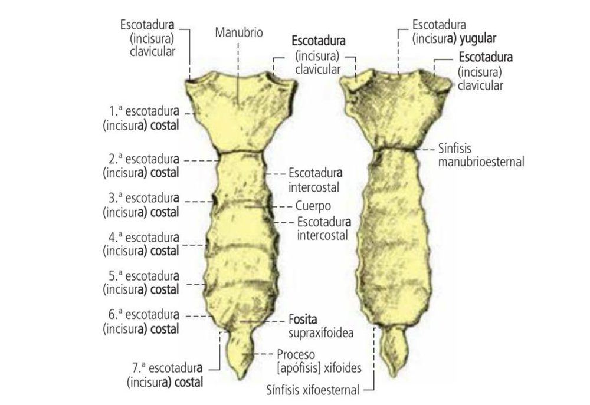
Del apunte "Caja torácica" de la cátedra (lámina de Netter).Mirá primero la vista de frente (izquierda) y ubicá los tres segmentos de arriba abajo: manubrio, cuerpo y xifoides. ① En el borde superior del manubrio, la escotadura yugular (la "horquilla esternal" del apunte) y a los lados las escotaduras claviculares. ② Recorré el borde lateral: vas a encontrar las escotaduras costales 1.ª a 7.ª. Fijate que la 2.ª queda justo en la línea de unión manubrio-cuerpo: esa línea es la sínfisis manubrioesternal, y su relieve es el ángulo de Louis. Y notá que la 6.ª y la 7.ª escotaduras están muy juntas, casi en el borde del xifoides: por eso los cartílagos inferiores se amontonan y los de la 8.ª a la 10.ª ya ni llegan al esternón.
COSTILLAS: cuántas y de qué tipo
"Tipo: hueso plano. Trayecto: desde atrás (columna torácica) hacia adelante, al esternón. Son 12 costillas:"
1 a 7 — VERDADERAS: "cada una con su cartílago" que llega directo al esternón.
8, 9 y 10 — FALSAS: "sus cartílagos se fusionan y se unen al 7.º cartílago costal". Forman el reborde costal que palpás debajo del pecho.
11 y 12 — FLOTANTES: no llegan adelante; terminan libres entre los músculos de la pared abdominal.
Las partes de CADA costilla
"Todas presentan: extremidad posterior (cabeza, cuello y tubérculo costal), cuerpo y extremidad anterior."
"La 1.ª costilla tiene cara superior e inferior; desde la 2.ª a la 12.ª tienen cara medial y lateral."
La idea: la 1.ª costilla es casi horizontal y ancha (por eso sus caras miran arriba y abajo); las demás están paradas y oblicuas (por eso miran adentro y afuera).
Figura 2 Una costilla típica y el surco donde se esconde el paquete intercostal
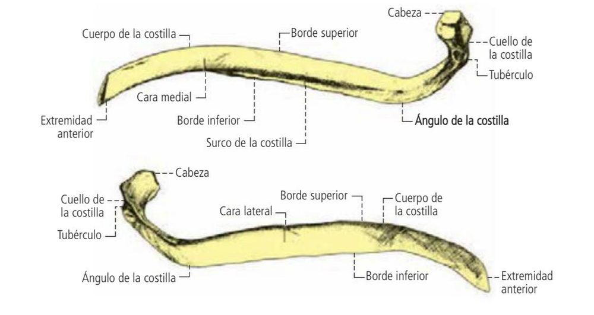
Del apunte "Caja torácica" (lámina de Netter). Arriba, la costilla vista por su cara medial (la que mira al pulmón); abajo, por su cara lateral.
Empezá por el extremo de la derecha de la imagen de arriba: cabeza → cuello → tubérculo. Esas tres piezas forman la extremidad posterior del apunte, y son las que se articulan con la vértebra (la cabeza con el cuerpo, el tubérculo con la apófisis transversa). ① Seguí hacia la izquierda: la costilla dobla bruscamente en el ángulo de la costilla y sigue como cuerpo. ② Ahora buscá, en la vista de arriba, el SURCO DE LA COSTILLA sobre el borde inferior. Ese surco es la clave clínica de toda la figura: ahí adentro corren la vena, la arteria y el nervio intercostal. Por eso toda aguja que entra al tórax (una punción pleural, un drenaje) se apoya en el borde SUPERIOR de la costilla de abajo, nunca en el borde inferior de la de arriba.
La 1.ª costilla, la más particular
"Contribuye a la formación del conducto torácico superior. Cara superior: parte posterior (muscular): inserción del serrato posterior superior, iliocostal y escalenos medio y posterior. Parte anterior (vascular): forma el piso del hiato interescalénico por donde pasa la arteria subclavia y el plexo braquial. Acá se encuentra el tubérculo de Lisfranc: acá se inserta el escaleno anterior. Cara inferior: se aplica sobre la membrana suprapleural. Recibe el ligamento suspensorio pleural y el vértice pulmonar."
Por qué la 1.ª costilla aparece en la guardia. Por encima de ella pasan la arteria subclavia y el plexo braquial, apretados entre el escaleno anterior y el medio. Una costilla cervical o un escaleno hipertrófico estrechan ese hiato y dan el síndrome del opérculo torácico: parestesias en el brazo y pulso radial que se apaga al levantarlo. Y por debajo está el vértice del pulmón: un tumor del vértice (tumor de Pancoast) invade el plexo braquial y la cadena simpática — dolor en el brazo y síndrome de Horner. Todo por vecindad anatómica sobre un solo hueso.
Figura 3 La caja torácica completa, de frente y de atrás
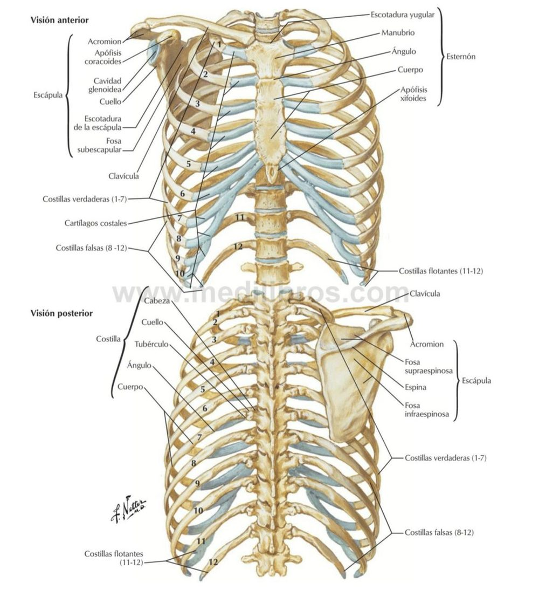
Del apunte "Caja torácica" (lámina de Netter).En la vista anterior (arriba) fijate en el color: el hueso es amarillo y los cartílagos costales son celestes. ① Seguí los cartílagos de la 1.ª a la 7.ª costilla: cada uno llega solo al esternón. Son las verdaderas. ② Los cartílagos de la 8.ª, 9.ª y 10.ª se suben al de arriba y forman el reborde costal. Son las falsas. ③ En la vista posterior (abajo) buscá la 11.ª y la 12.ª: cortitas, terminan en punta y no tienen a quién unirse. Son las flotantes. Ojo con un detalle de nomenclatura: el Netter rotula "costillas falsas (8-12)", o sea que cuenta las flotantes dentro de las falsas. El apunte las separa en tres grupos (7 + 3 + 2). Las dos cosas son correctas; en el examen usá la del apunte.
El paquete vasculonervioso intercostal y la regla de la aguja
"Tanto en la cara inferior de la 1.ª costilla como en el borde inferior de la 2.ª a la 12.ª costilla está el paquete vasculonervioso intercostal, formado por: vena intercostal, arteria intercostal, nervio intercostal. Por lo que todo procedimiento a nivel de un espacio intercostal se realiza a nivel del borde superior de la costilla subyacente, para no dañar al paquete vasculonervioso."
Regla mnemotécnica del orden, de arriba abajo: VAN — Vena, Arteria, Nervio. La vena queda más protegida dentro del surco; el nervio, el más expuesto, abajo.
Figura 4 Corte horizontal de un espacio intercostal: capas y paquete vasculonervioso
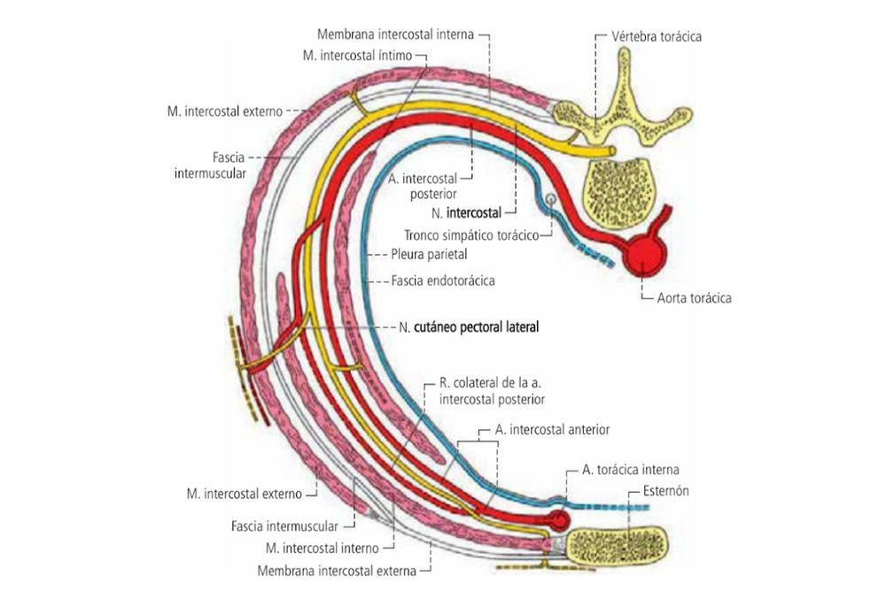
Imagen del material de la cátedra (captura de un tratado de anatomía incluida en el apunte; el pie original es "Fig. 74-2. Corte horizontal esquemático de un espacio intercostal").
Leé la pared de afuera hacia adentro, siguiendo cualquier radio desde la piel hasta el pulmón: ①M. intercostal EXTERNO (el de más afuera) → M. intercostal INTERNO → M. intercostal ÍNTIMO (el más profundo). ② Por dentro de los músculos, la fascia endotorácica y la pleura parietal: la última capa antes del pulmón. ③ Ahora seguí los colores: la arteria intercostal posterior (roja) nace de la aorta torácica atrás; el nervio intercostal (amarillo) sale de la médula; adelante, junto al esternón, llega la arteria torácica interna que da la intercostal anterior. Los dos sistemas se unen en el medio del espacio. Fijate dónde corren el nervio y los vasos: entre el intercostal interno y el íntimo. Ese plano es el que protege el surco costal.
2. Las articulaciones del tórax
Cada costilla tiene tres uniones: dos atrás, con la vértebra, y una adelante, con el esternón a través de su cartílago. Con eso alcanza para entender el movimiento.
Articulación
Qué une
Tipo
Medios de unión (apunte)
COSTOVERTEBRAL
Cabeza de la costilla con las fositas costales del cuerpo vertebral
Diartrosis · plana
Ligamentos anterior o radiado de la cabeza, posterior e intraarticular
COSTOTRANSVERSA
Tubérculo de la costilla con la apófisis transversa(ver errata abajo)
Diartrosis · plana
Cápsula; ligamentos superior, inferior, lateral y costotransverso
COSTOCONDRAL
Extremidad anterior de la costilla con su cartílago
Sinartrosis
—
INTERCONDRALES
Cartílagos vecinos entre sí (6.º a 10.º)
—
—
ESTERNALES
Segmentos del esternón
Sínfisis
Sínfisis manubrioesternal y xifoesternal
Figura 5 Articulaciones costovertebrales, costotransversas y esternocostales
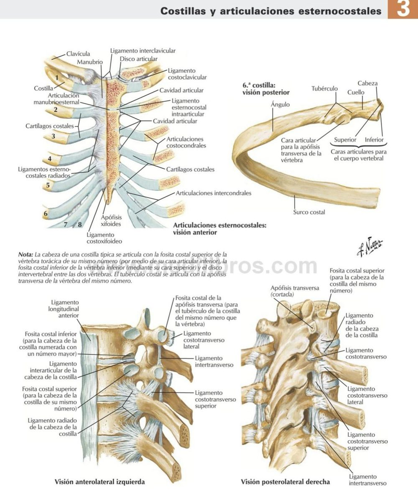
Del apunte "Caja torácica" (lámina de Netter "Costillas y articulaciones esternocostales").Arrancá por los dos dibujos de abajo, que son los que pide el sílabo. ① En la vista anterolateral izquierda, buscá el ligamento radiado de la cabeza de la costilla: un abanico que va de la cabeza de la costilla a los dos cuerpos vertebrales vecinos. Eso es la articulación COSTOVERTEBRAL. ② En la vista posterolateral derecha, mirá cómo el tubérculo de la costilla se apoya en la punta de la apófisis transversa, rodeado por los ligamentos costotransversos. Eso es la COSTOTRANSVERSA. ③ Arriba, la vista anterior muestra las articulaciones esternocostales y el ligamento esternocostal radiado adelante. Ubicá también la "Nota" del pie de la lámina: la cabeza de la costilla típica se articula con dos vértebras (la de su mismo número y la de arriba). Por eso la fosita costal del cuerpo vertebral es una media carilla.
Dos apoyos atrás (cabeza y tubérculo) definen un eje de rotación que pasa por el cuello de la costilla. Como ese eje es oblicuo, cuando la costilla gira sobre él pasan dos cosas a la vez: el extremo anterior sube y se adelanta (el esternón se va hacia adelante, como el brazo de un surtidor) y el cuerpo de la costilla se abre hacia afuera (como el asa de un balde que se levanta). Resultado: el tórax crece en sentido anteroposterior y transversal al mismo tiempo. Y el cartílago adelante es lo que permite ese movimiento: si fuera hueso rígido, la costilla quedaría trabada.
Por qué el anciano respira "con la panza". Con la edad los cartílagos costales se calcifican: las sinartrosis anteriores se vuelven rígidas, las costillas pierden su "asa de balde" y la respiración depende cada vez más del diafragma. Lo mismo pasa en la espondilitis anquilosante, donde se fusionan las articulaciones costovertebrales: la expansión torácica medida con cinta métrica cae por debajo de 2,5 cm. Es la anatomía de las bisagras hecha semiología.
Dos erratas del apunte "Caja torácica" que conviene corregir
① En la costotransversa el apunte repite lo de la costovertebral: "Articula: la costilla y el cuerpo vertebral. Superficies articulares: Costilla: cabeza; Cuerpo vertebral: apófisis transversa". Es un copiar-pegar: la costotransversa une el TUBÉRCULO de la costilla con la APÓFISIS TRANSVERSA de la vértebra. La cabeza va al cuerpo (costovertebral); el tubérculo va a la transversa (costotransversa). (Y el ligamento "costolavilar" de la lista es un error de tipeo.)
② En la costocondral dice "Diartrosis o sinartrosis: sinartrosis. Tipo: articulación elipsoidea". Las dos cosas no pueden ser verdad juntas: "elipsoidea" es un tipo de diartrosis. La costocondral es una sinartrosis (el hueso se continúa directamente con el cartílago, sin cavidad). Quedate con esa.
3. Los músculos del tórax
INTERCOSTAL EXTERNO
"Inserciones proximales: articulación costotransversa. Distales: en la línea axilar media. Sus fibras son oblicuas de arriba abajo y de atrás hacia adelante."
Truco: es la dirección de las manos en los bolsillos de la campera.
INTERCOSTAL INTERNO
"Inserciones proximales: en la línea axilar media. Distales: en el esternón. Sus fibras son oblicuas de arriba abajo y de adelante hacia atrás."
Perpendicular al externo: forman una X.
INTERCOSTAL ÍNTIMO
"Inserciones proximales: en la articulación costovertebral. Distales: en el esternón."
Es la capa más profunda; entre él y el interno corre el paquete vasculonervioso.
Y el apunte agrega tres grupos menores de la pared torácica:
Elevadores de las costillas (supracostales): de la apófisis transversa a la costilla subyacente, por atrás. Su nombre dice su acción.
Subcostales (infracostales): en la parte posterior, saltan una o dos costillas; continúan a los íntimos.
Transverso del tórax (triangular del esternón): "inserciones proximales: en la cara posterior o profunda del cuerpo del esternón y de la apófisis xifoides. Distales: en la cara profunda del 3.º, 4.º, 5.º y 6.º cartílago costal". Está por dentro de la pared anterior.
Figura 6 Los intercostales externo e interno: dos capas que se cruzan en X
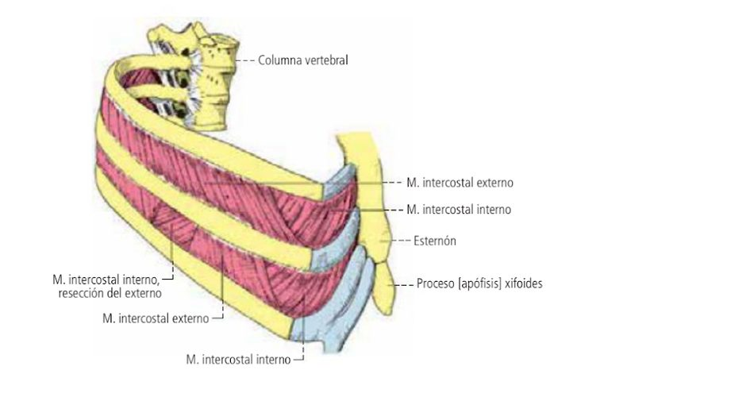
Del apunte "Caja torácica" (captura de un tratado incluida en el apunte; el pie original, "Músculos intercostales internos y externos. Se realizó una resección de una parte de un músculo intercostal externo", viene cortado en el propio material).
Ubicá la columna arriba a la izquierda y el esternón abajo a la derecha: así sabés dónde es "atrás" y dónde "adelante". ① Seguí las rayitas del intercostal externo: bajan desde la columna hacia adelante (manos en los bolsillos). ② Buscá el rótulo "M. intercostal interno, resección del externo": el dibujante sacó un pedazo del externo para mostrar el de abajo. Sus fibras van al revés: cruzan a las del externo como una X. ③ Mirá dónde termina cada uno: el externo se vuelve membrana adelante (cerca del esternón), y el interno deja membrana atrás. Por eso cada uno tiene inserciones en mitades distintas del espacio.
Figura 7 Elevadores de las costillas (atrás) y transverso del tórax (adelante, por dentro)
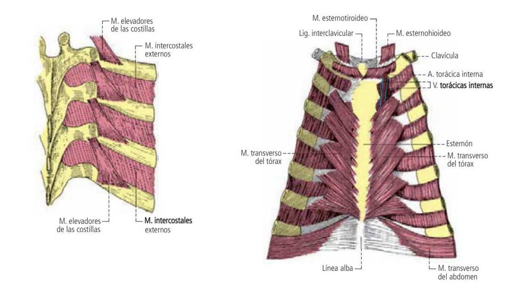
Del apunte "Caja torácica". Izquierda: elevadores de las costillas, vista posterior. Derecha: transverso del tórax, vista posterior de la pared anterior (como si estuvieras parado adentro del tórax mirando el esternón).
En el dibujo izquierdo, seguí cada elevador: un abanico corto que baja desde la punta de la apófisis transversa hasta la costilla de abajo, cerca de su ángulo.
En el derecho, buscá el esternón en el centro y los abanicos rojos que salen de su cara profunda hacia los cartílagos 3.º a 6.º: eso es el transverso del tórax. Arriba vas a ver los vasos torácicos internos corriendo por detrás de los cartílagos. Por esa ubicación el transverso del tórax es un músculo espiratorio: tira de los cartílagos hacia abajo y adentro.
Las fuentes de la cátedra no coinciden en la función de los intercostales
El apunte de anatomía dice de los tres intercostales: "Acción: músculos accesorios para la respiración (se los utiliza en situaciones de esfuerzo)". Pero el teórico de fisiología de la Dra. Peral dice: "Músculos de la inspiración. Normal: diafragma-intercostales externos... Músculos de la espiración: Normal: pasivo por retroceso elástico. Forzada: intercostales internos, músculos abdominales".
Cómo contestar para no equivocarte: en fisiología, lo que se pregunta es la mecánica: el diafragma es el músculo principal (hace el 70-75 % del trabajo en reposo), los intercostales EXTERNOS ayudan en la inspiración (elevan las costillas), y los INTERNOS actúan en la espiración forzada (las descienden). Si te preguntan en anatomía, podés decir que "en reposo el trabajo lo hace el diafragma y los intercostales se reclutan con el esfuerzo", que es lo que quiere decir el apunte. Mencionar la diferencia demuestra que leíste las dos fuentes.
Y una errata más: para el íntimo, el apunte copia la dirección de fibras del externo ("de atrás hacia adelante"). El íntimo acompaña al interno; como el apunte no le da una acción propia, en el examen alcanza con decir que es la capa más profunda y que el paquete corre por encima de él.
¿Cómo vas con el esqueleto del tórax, sus articulaciones y los intercostales?
🔒 Resolvé el mini-test de abajo para desbloquear el semáforo.
📝 Mini-test 1 — Esqueleto, articulaciones y músculos intercostales
1. Las costillas FALSAS, según el apunte de la cátedra, son:
Correcta: C.A son las verdaderas y B las flotantes. D no es un criterio de clasificación: casi todas las costillas se articulan con dos vértebras. Si en otro libro leés "falsas (8-12)", es porque incluyen a las flotantes; el apunte las separa en 7 + 3 + 2.
2. Un residente va a hacer una punción pleural en el 7.º espacio intercostal. ¿Dónde tiene que apoyar la aguja y por qué?
Correcta: A."Todo procedimiento a nivel de un espacio intercostal se realiza a nivel del borde superior de la costilla subyacente". B es exactamente el lugar peligroso. D es falsa: el paquete está en la pared, por fuera de la pleura, entre el intercostal interno y el íntimo.
3. La articulación COSTOTRANSVERSA une:
Correcta: B.A es la costovertebral, D la costocondral y C describe mal la esternocostal. Ojo: el apunte, por un copiar-pegar, pone "cabeza" y "cuerpo vertebral" también en la costotransversa. Cabeza → cuerpo; tubérculo → transversa.
4. El DIAFRAGMA
"Tipo: impar, plano, ancho y delgado. Descripción: es un tabique que está entre el tórax y el abdomen. Tiene forma de cúpula con convexidad torácica."
Imaginalo como un paracaídas: la tela del centro es un tendón (el centro frénico) y las cuerdas que lo atan al borde del tórax son fibras musculares. Cuando las cuerdas se contraen, tiran de la tela hacia abajo: la cúpula se aplana, el tórax gana altura y el pulmón se llena.
Las inserciones: tres porciones
Porción LUMBAR
"Se inserta a través de pilares diafragmáticos: pilar derecho (L1-L3), pilar izquierdo (L1 y L2). Están unidos arriba y separados abajo por el hiato esofágico y aórtico."
Porción COSTAL
"6 últimas costillas, cara medial; las inserciones forman los arcos de Senac."
Porción ESTERNAL
"Cara posterior de la apófisis xifoides."
El CENTRO TENDINOSO (frénico)
"Está interpuesto entre las fibras musculares. Constituye la lámina fibrosa llamada 'espejo de Van Helmont'. Tiene forma de trébol de 3 hojas o foliolos:"
Foliolo anterior: "es más ancho y corto. Se encuentra cerca del esternón."
Foliolo derecho: "en él se encuentra el foramen de la vena cava inferior."
Foliolo izquierdo.
"La parte anterior del centro tendinoso se relaciona con el pericardio." (El apunte escribe "Von Helmont"; el nombre es Van Helmont.)
Las CÚPULAS
"El diafragma tiene 2 cúpulas, una derecha e izquierda. La cúpula derecha está más elevada que la izquierda por la presencia del hígado. Las cúpulas aparecen en el 4.º espacio intercostal."
Por qué importa: en una radiografía de tórax normal el hemidiafragma derecho está 1-2 cm más alto. Si ves el izquierdo más alto, algo lo empuja desde abajo o algo lo dejó de sostener: una parálisis del frénico izquierdo, por ejemplo.
Figura 8 El diafragma visto desde arriba: centro tendinoso, cúpulas y lo que lo atraviesa
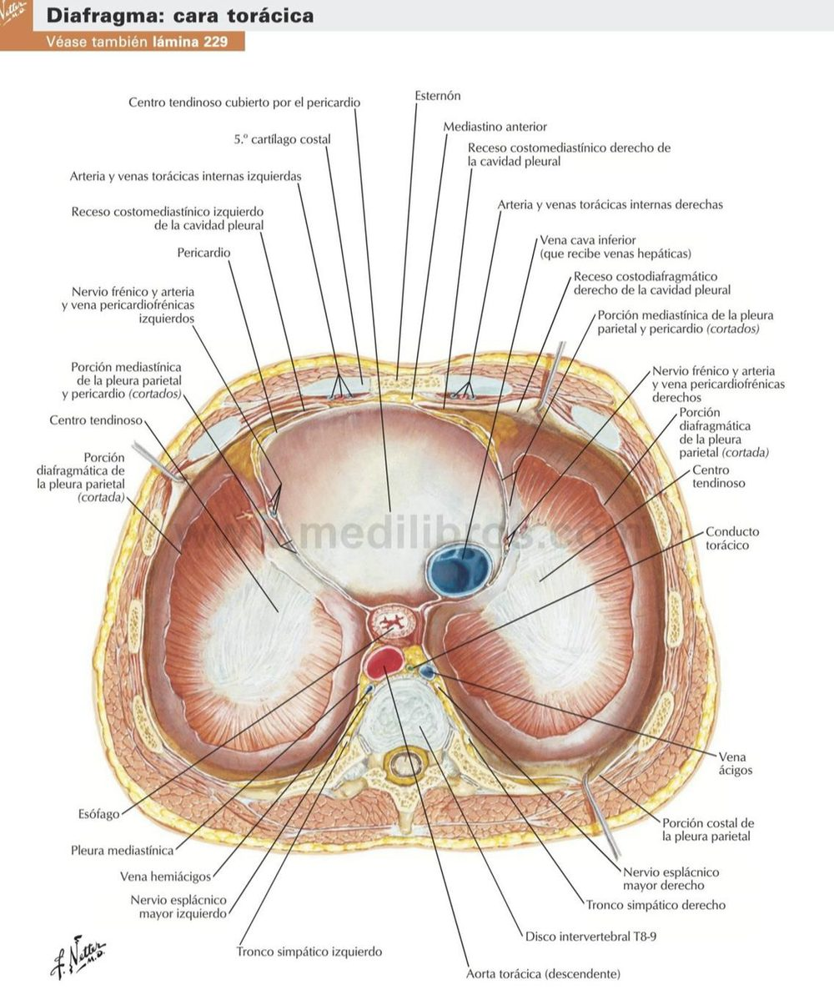
Del apunte "Caja torácica" (lámina de Netter "Diafragma: cara torácica"). Estás mirando el piso del tórax desde arriba, con los pulmones y el corazón sacados; el esternón queda arriba en la imagen y la columna abajo.
① Ubicá el gran área blanca del centro: es el centro tendinoso, y la parte de adelante está "cubierta por el pericardio" (así lo rotula la lámina): ahí se apoya el corazón. ② El círculo azul a la derecha del paciente (a tu izquierda) es la vena cava inferior, atravesando el tendón. El único hiato que está en el tendón y no en el músculo. ③ Detrás, cerca de la columna, el esófago y, pegada a la vértebra, la aorta torácica (roja). ④ A los costados del pericardio, buscá los rótulos "nervio frénico y arteria y vena pericardiofrénicas" derechos e izquierdos: bajan sobre el pericardio hasta el músculo. Y fijate el orden de adelante hacia atrás: vena cava → esófago → aorta. Es el mismo orden en que aumenta el nivel vertebral.
Los hiatos: tres principales y varios accesorios
Orificio (de anterior a posterior)
Dónde está
Nivel (apunte)
Qué pasa
Foramen de la VENA CAVA INFERIOR
En el centro tendinoso, foliolo derecho
"aproximadamente a la altura de T9"
Vena cava inferior y rama abdominal del nervio frénico DERECHO
Hiato ESOFÁGICO
"Entre las fibras musculares... por delante, arriba y a la izquierda del hiato aórtico"
(no lo da; clásicamente T10)
Esófago y nervios vagos — "izquierdo por delante, derecho por detrás"
Hiato AÓRTICO
"Pegado a la columna", detrás de los pilares
"entre T12 y L1"
Aorta descendente y la cisterna del quilo (origen del conducto torácico)
Orificios ACCESORIOS (lo que dice el apunte)
Entre pilar derecho e izquierdo: tronco simpático y nervio esplácnico menor.
A través del pilar derecho: nervio esplácnico mayor.
Entre fibras de los pilares: vena ácigos por el lado derecho; hemiácigos por el izquierdo.
Ligamentos arcuatos (arqueados) medial y lateral, y otros posibles orificios: lumbocostal y esternocostal.
La lista del apunte repite el esplácnico mayor en tres lugares distintos. Lo seguro para el examen: los esplácnicos atraviesan los pilares, la ácigos a la derecha y la hemiácigos a la izquierda, y el tronco simpático pasa por detrás del arco medial.
¿Por qué la vena cava pasa por el tendón y la aorta por detrás de los pilares? Pensá qué pasa en cada inspiración. Cuando el músculo se contrae, aprieta todo lo que lo atraviesa entre sus fibras. Al esófago eso le viene bien: el diafragma funciona como un esfínter externo que impide el reflujo. Pero una vena, de paredes blandas, quedaría estrangulada 15 veces por minuto. En el tendón, en cambio, el orificio se mantiene abierto — y hasta se agranda cuando el tendón se estira, lo que favorece el retorno venoso en la inspiración. La aorta, de pared gruesa y alta presión, directamente pasa por detrás del músculo, por debajo del ligamento arqueado medio: no la aprieta nadie.
Figura 9 El diafragma visto desde abajo: pilares, ligamentos arqueados y los tres hiatos
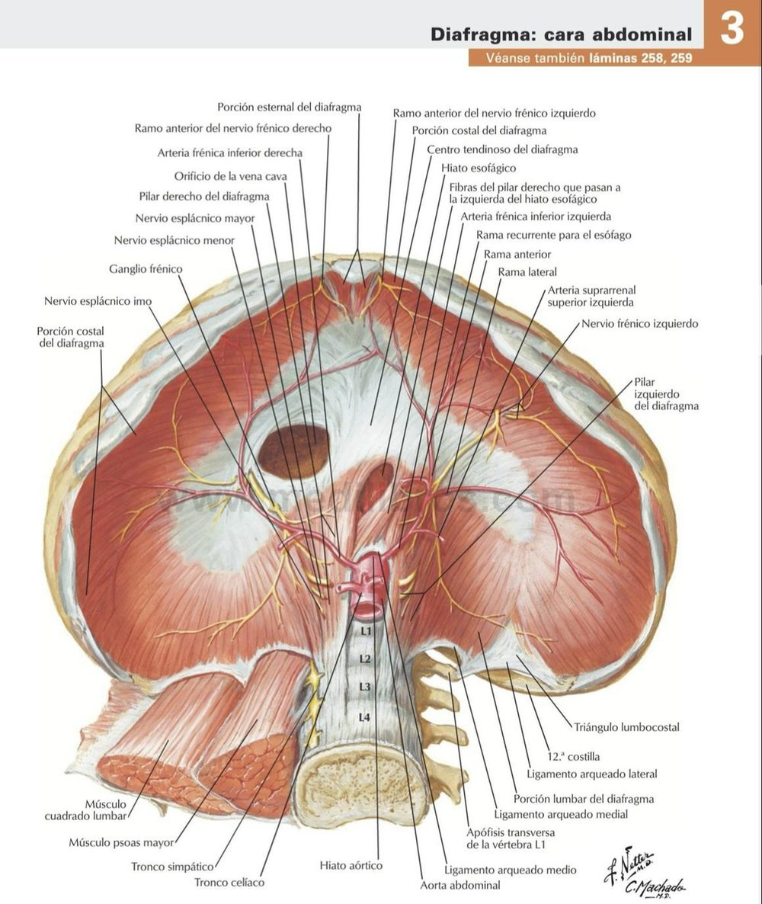
Del apunte "Caja torácica" (lámina de Netter "Diafragma: cara abdominal").① Abajo en el centro están las vértebras rotuladas L1 a L4. De ellas suben los dos pilares: el derecho (a tu izquierda) es más largo y grueso — llega hasta L3, como dice el apunte. ② Seguí los pilares hacia arriba: se cruzan y dejan un arco sobre la aorta abdominal. Ese arco es el ligamento arqueado medio, y por debajo está el HIATO AÓRTICO. ③ Un poco más arriba y a la izquierda, entre fibras musculares, el HIATO ESOFÁGICO. Buscá el rótulo "fibras del pilar derecho que pasan a la izquierda del hiato esofágico": es el pilar derecho el que rodea al esófago como un lazo. ④ El gran óvalo oscuro en el tendón es el orificio de la vena cava. ⑤ A los costados de la columna, los ligamentos arqueados medial (sobre el psoas) y lateral (sobre el cuadrado lumbar): de ahí nace la porción lumbar más externa. Fijate también en los ramos del nervio frénico que se abren en abanico sobre la cara abdominal: el frénico llega por arriba pero se distribuye por abajo del músculo.
🔀 Ordená los hiatos principales del diafragma de ANTERIOR a POSTERIOR (y de más alto a más bajo)
Arrastrá para ordenar del 1 al 3. Pista: el orden anteroposterior coincide con el orden de nivel vertebral.
🔴 HIATO AÓRTICO — pegado a la columna, entre T12 y L1, detrás del ligamento arqueado medio. Aorta + cisterna del quilo
🔵 FORAMEN DE LA VENA CAVA — en el foliolo derecho del centro tendinoso, ~T9 según el apunte. Vena cava + rama del frénico derecho
🟢 HIATO ESOFÁGICO — entre fibras musculares del pilar derecho. Esófago + los dos vagos
ACCIÓN
"Es el músculo de la respiración, mayormente de la inspiración. Cuando se contrae desciende y permite la inspiración. Cuando se relaja permite la espiración."
VASCULARIZACIÓN y LINFÁTICOS
Arterias: la torácica interna (rama de la subclavia), que desciende con el frénico y da la pericardiofrénica (diafragmática superior) y la musculofrénica; y las frénicas inferiores, ramas de la aorta abdominal. Venas: en sentido inverso, al sistema de las cavas. Linfáticos: redes subperitoneal y subpleural que drenan al conducto torácico.
Hernia hiatal: el hiato esofágico que se agranda. Si el lazo muscular del pilar derecho se afloja (edad, obesidad, embarazo, tos crónica), la parte alta del estómago sube al tórax por el hiato esofágico. El diafragma deja de funcionar como esfínter externo y aparece el reflujo gastroesofágico: acidez que empeora acostado. Y en el recién nacido, la falla de cierre de la parte posterolateral del diafragma (hernia de Bochdalek) deja subir las vísceras al tórax y el pulmón de ese lado no se desarrolla: una emergencia neonatal. El diafragma no es solo un músculo respiratorio: es una frontera, y cuando falla la frontera, el abdomen invade al tórax.
5. Los NERVIOS FRÉNICOS
Origen: el cuello manda al diafragma
"Origen: ramas ventrales de los nervios cervicales: raíz principal: 4.º nervio cervical; raíces accesorias: 3.º y 5.º nervio cervical."
La frase que no se olvida: "C3, 4 y 5 mantienen vivo al diafragma". ¿Por qué un músculo del tórax-abdomen está inervado desde el cuello? Porque en el embrión el diafragma se forma a la altura del cuello (del septum transversum, frente a los somitas cervicales) y desciende después, arrastrando su nervio consigo. El frénico es el cable que quedó estirado de esa mudanza.
⚙️ El trayecto del frénico, de arriba abajo (apunte)
En el cuello:"se dirige por el borde lateral del músculo escaleno anterior, cruza como X hacia medial al músculo". Es decir: baja apoyado sobre la cara anterior del escaleno anterior, dentro de su vaina.
En la base del cuello:"se desliza entre la arteria y la vena subclavia, medial a la cúpula pleural. Penetra el tórax."
En el tórax:"recorre el mediastino y termina en el diafragma". Junto con los vasos pericardiofrénicos forma "el eje vasculonervioso del diafragma", y corre por delante de la raíz del pulmón, sobre el pericardio.
Frénico DERECHO:"sigue la cara lateral de la vena cava superior, luego la del pericardio... próximo a la cara anterolateral de la vena cava inferior penetra el diafragma" — y lo atraviesa por el foramen de la vena cava.
Frénico IZQUIERDO:"delante y lateral de la carótida común, luego del cayado aórtico. Pasa delante de la raíz pulmonar, por la cara lateral del pericardio, se amolda al ventrículo izquierdo, detrás de la punta del corazón alcanza el diafragma". Es más largo, porque el corazón lo empuja hacia la izquierda.
Ramas: colaterales (al ganglio cervicotorácico, pleurales, pericárdicas y vasculares) y terminales anterior, lateral y posterior, que se abren en abanico en el músculo.
Figura 10 El frénico DERECHO en el mediastino: sobre la vena cava superior y el pericardio
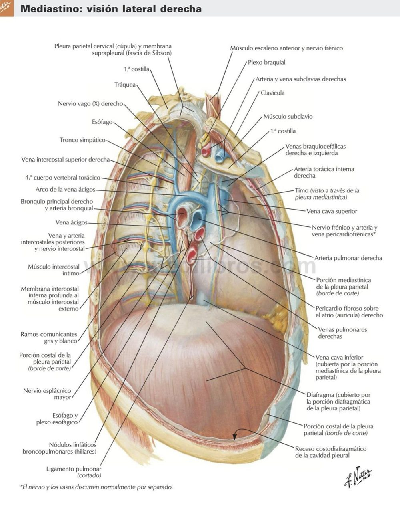
Del apunte "Caja torácica" (lámina de Netter "Mediastino: visión lateral derecha"). Imaginate que sacaste el pulmón derecho y mirás el mediastino desde la derecha del paciente.
① Ubicá en el centro la raíz del pulmón cortada (bronquio, arteria y venas pulmonares en círculos). ② Por delante de la raíz, sobre la gran superficie lisa del pericardio, bajá siguiendo el rótulo "nervio frénico derecho y arteria y vena pericardiofrénicas": pasa pegado a la vena cava superior arriba y llega al diafragma abajo. ③ Por detrás de la raíz corre el nervio vago, sobre el esófago. Regla: el frénico pasa por DELANTE de la raíz; el vago, por DETRÁS. ④ Arriba, la vena ácigos hace un arco sobre la raíz para desembocar en la cava superior. Más atrás, sobre las cabezas de las costillas, el tronco simpático y los nervios esplácnicos: los mismos que viste atravesar los pilares del diafragma.
Figura 11 El frénico IZQUIERDO: sobre el cayado aórtico y amoldado al ventrículo izquierdo
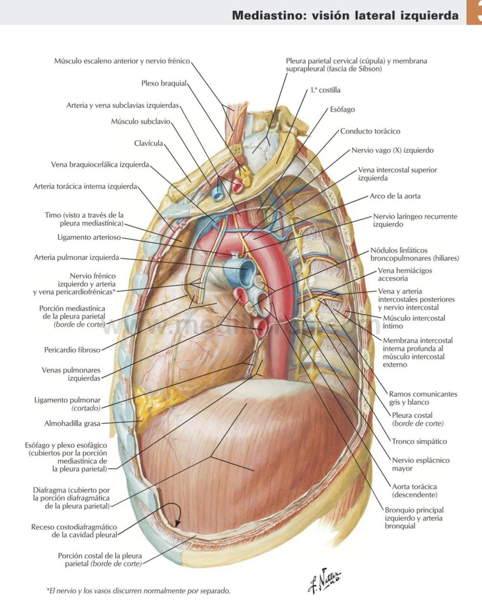
Del apunte "Caja torácica" (lámina de Netter "Mediastino: visión lateral izquierda").① Buscá el gran arco rojo: el cayado aórtico, que baja por detrás como aorta descendente. ② Cruzando el cayado por fuera van dos nervios paralelos: el frénico adelante y el vago atrás. Seguí el vago: debajo del cayado da el nervio laríngeo recurrente izquierdo, que se engancha en el arco y sube. ③ Ahora seguí el frénico hacia abajo: pasa delante de la raíz del pulmón y baja sobre el pericardio, siguiendo la gran curva del ventrículo izquierdo hasta el diafragma. Compará las dos láminas: el frénico izquierdo recorre un camino más largo y más lateral porque el corazón lo desplaza. Es lo que el apunte describe como "rechazado por la punta del corazón".
Tres consecuencias clínicas de un nervio que nace en C3-C5. ① Lesión medular cervical: un trauma por encima de C3 corta la orden al diafragma y el paciente no puede respirar solo (necesita respirador). Por debajo de C5, el diafragma sigue funcionando aunque se paralicen brazos y piernas.
② Parálisis frénica: un tumor del mediastino, una cirugía cardíaca o un bloqueo anestésico del plexo braquial pueden lesionar un frénico. En la radiografía, ese hemidiafragma queda elevado y en radioscopia sube en la inspiración en vez de bajar (movimiento paradójico).
③ Dolor referido al hombro: el frénico también lleva sensibilidad de la pleura y el pericardio (ramas pleurales y pericárdicas). Una irritación del diafragma — sangre bajo el diafragma por una rotura de bazo, una vesícula inflamada — duele en el hombro, porque C4 también inerva la piel de esa zona y el cerebro confunde el origen (signo de Kehr).
Y el hipo: es una contracción espasmódica e involuntaria del diafragma por irritación del frénico o del vago.
El diafragma y el frénico vuelven en la pestaña de Mecánica respiratoria (el diafragma hace el 70-75 % del trabajo de la inspiración tranquila) y en la de Regulación: los núcleos respiratorios del tronco encefálico mandan su orden por la médula hasta las motoneuronas de C3-C5, y de ahí por el frénico. Y el conducto torácico que nace en la cisterna del quilo, junto al hiato aórtico, es el que vas a ver drenando los ganglios del mediastino.
¿Cómo vas con el diafragma (inserciones, centro frénico e hiatos) y los nervios frénicos?
🔒 Resolvé el mini-test de abajo para desbloquear el semáforo.
📝 Mini-test 2 — Diafragma y nervios frénicos
1. ¿Qué estructura pasa por el foramen de la vena cava inferior, además de la vena?
Correcta: D. Los vagos van por el hiato esofágico (izquierdo adelante, derecho atrás). El conducto torácico nace de la cisterna del quilo, que pasa por el hiato aórtico. Los esplácnicos, por los pilares. El frénico izquierdo, en cambio, perfora el músculo por delante del foliolo anterior.
2. La cúpula diafragmática derecha está más alta que la izquierda porque:
Correcta: B."La cúpula derecha está más elevada que la izquierda por la presencia del hígado."A es al revés: un pulmón más grande empujaría hacia abajo. D es un dato verdadero (el pilar derecho llega a L3) pero no explica la altura de la cúpula. Aplicación: un hemidiafragma IZQUIERDO más alto que el derecho en la radiografía es anormal hasta que se demuestre lo contrario.
3. Un paciente con una lesión medular completa a nivel de C2 no puede respirar solo. La explicación anatómica es que:
Correcta: A.B es falsa: los intercostales dependen de los nervios torácicos y, además, el principal es el diafragma. C confunde el centro que da la orden (en el tronco) con el nervio que la lleva (que nace en C3-C5). "C3, 4 y 5 mantienen vivo al diafragma": una lesión por debajo de C5 respeta la respiración diafragmática.
Tocá cada tarjeta para ver la respuesta
Qué forma la caja torácicatocá
Adelante el ESTERNÓN, a los lados las COSTILLAS y los CARTÍLAGOS COSTALES, y atrás la COLUMNA TORÁCICA. Es rígida para proteger pero se deforma con cada respiración.
Esternón: tipo y segmentostocá
Hueso impar, mediano, simétrico, plano y superficial, de 15 a 20 cm. Tres segmentos: MANUBRIO (horquilla esternal y carillas claviculares), CUERPO (carillas hasta el 7.º cartílago) y APÓFISIS XIFOIDES (se insertan el diafragma y el recto abdominal).
Ángulo de Louistocá
Unión del manubrio con el cuerpo del esternón. Es palpable y a su nivel se articula el 2.º cartílago costal: por eso sirve para contar costillas y encontrar los espacios intercostales.
Costillas verdaderas, falsas y flotantestocá
VERDADERAS: 1.ª a 7.ª, cada una con su cartílago al esternón. FALSAS: 8.ª, 9.ª y 10.ª, sus cartílagos se unen al 7.º. FLOTANTES: 11.ª y 12.ª, sin unión anterior.
Partes de una costillatocá
Extremidad POSTERIOR (cabeza, cuello y tubérculo), CUERPO y extremidad ANTERIOR. La 1.ª tiene caras superior e inferior; de la 2.ª a la 12.ª, caras medial y lateral.
1.ª costilla: cara superiortocá
Parte posterior MUSCULAR (escalenos medio y posterior). Parte anterior VASCULAR: piso del hiato interescalénico (arteria subclavia y plexo braquial) con el tubérculo de Lisfranc, donde se inserta el escaleno anterior.
Paquete vasculonervioso intercostaltocá
Vena, arteria y nervio intercostal (VAN, de arriba abajo), en el surco del borde INFERIOR de cada costilla. Por eso los procedimientos se hacen sobre el borde SUPERIOR de la costilla de abajo.
Costovertebral vs costotransversatocá
COSTOVERTEBRAL: cabeza de la costilla con las fositas costales del cuerpo vertebral (ligamento radiado, posterior e intraarticular). COSTOTRANSVERSA: tubérculo con la apófisis transversa. Ambas diartrosis planas.
Costocondral y esternalestocá
Costocondral: sinartrosis entre la extremidad anterior de la costilla y su cartílago. Esternales: sínfisis manubrioesternal y xifoesternal.
Surtidor y asa de baldetocá
Al rotar sobre el eje oblicuo que pasa por cabeza y tubérculo, la costilla eleva el esternón hacia adelante (brazo de surtidor, diámetro anteroposterior) y abre su cuerpo hacia afuera (asa de balde, diámetro transversal).
Dirección de los intercostalestocá
EXTERNO: de arriba abajo y de atrás hacia adelante (manos en los bolsillos), de la costotransversa a la línea axilar media. INTERNO: de arriba abajo y de adelante hacia atrás, de la axilar media al esternón. Se cruzan en X.
Función de los intercostalestocá
Fisiología: EXTERNOS elevan las costillas en la inspiración; INTERNOS las descienden en la espiración forzada. El apunte de anatomía los llama accesorios porque en reposo el trabajo lo hace el diafragma.
Transverso del tóraxtocá
También llamado triangular del esternón. Desde la cara posterior del cuerpo del esternón y la xifoides hasta la cara profunda de los cartílagos 3.º a 6.º. Está por dentro de la pared anterior.
Diafragma: tres porcionestocá
LUMBAR: pilares derecho (L1-L3) e izquierdo (L1-L2). COSTAL: cara medial de las 6 últimas costillas (arcos de Senac). ESTERNAL: cara posterior de la xifoides.
Centro tendinosotocá
Lámina fibrosa central (espejo de Van Helmont) en forma de trébol: foliolo ANTERIOR (ancho y corto, junto al esternón, en relación con el pericardio), DERECHO (con el foramen de la vena cava) e IZQUIERDO.
Los tres hiatos principalestocá
De adelante atrás: VENA CAVA (tendón, ~T9 según el apunte; VCI + rama del frénico derecho), ESOFÁGICO (músculo; esófago + vagos) y AÓRTICO (T12-L1; aorta + cisterna del quilo).
Por qué la cava pasa por el tendóntocá
Porque el tendón no la aprieta al contraerse el músculo: el orificio se mantiene abierto e incluso se agranda en la inspiración, lo que favorece el retorno venoso. El esófago, en cambio, pasa entre fibras que actúan como esfínter.
Nervio frénico: origentocá
Ramas ventrales de C3, C4 (raíz principal) y C5. Baja sobre el escaleno anterior, pasa entre arteria y vena subclavia, entra al tórax y corre por delante de la raíz del pulmón con los vasos pericardiofrénicos.
Frénico derecho vs izquierdotocá
DERECHO: sobre la vena cava superior y el pericardio; atraviesa el diafragma por el foramen de la vena cava. IZQUIERDO: sobre el cayado aórtico, se amolda al ventrículo izquierdo y entra por delante del foliolo anterior. Es más largo.
Dolor en el hombro por el diafragmatocá
El frénico lleva sensibilidad de la pleura diafragmática y el pericardio. Como C4 también inerva la piel del hombro, una irritación diafragmática (sangre, vesícula inflamada) se siente en el hombro: dolor referido.
Progreso — Pulmones, árbol bronquial y pleura0%
📋 Contenido del sílabo que cubre esta pestaña: Pulmones: generalidades, descripción, segmentación pulmonar (concepto de segmento pulmonar, segmentos del pulmón derecho e izquierdo). Árbol bronquial: bronquios principales, lobares y segmentarios. Raíces o pedículos pulmonares. Pleura: pleura visceral, pleura parietal, cavidad pleural.
🚪 Desde cero: el pulmón es un árbol dado vuelta metido en una bolsa doble
Hay tres ideas que ordenan toda la anatomía del pulmón. Si las tenés claras, las 10 + 10 subdivisiones dejan de ser una lista para memorizar y pasan a ser una consecuencia lógica.
1. Un ÁRBOL invertido
La tráquea es el tronco. Se divide en 2 bronquios principales (uno por pulmón), cada uno en bronquios lobares (uno por lóbulo) y cada lobar en bronquios segmentarios (uno por segmento). Cada rama ventila un territorio propio, y ese territorio lleva su nombre.
2. Una PUERTA: el hilio
Todo lo que entra y sale del pulmón —bronquio, arteria, venas, nervios, linfáticos— lo hace por un solo lugar de su cara interna: el hilio. El haz de estructuras que pasa por ahí se llama raíz o pedículo pulmonar.
3. Una BOLSA DOBLE: la pleura
Apretá un globo desinflado con el puño: la capa del globo pegada a tu mano es la pleura visceral; la capa de afuera es la parietal; el aire que queda adentro del globo es la cavidad pleural. Tu muñeca es el hilio, donde una hoja se continúa con la otra.
Y dos definiciones que conviene fijar desde el vamos:
Lóbulo: porción del pulmón separada por fisuras visibles desde afuera. Derecho: 3. Izquierdo: 2.
Segmento broncopulmonar: la porción de un lóbulo ventilada por un bronquio segmentario. No se ve desde afuera: no hay fisuras entre segmentos. Son 10 por pulmón.
1. Los bronquios principales: la primera bifurcación
Dónde termina la tráquea
El apunte "Vía aérea inferior" dice que la tráquea "se bifurca... hacia atrás, a la altura de T3-T4, está la carina traqueal y la divide en los bronquios fuentes (derecho e izquierdo)", y agrega que la tráquea "presenta una torsión sobre su eje, por lo que el bronquio derecho es más posterior que el izquierdo".
Bronquio fuente = bronquio principal: son sinónimos.
Derecho vs izquierdo: por qué NO son simétricos
El derecho es más corto, más ancho y más vertical: casi continúa la dirección de la tráquea. El izquierdo es más largo, más fino y más horizontal, porque tiene que pasar por debajo del cayado aórtico y hacerle lugar al corazón, que está volcado a la izquierda.
El maní que se va a la derecha. Un chico aspira un maní o una pieza de juguete: casi siempre termina en el bronquio principal DERECHO, porque es el más vertical y ancho, y el objeto sigue la línea recta de la tráquea. Si el paciente estaba acostado boca arriba, cae además en los segmentos más posteriores: el superior del lóbulo inferior derecho (el segmento 6) y el posterior del lóbulo superior. Es el mismo razonamiento que explica dónde aparecen las neumonías aspirativas del paciente alcohólico o con trastorno deglutorio.
Figura 12 Tráquea, carina y bronquios principales, lobares y segmentarios
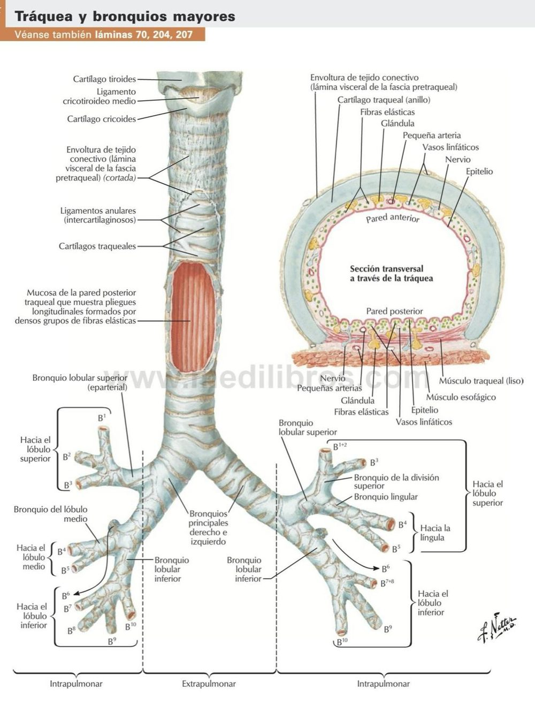
Del apunte "Vía aérea inferior" (lámina de Netter "Tráquea y bronquios mayores").① Bajá por la tráquea contando los anillos cartilaginosos (en U, abiertos atrás) hasta la bifurcación. ② Compará los dos bronquios principales: el derecho (a tu izquierda) baja más empinado; el izquierdo sale más acostado. ③ Seguí el derecho: casi enseguida da el bronquio lobar superior; lo que sigue, antes de dar el medio y el inferior, se llama bronquio intermediario. En el izquierdo, en cambio, solo hay dos lobares: superior e inferior. ④ En los extremos de cada lobar vas a ver números entre paréntesis o nombres: son los segmentarios. Arriba a la derecha, el corte transversal: fijate que la pared posterior es membranosa (músculo traqueal), sin cartílago. Eso deja que el esófago, que va justo detrás, se expanda al tragar. (La histología de esta pared está en la guía de la Semana 17.)
2. Los pulmones: generalidades y descripción
Dato (apunte "Vía aérea inferior")
Pulmón DERECHO
Pulmón IZQUIERDO
Posición
"En la cavidad torácica, separados por el mediastino y sus órganos"
Medidas
Largo 25 cm · ancho 16 cm · base: 10 cm el derecho y 7 cm el izquierdo
Peso
600 g
500 g
Color · consistencia
Rosado claro · flácido y elástico
Lóbulos
3: superior, medio e inferior
2: superior e inferior (con la língula)
Fisuras
Oblicua (mayor) + horizontal (menor)
Solo oblicua
¿Por qué el izquierdo es más chico y más liviano? Porque le cede espacio al corazón, que está volcado a la izquierda. Esa "mordida" del corazón deja en el borde anterior del pulmón izquierdo la incisura cardíaca, y por debajo de ella una lengüeta de pulmón que se llama língula ("lengüita"). La língula es, funcionalmente, el equivalente izquierdo del lóbulo medio derecho: por eso tiene dos segmentos, igual que el medio.
Las caras, los bordes y el vértice
Cara COSTAL
"Lisa y convexa. Está en contacto con el plano costointercostal. Ofrece exploración clínica y está expuesta a traumatismos. Está dividida por la fisura oblicua (mayor); en el derecho está también la fisura horizontal (menor)."
Cara MEDIASTÍNICA
"Cóncava. Se apoya sobre los órganos mediastínicos. Aquí se encuentra el hilio pulmonar." Tiene las impresiones de lo que la toca (ver abajo).
Cara DIAFRAGMÁTICA (base)
"Cóncava. Se moldea al hemidiafragma correspondiente. Desciende más posterior que anterior." La fisura oblicua la divide: en el derecho, adelante lóbulo medio y atrás inferior; en el izquierdo, adelante língula y atrás inferior.
VÉRTICE y BORDES
"Vértice (lóbulo superior): sobrepasa el borde superior de la 2.ª costilla. Se proyecta arriba en la región supraclavicular. Bordes: anterior e inferior (circunferencial)."
El vértice sobresale del tórax. Como el vértice del pulmón (con su cúpula pleural) sube por encima de la clavícula, una punción de la vena subclavia para poner un catéter, o una puñalada en la base del cuello, pueden perforar la pleura y causar un neumotórax aunque "no hayan tocado el tórax". Por eso después de colocar una vía central subclavia siempre se pide una radiografía de control.
Figura 13 Los pulmones en su lugar: lóbulos, fisuras y relación con la pared
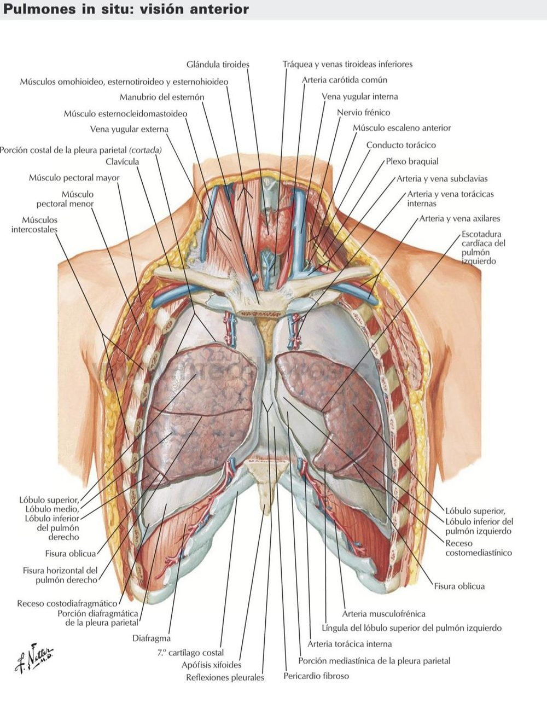
Del apunte "Vía aérea inferior" (lámina de Netter "Pulmones in situ: visión anterior").① En el pulmón derecho (a tu izquierda) buscá dos fisuras: la horizontal, casi recta, y la oblicua, que baja en diagonal. Entre las dos queda el lóbulo medio, en forma de cuña: es el que más "da la cara" adelante. ② En el izquierdo hay una sola fisura (oblicua). Buscá la incisura cardíaca en su borde anterior y, por debajo, la língula. ③ Fijate que el lóbulo inferior casi no se ve de frente: está atrás y abajo. Consecuencia semiológica: de frente auscultás sobre todo lóbulos superiores y medio/língula; los inferiores se auscultan por la espalda. Una neumonía de lóbulo inferior puede pasar inadvertida si solo auscultás el pecho.
Figura 14 El tórax cortado y los pulmones rodeados por sus sacos pleurales
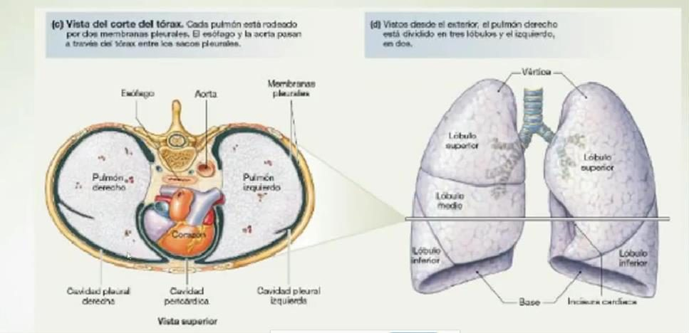
Del teórico "Fisiología Respiratoria Parte 1" (Dra. Peral). Izquierda: vista del corte del tórax. Derecha: vista de frente de los pulmones.
En el corte, ubicá primero el corazón en el centro, envuelto en la cavidad pericárdica, y detrás el esófago y la aorta: todo eso es el mediastino. A cada lado, un pulmón envuelto en su propia cavidad pleural. La idea clave que muestra este corte: hay dos cavidades pleurales independientes. Un neumotórax derecho no colapsa el pulmón izquierdo: por eso se puede sobrevivir a un neumotórax unilateral.
3. Las raíces o pedículos pulmonares
Raíz (pedículo) pulmonar = el conjunto de estructuras que entran o salen por el hilio, envuelto por la pleura que se refleja a su alrededor. El apunte describe los tres elementos grandes de cada lado:
HILIO DERECHO (apunte)
Bronquio fuente derecho: en el centro.
Arteria pulmonar derecha: "pasa por delante del bronquio"; lleva sangre carboxigenada.
Venas pulmonares: "pasan inferior a la arteria y al bronquio"; llevan sangre oxigenada.
HILIO IZQUIERDO (apunte)
Bronquio fuente izquierdo: en el centro.
Arteria pulmonar izquierda: "pasa por arriba del bronquio".
Venas pulmonares: "pasan inferior a la arteria y al bronquio".
Para no mezclarlos: "RALS" — Right → Arteria Anterior; Left → arteria Superior. Y en los dos lados, las venas siempre abajo (y adelante): son lo más bajo del hilio porque van a desembocar en la aurícula izquierda, que está por debajo.
Las IMPRESIONES de la cara mediastínica
Derecho: impresión cardíaca (adelante), de la vena cava superior (arriba del hilio) y de la vena ácigos (detrás del hilio).
Izquierdo: impresión cardíaca (adelante, "más grande que en el derecho debido al vértice del corazón"), del cayado aórtico (arriba del hilio) y de la aorta descendente (detrás del hilio).
Cada pulmón lleva "grabados" los vasos de su lado del mediastino: a la derecha, el sistema venoso (cavas, ácigos); a la izquierda, la aorta.
Los VASOS PULMONARES (apunte)
Arterias — "irrigación funcional": ramas terminales del tronco pulmonar, con sangre carboxigenada. La derecha"es la más voluminosa y larga": cruza por detrás de la aorta ascendente y la vena cava superior. La izquierda se sitúa sobre el bronquio lobar superior. Ambas se dividen siguiendo a los segmentos.
Venas: nacen de la red perialveolar → perilobulillar → intersegmentaria → lobares → "se reúnen en 4 troncos venosos, 2 para cada pulmón. Drenan en la aurícula izquierda. Llevan sangre oxigenada."
Arterias con sangre "venosa" y venas con sangre "arterial". En el circuito pulmonar los nombres se invierten respecto de la sangre: la arteria pulmonar lleva sangre pobre en O₂ (sale del ventrículo derecho) y las venas pulmonares llevan sangre oxigenada (van a la aurícula izquierda). Arteria y vena se definen por la dirección respecto del corazón (sale / llega), no por el contenido. Y la irrigación nutricia del pulmón (bronquios, pleura visceral) la dan las arterias bronquiales, ramas de la aorta — que el apunte menciona en la vascularización de la tráquea.
Figura 15 Las caras mediastínicas: el hilio, sus elementos y las impresiones
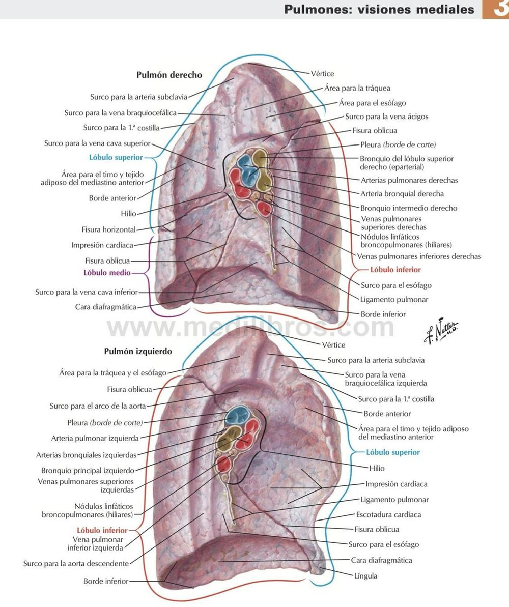
Del apunte "Vía aérea inferior" (lámina de Netter "Pulmones: visiones mediales"). Arriba el pulmón derecho; abajo el izquierdo.
① En cada pulmón buscá el hilio: el racimo de círculos cortados. Identificá el bronquio (pared gruesa, blanca), la arteria pulmonar (azul en Netter, porque lleva sangre desoxigenada) y las venas pulmonares (rojas, porque llevan sangre oxigenada). ② Aplicá RALS: en el derecho, la arteria está por delante del bronquio; en el izquierdo, por encima. En los dos, las venas son lo más bajo. ③ Buscá los ganglios broncopulmonares (hiliares): nodulitos junto a los bronquios. Son la estación 10 del mapa IASLC que vas a ver en la pestaña de Mediastino. ④ Debajo del hilio, la pleura forma una "cola" que baja: el ligamento pulmonar. ⑤ Alrededor del hilio, los surcos: en el derecho, de la vena ácigos (arriba y atrás) y de la cava superior; en el izquierdo, el gran surco del arco aórtico y de la aorta descendente.
¿Cómo vas con los pulmones (caras, lóbulos, fisuras) y las raíces pulmonares?
🔒 Resolvé el mini-test de abajo para desbloquear el semáforo.
📝 Mini-test 1 — Pulmones y raíces pulmonares
1. El pulmón izquierdo, a diferencia del derecho:
Correcta: C.A describe al derecho. B y D están invertidas: el izquierdo pesa 500 g (contra 600) y su base mide 7 cm (contra 10). Todo por el mismo motivo: le cede espacio al corazón.
2. En el hilio pulmonar DERECHO, según el apunte, la arteria pulmonar se ubica:
Correcta: A.B es el hilio izquierdo (arteria arriba) mal combinado con venas atrás. Regla RALS: Right → arteria Anterior; Left → arteria Superior. En los dos lados el bronquio queda en el centro y las venas abajo.
3. ¿Qué afirmación sobre la circulación pulmonar es correcta?
Correcta: D.A invierte contenido y destino. B confunde las pulmonares (funcionales, del tronco pulmonar) con las bronquiales (nutricias, de la aorta). C contradice el apunte: "4 troncos venosos, 2 para cada pulmón".
4. El árbol bronquial y la segmentación pulmonar
Concepto de SEGMENTO PULMONAR (broncopulmonar)
Es la porción de un lóbulo ventilada por un bronquio segmentario e irrigada por la rama correspondiente de la arteria pulmonar, que viaja junto al bronquio en el centro del segmento. Las venas, en cambio, corren entre los segmentos — el apunte las llama "red intersegmentaria". Tiene forma de pirámide, con el vértice hacia el hilio y la base hacia la pleura.
Por qué importa: cada segmento es una unidad anatómica, funcional y quirúrgica. Como tiene su propio bronquio y su propia arteria, un cirujano puede extirpar un segmento enfermo (segmentectomía) guiándose por las venas intersegmentarias como límite, sin tocar los vecinos.
📒 Nota de honestidad: el sílabo pide "concepto de segmento pulmonar". El apunte "Vía aérea inferior" enumera los segmentos y describe la red venosa intersegmentaria, pero no da una definición formal de segmento. La definición de arriba es la estándar de la bibliografía anatómica, armada sobre lo que el apunte sí dice (un bronquio segmentario por segmento y venas intersegmentarias). Está marcado para que sepas qué podés citar como "según el apunte".
El árbol bronquial DERECHO: 3 lobares, 10 segmentarios
"El bronquio fuente derecho ingresa al pulmón derecho y se divide en 3 bronquios lobares (superior, medio e inferior) que coinciden con cada lóbulo."
El árbol bronquial IZQUIERDO: 2 lobares, 10 segmentarios (según el apunte)
"El bronquio fuente izquierdo... se divide en 2 bronquios lobares (superior e inferior). Lóbulo superior: se divide en 2 porciones: superior (culmen) e inferior (língula)."
El apunte cuenta 10 y aclara que el basal medial izquierdo es inconstante. Pero si mirás la lámina de Netter del mismo apunte, vas a ver en el izquierdo "apicoposterior (1 y 2)" y "anteromedial (7 y 8)": dos pares de segmentos fusionados, porque en el pulmón izquierdo esos bronquios suelen salir de un tronco común. Así el izquierdo queda con 8.
Estrategia segura: numerá del 1 al 10 como el apunte, y agregá: "en el izquierdo, el apical y el posterior suelen fusionarse (apicoposterior), y el basal medial es inconstante o se fusiona con el anterior (anteromedial)". Así cubrís las dos versiones. Y otro detalle de nombres: al segmento 6 el apunte lo llama "apical basal"; en Netter figura como "superior". Es el mismo: el segmento más alto del lóbulo inferior.
Figura 16 Nomenclatura de los bronquios: del principal al segmentario, con su número
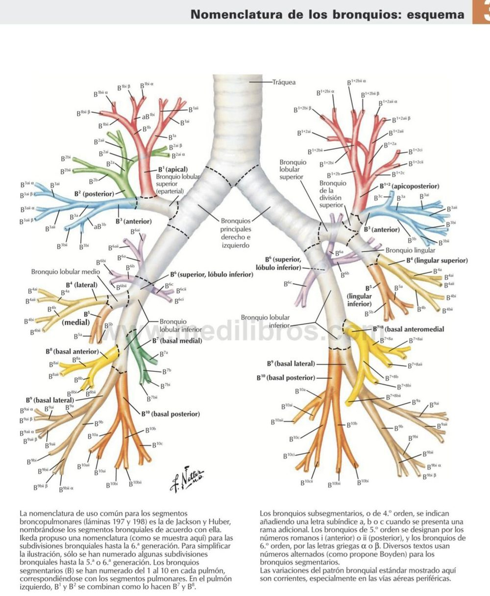
Del apunte "Vía aérea inferior" (lámina de Netter "Nomenclatura de los bronquios: esquema").El color es el código: cada bronquio segmentario tiene un color y ese mismo color va a pintar su segmento en las dos láminas siguientes. ① Del lado derecho (a tu izquierda) contá los lobares: superior (arriba, casi en la carina), medio (hacia adelante) e inferior. Contá sus ramas: 3 + 2 + 5 = 10. ② Del lado izquierdo, el lobar superior se abre en dos: hacia arriba el tronco del culmen y hacia abajo el de la língula. ③ Buscá en el izquierdo los rótulos que dicen "1 y 2" y "7 y 8": son las fusiones de las que habla la trampa de arriba. Fijate cuál es el primer segmentario que sale hacia atrás en cada lóbulo inferior: es el 6 (superior). Es el más declive cuando el paciente está acostado boca arriba.
Figura 17 Segmentos broncopulmonares: visiones anterior y posterior
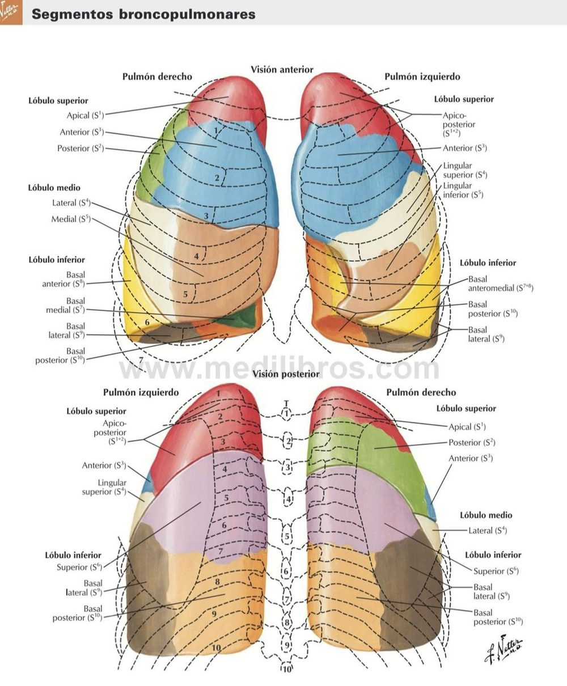
Del apunte "Vía aérea inferior" (lámina de Netter "Segmentos broncopulmonares"). Arriba, visión anterior; abajo, visión posterior.
① En la visión anterior del pulmón derecho, identificá la cuña del lóbulo medio y sus dos colores: lateral (4) y medial (5). ② En el izquierdo, la zona equivalente es la língula, también con dos colores: superior (4) e inferior (5). ③ Ahora pasá a la visión posterior: casi todo lo que ves son los lóbulos inferiores, con el segmento superior (6) arriba y los basales abajo. Comparación útil: los segmentos NO tienen fisuras entre ellos. Los límites de color que ves son convencionales; en el pulmón real se reconocen por las venas intersegmentarias.
Figura 18 Segmentos broncopulmonares: visiones laterales y mediales
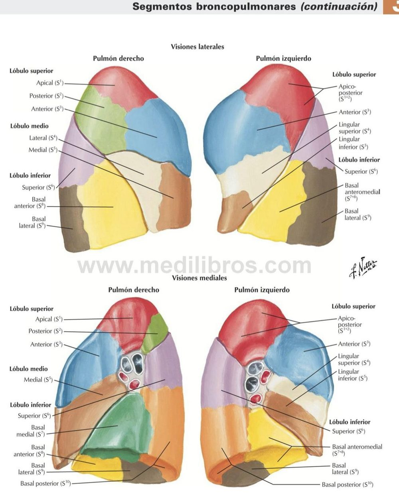
Del apunte "Vía aérea inferior" (lámina de Netter "Segmentos broncopulmonares, continuación"). Arriba, visiones laterales; abajo, visiones mediales.
① En las visiones mediales (abajo) el hilio queda en el centro: observá cómo todos los segmentos convergen hacia él como porciones de una torta. Esa es la forma piramidal del segmento, con el vértice en el hilio. ② Buscá el basal medial (7) en el pulmón derecho: solo se ve en la cara medial, apoyado sobre el diafragma junto al corazón. ③ En el izquierdo, el rótulo es "anteromedial basal (7 y 8)": la fusión. Ejercicio: tapá los rótulos y tratá de decir el nombre de cada color. Si podés hacerlo en las cuatro vistas, sabés segmentación.
Dónde cae la neumonía aspirativa. Lo aspirado va hacia los segmentos más declives según la posición: acostado boca arriba → segmento superior (6) de los lóbulos inferiores y posterior (2) del superior; de pie o sentado → basales de los lóbulos inferiores, sobre todo del derecho. En la radiografía, la silueta ayuda a ubicar la lesión: una opacidad que borra el borde derecho del corazón está en el lóbulo medio (que está adelante, apoyado sobre el corazón); una que borra el hemidiafragma está en un lóbulo inferior.
5. La PLEURA
"Membranas serosas que tapizan la cavidad pleural. La membrana pleural está formada por dos hojas: parietal → en contacto con la pared torácica; visceral → en contacto directo con el pulmón. Entre ambas hojas se forma la cavidad pleural (virtual)."
"Este líquido actúa como lubricante, facilitando su separación y el deslizamiento de los pulmones." Y el apunte de histología agrega lo esencial: "el espacio entre ambas hojas es virtual en condiciones fisiológicas y la presión dentro de ésta es subatmosférica, impidiendo que se despeguen, lo cual es imprescindible para que la inspiración se lleve a cabo adecuadamente".
Figura 19 Esquema de la pleura: dos hojas, una cavidad virtual y los recesos
Esquema propio (el apunte describe la pleura en texto pero no trae una figura de ella). Corte frontal de un hemitórax derecho.
① Seguí la línea rosa oscuro: es la pleura visceral, adherida al pulmón y metida en sus fisuras. ② Seguí la línea azul: es la pleura parietal, y fijate cómo cambia de nombre según lo que tapiza: costal sobre las costillas, diafragmática sobre el diafragma, mediastínica contra el mediastino, y arriba la cúpula. ③ En el hilio (punto violeta) las dos hojas se continúan: es la "muñeca" de la analogía del puño en el globo. ④ Abajo y afuera, donde la pleura costal dobla para volverse diafragmática, queda un rincón que el pulmón no llena en reposo: el receso costodiafragmático. La celeste entre las dos hojas está exagerada para que se vea: en la realidad es una película de líquido. Por eso se la llama cavidad virtual.
Las porciones de la pleura PARIETAL
Costal → "tapiza la cara interna de las costillas".
Diafragmática → "tapiza el dorso del diafragma".
Mediastínica → "se relaciona con los órganos del mediastino, sólo interrumpida por el hilio pulmonar".
Por debajo del hilio, la hoja mediastínica se continúa en un pliegue doble que baja hasta el diafragma: el ligamento pulmonar, donde está la estación ganglionar 9 del mapa IASLC.
Los RECESOS (senos) pleurales
Costodiafragmático → "entre pared costal y diafragma, llega hasta la 12.ª costilla".
Costomediastínico (costoesternal) → "anterior, entre costillas y esternón, llega hasta la 7.ª costilla".
Vertebromediastínico → "posterior, a lo largo de cuerpos vertebrales, hasta T12".
Frenicomediastínico → "hacia el mediastino, bajo el pericardio".
¿Para qué sirven los recesos, si el pulmón no los ocupa? Son el espacio de reserva para la inspiración profunda: cuando inspirás al máximo, el borde del pulmón se desliza hacia adentro del receso y lo ocupa. Por eso la pleura es "más grande" que el pulmón en reposo. Y por eso, cuando hay líquido de más en la cavidad, cae por gravedad al receso costodiafragmático, que es el punto más bajo: en la radiografía de pie, el primer signo de un derrame es que ese ángulo agudo se "borra" (obliteración del seno costofrénico).
Inervación: una hoja duele, la otra no
"Hoja parietal → sensible, inervada por: nervios intercostales; nervio frénico (cara diafragmática y mediastínica). Hoja visceral → insensible (no tiene inervación sensitiva propia)."
Consecuencia: el dolor pleurítico (puntada que aumenta con la inspiración y la tos) viene siempre de la parietal. Un tumor que crece dentro del pulmón no duele hasta que llega a la pared.
Histología (ya vista en la Semana 17)
Parietal:"mesotelio, submesotelio denso; más gruesa pero menos elástica que la pleura visceral y con células adiposas". Visceral:"mesotelio con ribete en cepillo, submesotelio" y dos láminas elásticas. Ambas son serosas: un mesotelio (epitelio plano simple) sobre tejido conectivo.
Lo que puede llenar la cavidad pleural — lista textual del apunte: "Aire (neumotórax). Sangre (hemotórax). Pus (piotórax/empiema). Otros líquidos (hidrotórax, quilotórax, etc.). Estos van a provocar un desplazamiento de las pleuras." El quilotórax es linfa rica en grasa: aparece cuando se lesiona el conducto torácico, que viste nacer en la cisterna del quilo junto al hiato aórtico. En todos los casos el mecanismo es el mismo: algo ocupa el espacio virtual, las hojas se separan, se pierde la presión subatmosférica y el pulmón se retrae por su propia elasticidad. La física de por qué pasa eso la ves en la pestaña de Mecánica.
Errata del apunte "Vía aérea inferior". Dice "Hay 10 cm² de líquido pleural para unir ambas hojas". Los cm² son una unidad de superficie; el volumen de líquido pleural se mide en mililitros y es de apenas unos 10 a 20 mL por lado: una película finísima. Y en el mismo apunte, la tráquea termina en "la carina traqueal (T4-T9)", pero unas líneas después dice "a la altura de T3-T4": la carina está a la altura de T4-T5 (el nivel del ángulo de Louis); "T9" es un error de tipeo.
¿Cómo vas con el árbol bronquial, la segmentación y la pleura?
🔒 Resolvé el mini-test de abajo para desbloquear el semáforo.
📝 Mini-test 2 — Segmentación y pleura
1. Un segmento broncopulmonar se define como:
Correcta: B.A es la definición de lóbulo: entre segmentos no hay fisuras. C invierte la lógica: las venas son intersegmentarias, marcan los límites. D describe una unidad mucho más chica (el acino, que viste en la Semana 17).
2. En la radiografía de un paciente de pie, el primer signo de un derrame pleural es la obliteración del:
Correcta: C. El líquido cae por gravedad al punto más bajo. Según el apunte, ese receso llega hasta la 12.ª costilla por atrás: por eso las punciones pleurales se hacen en la espalda, en la parte baja, sobre el borde superior de una costilla.
3. El dolor pleurítico (puntada que aumenta al inspirar) se origina en:
Correcta: A."Hoja parietal → sensible, inervada por nervios intercostales y nervio frénico. Hoja visceral → insensible."B y C son el error clásico: el pulmón y su pleura visceral no duelen. Por eso la irritación de la parietal diafragmática central (frénico) duele en el hombro, y la de la periférica (intercostales), en el abdomen.
Tocá cada tarjeta para ver la respuesta
Bronquio derecho vs izquierdotocá
El DERECHO es más corto, ancho y vertical: por eso ahí van los cuerpos extraños aspirados. El IZQUIERDO es más largo, fino y horizontal porque pasa bajo el cayado aórtico y le cede lugar al corazón.
Pulmones: medidas y pesotocá
Largo 25 cm, ancho 16 cm; base 10 cm el derecho y 7 cm el izquierdo. Peso: 600 g el derecho y 500 g el izquierdo. Rosado claro, flácido y elástico.
Lóbulos y fisurastocá
DERECHO: 3 lóbulos (superior, medio, inferior) y 2 fisuras (oblicua o mayor y horizontal o menor). IZQUIERDO: 2 lóbulos (superior con língula, e inferior) y solo la fisura oblicua.
Caras del pulmóntocá
COSTAL: lisa y convexa, explorable clínicamente. MEDIASTÍNICA: cóncava, con el hilio y las impresiones. DIAFRAGMÁTICA (base): cóncava, desciende más atrás que adelante.
Vértice pulmonartocá
Pertenece al lóbulo superior y sobrepasa el borde superior de la 2.ª costilla, proyectándose en la región supraclavicular. Por eso una punción subclavia puede causar neumotórax.
Língulatocá
Lengüeta del lóbulo superior izquierdo por debajo de la incisura cardíaca. Es el equivalente del lóbulo medio derecho y tiene dos segmentos: superior (4) e inferior (5).
Raíz o pedículo pulmonartocá
Conjunto de estructuras que entran o salen por el hilio (bronquio principal, arteria pulmonar, venas pulmonares, arterias y venas bronquiales, nervios, linfáticos y ganglios), envuelto por la pleura que se refleja alrededor.
Hilio: regla RALStocá
Right: arteria ANTERIOR al bronquio. Left: arteria SUPERIOR al bronquio. En ambos el bronquio está en el centro y las venas pulmonares son lo más inferior.
Impresiones de la cara mediastínicatocá
DERECHO: cardíaca, vena cava superior (arriba del hilio) y vena ácigos (detrás). IZQUIERDO: cardíaca (más grande), cayado aórtico (arriba del hilio) y aorta descendente (detrás).
Venas pulmonarestocá
Nacen de la red perialveolar, perilobulillar e intersegmentaria; forman 4 troncos (2 por pulmón), llevan sangre OXIGENADA y drenan en la aurícula IZQUIERDA.
Arterias pulmonares vs bronquialestocá
PULMONARES: funcionales, ramas del tronco pulmonar, llevan sangre pobre en O₂ para oxigenarse. BRONQUIALES: nutricias, ramas de la aorta, irrigan bronquios y pleura visceral.
Segmento broncopulmonartocá
Porción de un lóbulo ventilada por un bronquio segmentario, con su arteria en el centro y las venas intersegmentarias en los límites. Forma de pirámide con vértice en el hilio. Unidad anatómica y quirúrgica.
Acostado boca arriba: segmento superior (6) de los lóbulos inferiores y posterior (2) del superior. De pie: segmentos basales de los inferiores, sobre todo del derecho.
Hojas de la pleuratocá
VISCERAL: en contacto directo con el pulmón, insensible. PARIETAL: en contacto con la pared, sensible (intercostales y frénico). Entre ambas, la cavidad pleural virtual con una película de líquido lubricante.
Porciones de la pleura parietaltocá
COSTAL (cara interna de las costillas), DIAFRAGMÁTICA (dorso del diafragma) y MEDIASTÍNICA (órganos del mediastino, interrumpida solo por el hilio). Arriba, la cúpula pleural.
Recesos pleuralestocá
COSTODIAFRAGMÁTICO (hasta la 12.ª costilla), COSTOMEDIASTÍNICO o costoesternal (anterior, hasta la 7.ª costilla), VERTEBROMEDIASTÍNICO (posterior, hasta T12) y FRENICOMEDIASTÍNICO (bajo el pericardio).
Qué puede ocupar la cavidad pleuraltocá
Aire: neumotórax. Sangre: hemotórax. Pus: piotórax o empiema. Líquido seroso: hidrotórax. Linfa (quilo): quilotórax, por lesión del conducto torácico.
Ligamento pulmonartocá
Pliegue doble de pleura mediastínica que baja desde el hilio hasta el diafragma. Alberga los ganglios de la estación 9 del mapa IASLC.
Progreso — Mediastino y ganglios linfáticos0%
📋 Contenido del sílabo que cubre esta pestaña: Mediastino: División (ITMIG). Grupos de Ganglios Linfáticos de Mediastino (IASLC).
🚪 Desde cero: el mediastino es el "pasillo" del tórax, y se lo divide para saber QUÉ hay en cada tramo
Entre los dos sacos pleurales queda un espacio central donde está todo lo que no es pulmón: el corazón, los grandes vasos, la tráquea, el esófago, nervios, el timo y muchísimos ganglios. El apunte lo define así: "Es una cavidad dentro del tórax ubicada entre ambos pulmones; se lo denomina espacio virtual."
¿Para qué dividirlo en compartimentos? Por dos razones muy prácticas:
1. Para diagnosticar una MASA
Cuando una tomografía muestra una masa en el mediastino, lo primero que se pregunta es en qué compartimento está, porque cada uno tiene "sus" enfermedades. Una masa adelante no es lo mismo que una atrás: si sabés el compartimento, ya tenés la lista de sospechosos. Para eso sirve la clasificación ITMIG.
2. Para estadificar un CÁNCER
El cáncer de pulmón se disemina primero por los ganglios linfáticos. Saber cuáles ganglios están tomados cambia el pronóstico y el tratamiento. Para que todos los médicos hablen el mismo idioma, la IASLC numeró los grupos ganglionares del tórax con un mapa: estaciones 1 a 14.
Siglas:ITMIG = International Thymic Malignancy Interest Group (Grupo Internacional de Interés en Tumores del Timo). IASLC = International Association for the Study of Lung Cancer (Asociación Internacional para el Estudio del Cáncer de Pulmón). TC = tomografía computada.
1. Límites del mediastino y la división clásica del apunte
LÍMITES (apunte "Caja torácica")
Superior:"orificio torácico superior u opérculo torácico (límite entre cuello y tórax)".
Anterior: el esternón.
Posterior: la columna torácica.
Inferior: el diafragma.
Laterales: la cara mediastinal de los pulmones (con su pleura mediastínica).
Clasificación según MARTÍNEZ: 4 líneas, 9 celdas
Horizontal superior: por el borde superior del cayado aórtico.
Horizontal inferior: por el borde inferior de las venas pulmonares.
Vertical anterior: por delante del corazón y sus vasos.
Vertical posterior:detrás del borde posterior del esófago.
Quedan tres porciones (anterior, medio, posterior) × tres celdas (superior, media, inferior).
Mediastino ANTERIOR
Mediastino MEDIO
Mediastino POSTERIOR
Celda superior
Timo
Troncos venosos braquiocefálicos; tronco braquiocefálico, subclavia y carótida común izquierda; frénicos, vagos y laríngeo recurrente izquierdo; tráquea y esófago
Cadena simpática, médula torácica, ácigos y hemiácigos accesoria
Celda media
Grasa tímica
Cava superior y venas pulmonares; aorta y pulmonar; frénicos, vagos y recurrente izquierdo; fin de la tráquea, esófago y parte superior del corazón
Cava inferior; coronarias; frénicos y vagos; esófago y corazón
Cadena simpática, médula torácica, ácigos y hemiácigos; aorta descendente
Y la clasificación que el apunte llama "según JCC"
"Mantiene la línea horizontal superior, corre la línea vertical posterior más hacia atrás, borra el extremo superior de la línea vertical anterior y borra la línea horizontal inferior. Quedando así: un mediastino superior (engloba las tres celdas superiores), un mediastino anterior (todo contenido graso) y un mediastino medio (abarca la celda media e inferior del mediastino medio y posterior)."
Lo importante de esta descripción es la idea de fondo: las clasificaciones modernas simplifican. Dejan de dibujar muchas celdas y agrupan por lo que se ve en una tomografía. Ese es exactamente el camino que termina en ITMIG.
Errata importante del apunte: en la tabla del mediastino anterior dice "Timo: órgano linfoide secundario. Su función es la maduración de los linfocitos T". La segunda frase contradice la primera: el órgano donde MADURAN los linfocitos es por definición PRIMARIO. El timo es un órgano linfoide PRIMARIO — así lo pide tu propio sílabo ("Timo: como órgano linfoide primario") y así lo dicen los teóricos de histología. Lo vas a ver en detalle en la pestaña de Tejido linfoide y timo.
2. La división ITMIG: tres compartimentos definidos por la tomografía
📒 Nota de honestidad: el sílabo pide "Mediastino: División (ITMIG)". En el material de la cátedra que tengo no hay una descripción de la clasificación ITMIG: el apunte "Caja torácica" trae la de Martínez y la que llama "JCC", y el PDF "Linfáticos del mediastino" solo trata los ganglios. Esta sección se completó con la propuesta original del ITMIG (Carter y colaboradores, 2014, y su revisión en RadioGraphics 2017), apoyándose en lo que el apunte sí da: los límites del mediastino y el contenido de cada celda de Martínez. Está marcado para que sepas qué podés citar como "según el apunte" y qué no. Si tu cátedra tiene un teórico o una diapositiva de ITMIG, pasámelo y lo ajusto a su terminología.
La clasificación ITMIG se diseñó para la tomografía: sus límites son estructuras que se ven en un corte axial, y divide el mediastino en tres compartimentos que van de arriba abajo, desde el opérculo torácico hasta el diafragma (no hay "mediastino superior" aparte).
PREVASCULAR (anterior)
Límites: adelante el esternón; atrás, la cara anterior del pericardio y de los grandes vasos. Contiene:timo, grasa, ganglios, la vena braquiocefálica izquierda y los vasos torácicos internos.
VISCERAL (medio)
Límites: adelante, el pericardio (su borde posterior con el prevascular); atrás, una línea trazada 1 cm por detrás del borde anterior de los cuerpos vertebrales. Contiene:corazón y pericardio, aorta y grandes vasos, cava superior, arteria y venas pulmonares, tráquea, carina, esófago, conducto torácico y la mayoría de los ganglios.
PARAVERTEBRAL (posterior)
Límites: por detrás de esa línea vertebral, hasta la pared torácica posterior (apófisis transversas). Contiene: la columna torácica y los tejidos blandos paravertebrales: cadena simpática, nervios intercostales en su origen, ganglios y vasos paravertebrales.
Figura 20 Los tres compartimentos ITMIG en un corte axial
Esquema propio basado en la definición ITMIG (no hay figura de ITMIG en el material de la cátedra).
Leé de adelante hacia atrás, de arriba hacia abajo en el dibujo: ① Detrás del esternón, una franja amarilla: el prevascular. Termina donde empieza el pericardio. ② El gran bloque rosa: el visceral, con todo lo que "funciona" en el mediastino — a esta altura, corazón, aorta y esófago (la tráquea ya se bifurcó más arriba, pero también es visceral). ③ La línea punteada negra es el límite clave: está trazada 1 cm por detrás del borde anterior de la vértebra. Todo lo que queda detrás, en verde, es paravertebral. Fijate un detalle que sorprende: según ITMIG, el esófago y la aorta descendente son VISCERALES, no posteriores. En la clasificación de Martínez del apunte, la aorta descendente estaba en el mediastino posterior. Cambió el criterio: ITMIG manda al paravertebral solo lo que está junto a la columna.
El compartimento predice la enfermedad. En el prevascular están las masas de las "4 T": Timoma, Teratoma (tumores germinales), Tiroides endotorácica y "Terrible" linfoma. En el visceral, lo más frecuente son las adenopatías (ganglios agrandados por cáncer de pulmón, linfoma, sarcoidosis, tuberculosis) y los quistes de origen bronquial o esofágico. En el paravertebral, los tumores neurogénicos (schwannoma, neurofibroma) que nacen de los nervios y de la cadena simpática. Una miastenia gravis con una masa prevascular es un timoma hasta que se demuestre lo contrario.
¿Cómo vas con los límites del mediastino y sus divisiones (Martínez e ITMIG)?
🔒 Resolvé el mini-test de abajo para desbloquear el semáforo.
📝 Mini-test 1 — Límites y divisiones del mediastino
1. El límite INFERIOR del mediastino es:
Correcta: D.A y C son las líneas horizontales de Martínez que dividen el mediastino por dentro, no sus límites. B se usa en la división clásica en superior e inferior, pero tampoco es un límite del mediastino. Límites: opérculo torácico arriba, esternón adelante, columna atrás, diafragma abajo, pulmones a los lados.
2. En la clasificación ITMIG, el límite entre el compartimento VISCERAL y el PARAVERTEBRAL es:
Correcta: A.B es la línea vertical posterior de Martínez. C separa el prevascular del visceral. Por eso en ITMIG el esófago y la aorta descendente quedan en el visceral.
3. Un paciente con miastenia gravis tiene una masa detrás del esternón, por delante del pericardio. ¿En qué compartimento está y qué sospechás?
Correcta: B. El timo vive en el compartimento prevascular (y en la celda superior del mediastino anterior de Martínez), y la asociación miastenia + masa tímica es clásica. D es falsa: lo que está entre el esternón y el pericardio es mediastino.
3. El ganglio normal y la adenopatía en la tomografía
Qué es un ganglio (PDF "Linfáticos del mediastino")
"Un ganglio linfático es un elemento del sistema linfático encargado de filtrar las sustancias consideradas extrañas o potencialmente peligrosas para nuestro organismo. Está compuesto por una parte externa (la corteza) y otra interna (la médula), que está conectada con la superficie mediante el hilio. La corteza está rodeada periféricamente además por una cápsula fibrosa."
Criterios de NORMALIDAD en la TC
"Son ovalados."
"Tienen una cortical fina."
"Presentan un hilio hipodenso." (graso, más oscuro)
"Su eje corto es inferior a 1 cm, excepto para los subcarinales, que pueden medir hasta 1,5 cm y ser normales."
"Todos aquellos ganglios que no tengan estas características serán considerados adenopatías (patológicos)."
Figura 21 Un ganglio mediastínico NORMAL en la tomografía
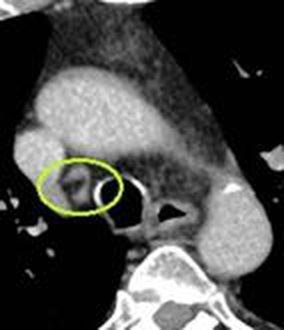
Del PDF "Linfáticos del mediastino" (Fig. 1)."Ganglio paratraqueal derecho bajo (círculo verde) normal: ovalado, de eje corto inferior a 1 cm e hilio hipodenso." La imagen original es chica y de baja resolución.
Buscá el círculo verde. Adentro hay una estructura ovalada; fijate que su centro es más oscuro que el borde: ese centro oscuro es el hilio graso, y es un signo tranquilizador. Lo que la haría sospechosa: que fuera redonda, que perdiera el hilio graso, que su eje corto superara 1 cm o que tuviera un centro necrótico. La sensibilidad de la TC para detectar ganglios enfermos es del 60-80 % y su especificidad del 85 %, según el mismo PDF: por eso las dudas se resuelven con PET-TC o con biopsia.
4. Los grupos ganglionares del mediastino según la IASLC
La IASLC "ha definido los límites de cada grupo" con referencias anatómicas que se ven en una TC. Los grupos se numeran de arriba abajo y de adentro hacia afuera: primero los del mediastino (1 a 9), después los del hilio y el pulmón (10 a 14).
Estación
Nombre
Límites clave (PDF "Linfáticos del mediastino")
1R / 1L
Supraclaviculares (y de la hendidura esternal, cervicales bajos)
Del borde inferior del cricoides a las clavículas y el borde superior del manubrio. Derecha/izquierda: línea media de la tráquea.
2R / 2L
Paratraqueales altos
Desde el ápex pulmonar y el borde superior del manubrio. 2R termina donde la vena innominada (braquiocefálica izquierda) cruza la tráquea; 2L, en el borde superior del arco aórtico.
3A
Prevasculares
Del ápex torácico a la carina; por delante de la vena cava superior (derecha) o de la carótida izquierda.
3P
Retrotraqueales
Detrás de la tráquea, del ápex a la carina.
4R / 4L
Paratraqueales bajos
4R: de la vena innominada al borde inferior de la vena ácigos. 4L: del borde superior del arco aórtico al borde superior de la arteria pulmonar.
5
Subaórticos (ventana aortopulmonar)
Laterales al ligamento arterioso, entre el arco aórtico y la arteria pulmonar izquierda.
6
Paraaórticos
Anteriores y laterales a la aorta ascendente y al arco.
7
Subcarinales
Debajo de la carina. "No existe distinción entre izquierda y derecha."
8
Paraesofágicos
Adyacentes a la pared del esófago, por debajo de los subcarinales, hasta el diafragma.
9
Del ligamento pulmonar
Dentro del ligamento pulmonar, de la vena pulmonar inferior al diafragma.
10
Hiliares
Junto a los bronquios principales y vasos hiliares.
11
Interlobares
Entre los orígenes de los bronquios lobares (11Rs y 11Ri a la derecha).
12 · 13 · 14
Lobares · Segmentarios · Subsegmentarios
Adyacentes a los bronquios de cada orden: son los periféricos (intrapulmonares).
La regla de izquierda/derecha tiene una excepción
En general, lo que separa un ganglio "R" de uno "L" es la línea media de la tráquea. Pero en los paratraqueales (grupos 2 y 4) el límite es la PARED TRAQUEAL IZQUIERDA: "La pared traqueal izquierda (y no la línea media) sirve como límite entre la izquierda y la derecha en este grupo ganglionar." Consecuencia: un ganglio que está delante de la tráquea, en el centro, se considera derecho (2R o 4R). ¿Por qué? Porque el drenaje linfático del mediastino tiende hacia la derecha. Y la otra excepción: el 7 (subcarinal) no tiene lado.
Figura 22 El mapa ganglionar torácico de la IASLC
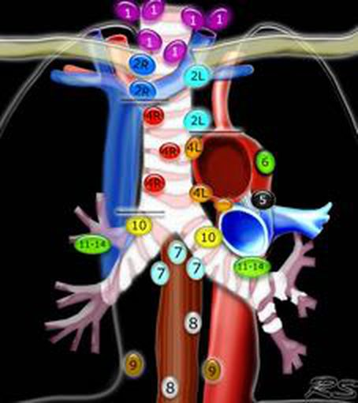
Del PDF "Linfáticos del mediastino" (Fig. 2, "Mapa ganglionar torácico"). La imagen del PDF original es chica; está ampliada.
Empezá arriba: los círculos violeta 1 están a la altura de las clavículas. Bajá por los costados de la tráquea: 2R/2L y más abajo 4R/4L. ① Fijate que los "R" y los "L" no están simétricos respecto del centro de la tráquea: están corridos hacia la izquierda. Es la regla de la pared traqueal izquierda. ② Junto a la aorta (roja), del lado izquierdo del paciente (a tu derecha), los 5 y 6: la ventana aortopulmonar. ③ Debajo de la carina, los 7; siguiendo el esófago hacia abajo, los 8; y al final, los 9 del ligamento pulmonar. ④ Hacia los costados, junto a los bronquios, los 10 (hiliares) y los 11-14 hacia la periferia del pulmón.
Figura 23 Prevasculares (3A) y retrotraqueales (3P) en una reconstrucción 3D
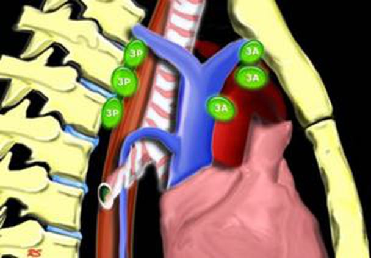
Del PDF "Linfáticos del mediastino" (Fig. 8). Vista de perfil: la columna queda a la izquierda de la imagen y el esternón a la derecha.
Buscá los círculos verdes rotulados 3A: están por delante de los grandes vasos (la vena cava en azul). Ahora los 3P: están por detrás de la tráquea, pegados a la columna. La "A" y la "P" significan anterior y posterior. Los 3A están en el compartimento prevascular de ITMIG; los 3P, en el visceral.
Figura 24 La ventana aortopulmonar: ganglios 5 y 6
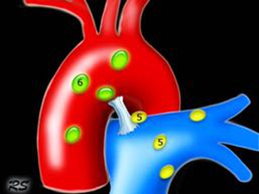
Del PDF "Linfáticos del mediastino" (Fig. 13).El arco rojo es la aorta; el tubo azul de abajo, la arteria pulmonar. El espacio entre los dos es la ventana aortopulmonar. ① Los amarillos 5 están dentro de la ventana, al costado del ligamento arterioso: son los subaórticos. ② Los verdes 6 están sobre la cara anterolateral de la aorta: son los paraaórticos. Por esa ventana también pasa el nervio laríngeo recurrente izquierdo (lo viste engancharse en el arco en la lámina del mediastino izquierdo). Un ganglio tumoral en la estación 5 puede comprimirlo: el paciente consulta por disfonía, y la causa está en el tórax.
Figura 25 Un ganglio subcarinal (7) en la tomografía
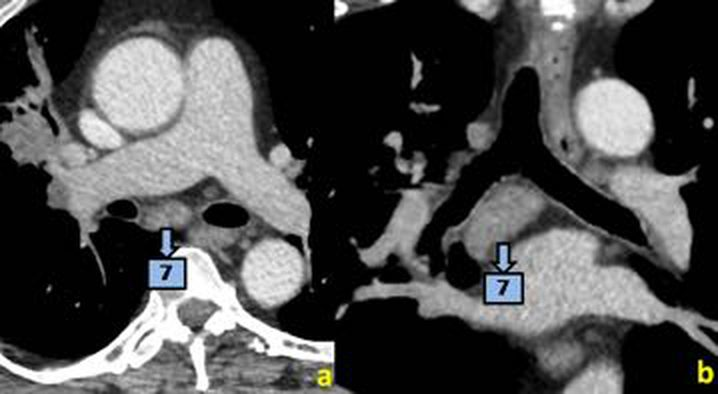
Del PDF "Linfáticos del mediastino" (Fig. 16). a: corte axial; b: reconstrucción coronal.
En la coronal (derecha) ubicá la tráquea como una columna negra (aire) que se abre en dos: la carina. El ganglio marcado con el 7 está justo debajo de la horqueta. Por su posición central recibe linfa de los dos pulmones: es la gran "estación de trasbordo" del tórax. Por eso cualquier subcarinal tomado es N2, venga el tumor de donde venga.
Figura 26 El ligamento pulmonar y la estación 9
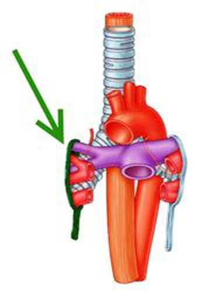
Del PDF "Linfáticos del mediastino" (Fig. 18):"Ligamento pulmonar derecho (líneas y flecha verdes) rodeando el hilio derecho: venas pulmonares derechas (en rojo) y arterias pulmonares (en lila)."Seguí la flecha verde hasta el borde verde que envuelve el hilio y se prolonga hacia abajo como una cola. Esa cola es el ligamento pulmonar: "la extensión inferior de la reflexión pleural mediastínica que rodea el hilio". Conecta con la pestaña anterior: es el mismo pliegue de pleura que viste debajo del hilio en la lámina de las caras mediales del pulmón. Adentro están los ganglios de la estación 9, que van de la vena pulmonar inferior al diafragma.
El apunte de anatomía numera los ganglios distinto que la IASLC
El apunte "Caja torácica" también trae 14 grupos, pero con otros criterios: llama "1. mediastinales altos" a los que están "sobre el tronco venoso braquiocefálico izquierdo" y "2. mediastinales superiores" a los "que están sobre el cayado de la arteria aorta", y dice que el "mediastino medio tiene 10 grupos". En la IASLC, en cambio, el 1 es supraclavicular (llega al cuello) y el 2 es paratraqueal alto.
Estrategia segura: como el sílabo pide explícitamente "Grupos de Ganglios Linfáticos de Mediastino (IASLC)", usá la numeración IASLC de la tabla de arriba, que es la del PDF "Linfáticos del mediastino". Los grupos 3 a 14 coinciden en nombre entre las dos fuentes; la diferencia está en el 1 y el 2.
🔀 Ordená el recorrido de la linfa del pulmón DERECHO, desde el parénquima hasta la sangre
Arrastrá para ordenar del 1 al 6, según el PDF "Linfáticos del mediastino".
⬆️ Paratraqueales derechos BAJOS (4R)
🫁 Ganglios intrapulmonares (12-14): la primera parada
🩸 Vena braquiocefálica derecha, a través del tronco broncomediastínico
🔱 Subcarinales (7)
🚪 Hiliares ipsilaterales (10)
⬆️ Paratraqueales derechos ALTOS (2R)
5. El drenaje linfático pulmonar y la "N" del cáncer de pulmón
⚙️ Por dónde viaja la linfa de cada pulmón (PDF "Linfáticos del mediastino")
Pulmón DERECHO:"primera parada en los ganglios intrapulmonares, y posteriormente y en este orden, drena en los ganglios hiliares ipsilaterales, subcarinales, paratraqueales derechos bajos y paratraqueales derechos altos, para drenar finalmente en la vena braquiocefálica derecha."
Lóbulo SUPERIOR izquierdo: pulmonares → hiliares ipsilaterales → subcarinales → paratraqueales ipsilaterales o paraaórticos → "finalmente, drenar en el tronco braquiocefálico del mismo lado mediante el tronco braquiocefálico izquierdo y el conducto torácico."
Lóbulo INFERIOR izquierdo: pulmonares → hiliares ipsilaterales → subcarinales → paratraqueales derechos altos → "desembocar en la vena braquiocefálica derecha."¡Cruza al otro lado!
El lóbulo inferior izquierdo drena a través de los subcarinales, que son centrales, y desde ahí la corriente sigue hacia la derecha, que es hacia donde va la mayor parte de la linfa del mediastino. El PDF explica la consecuencia: "las metástasis linfáticas de un cáncer en el lóbulo pulmonar inferior izquierdo pueden ocurrir en los ganglios paratraqueales derechos altos sin afectación previa de los paratraqueales ipsilaterales, lo cual implicaría un peor pronóstico... (estadío N3)." Y agrega una advertencia honesta: "las 'skip metástasis' (aquellas que ocurren en los ganglios linfáticos sin seguir un orden) suelen ocurrir frecuentemente". El mapa predice, pero no garantiza.
Figura 27 El drenaje linfático de los pulmones
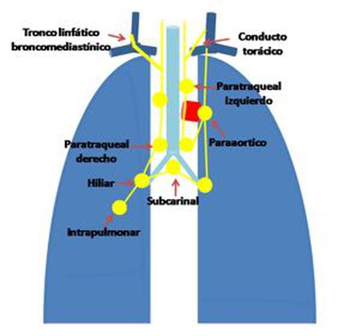
Del PDF "Linfáticos del mediastino" (Fig. 29, "Drenaje linfático pulmonar").Seguí los puntos amarillos de afuera hacia adentro: intrapulmonar → hiliar → subcarinal (el del centro, bajo la horqueta). ① Desde el subcarinal, las flechas suben por la derecha de la tráquea: paratraqueal derecho → tronco linfático broncomediastínico (arriba a la izquierda de la imagen). ② A la derecha de la imagen (lado izquierdo del paciente, como en una radiografía), el paratraqueal izquierdo y el paraaórtico, que llevan al conducto torácico. Mirá cuántas flechas convergen en el subcarinal: es la encrucijada. Por eso su sola afectación ya es N2.
Categoría N
Qué ganglios están tomados (PDF)
En criollo
N0
"No hay metástasis ganglionares."
El tumor no salió del pulmón por vía linfática.
N1
"Metástasis en los ganglios hiliares, peribronquiales o pulmonares ipsilaterales." (estaciones 10-14 del mismo lado)
Tomado, pero todavía dentro del pulmón o su hilio.
N2
"Metástasis ganglionares mediastínicas ipsilaterales o subcarinales."
Llegó al mediastino de su mismo lado o al subcarinal.
N3
"Metástasis ganglionares mediastínicas, hiliares o pulmonares contralaterales, o extratorácicas (supraclaviculares...)."
Cruzó al otro lado o salió del tórax: en general, ya no es quirúrgico.
Figura 28 Los límites entre N1, N2 y N3
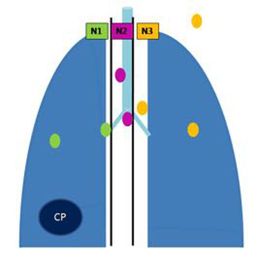
Del PDF "Linfáticos del mediastino" (Fig. 30):"CP: cáncer de pulmón. Nódulos verdes: metástasis linfáticas peribronquiales e hiliares ipsilaterales. Nódulos rosas: metástasis en ganglios mediastínicos o subcarinales. Nódulos naranjas: metástasis linfáticas hiliares y pulmonares contralaterales y extratorácicas."Ubicá el tumor (CP) abajo en el pulmón derecho del paciente (a tu izquierda, como en una radiografía). Ahora leé las tres franjas de arriba como un semáforo que se aleja del tumor: ①Verde (N1): nódulos en el mismo pulmón y su hilio. ②Rosa (N2): en el mediastino, del mismo lado, y en el centro (subcarinal). ③Naranja (N3): en el pulmón contrario o por encima de la clavícula. Fijate que la franja N2 está corrida hacia el lado del tumor pero "toca" la línea media: el subcarinal, que es central, es N2 para cualquier tumor.
Por qué esto cambia la vida del paciente. Un cáncer de pulmón no microcítico N0 o N1 suele operarse; uno N2 generalmente requiere tratamiento combinado (quimioterapia, radioterapia y a veces cirugía); uno N3, en general, ya no es quirúrgico. Por eso antes de operar se biopsian los ganglios del mediastino (por mediastinoscopia o con ecografía endobronquial, que pincha a través de la pared de la tráquea las estaciones 2, 4, 7 y 10). Y el PDF menciona otros ganglios torácicos que, si están tomados, cuentan como metástasis a distancia (M1b): cardiofrénicos, mamarios internos, intercostales y paravertebrales.
Todo lo que se dice acá del ganglio —corteza, médula, hilio, cápsula, filtración— es la histología que vas a ver en la pestaña de Ganglio, bazo y MALT: la TC "ve" un ganglio normal por su hilio graso porque ahí está la médula con los senos medulares y la grasa del hilio. Y el conducto torácico que recibe la linfa del lóbulo superior izquierdo nace en la cisterna del quilo, que atraviesa el diafragma por el hiato aórtico.
¿Cómo vas con las estaciones ganglionares IASLC, el drenaje linfático y la N?
🔒 Resolvé el mini-test de abajo para desbloquear el semáforo.
📝 Mini-test 2 — Ganglios IASLC y estadificación N
1. Un ganglio ubicado por delante de la tráquea, justo en la línea media, a la altura de la estación 4, se clasifica como:
Correcta: C."La pared traqueal izquierda (y no la línea media) sirve como límite entre la izquierda y la derecha en este grupo ganglionar."B confunde: el 7 es debajo de la carina, no delante de la tráquea. D es detrás de la tráquea.
2. Un paciente tiene un cáncer en el pulmón derecho con un ganglio subcarinal tomado y nada más. Su categoría N es:
Correcta: A."No existe distinción entre la izquierda y la derecha en este grupo ganglionar, y todos los ganglios subcarinales patológicos... son considerados como N2."D mezcla dos cosas: el criterio de tamaño (hasta 1,5 cm puede ser normal) sirve para sospechar, pero si está tomado, es N2.
3. ¿Por qué un cáncer del lóbulo INFERIOR IZQUIERDO puede dar metástasis en los paratraqueales derechos altos sin tocar los izquierdos?
Correcta: B. Es lo que describe el PDF, y por eso esos tumores pueden llegar a N3 "de un salto", con peor pronóstico. C describe el drenaje del lóbulo superior izquierdo. D inventa una conexión: el ligamento pulmonar es un pliegue de pleura de un solo lado.
Tocá cada tarjeta para ver la respuesta
Qué es el mediastinotocá
Espacio central del tórax, entre los dos pulmones (espacio virtual). Límites: opérculo torácico arriba, esternón adelante, columna torácica atrás, diafragma abajo y caras mediastínicas de los pulmones a los lados.
Clasificación de Martíneztocá
Cuatro líneas: horizontal superior (borde superior del cayado), horizontal inferior (borde inferior de las venas pulmonares), vertical anterior (delante del corazón) y vertical posterior (detrás del esófago). Nueve celdas: anterior, medio y posterior × superior, media e inferior.
Cadena simpática, médula torácica, sistema ácigos (ácigos, hemiácigos y hemiácigos accesoria) y, en las celdas media e inferior, la aorta descendente.
ITMIG: los tres compartimentostocá
PREVASCULAR (del esternón al pericardio: timo, grasa, ganglios, vena braquiocefálica izquierda), VISCERAL (corazón, grandes vasos, tráquea, esófago, conducto torácico, ganglios) y PARAVERTEBRAL (columna, cadena simpática, tejidos paravertebrales).
ITMIG: límite visceral-paravertebraltocá
Una línea trazada 1 cm por detrás del borde anterior de los cuerpos vertebrales. Por eso el esófago y la aorta descendente son viscerales.
Las 4 T del prevasculartocá
Timoma, teratoma (tumores germinales), tiroides endotorácica y "terrible" linfoma. En el visceral predominan las adenopatías; en el paravertebral, los tumores neurogénicos.
Ganglio normal en TCtocá
Ovalado, con cortical fina, hilio hipodenso y eje corto menor de 1 cm (los subcarinales pueden medir hasta 1,5 cm y ser normales). Si no cumple, es adenopatía.
Estaciones 1 y 2tocá
1R/1L: supraclaviculares, del cricoides a las clavículas. 2R/2L: paratraqueales altos; 2R termina donde la vena innominada cruza la tráquea y 2L en el borde superior del arco aórtico.
Estación 3A y 3Ptocá
3A: prevasculares, por delante de la vena cava superior o de la carótida izquierda. 3P: retrotraqueales, detrás de la tráquea. Ambas del ápex torácico a la carina.
Estación 4tocá
Paratraqueales bajos. 4R: de la vena innominada al borde inferior de la vena ácigos. 4L: del borde superior del arco aórtico al borde superior de la arteria pulmonar.
Estaciones 5 y 6tocá
Ventana aortopulmonar. 5: subaórticos, laterales al ligamento arterioso, entre el arco y la pulmonar izquierda. 6: paraaórticos, anteriores y laterales a la aorta.
Estación 7tocá
Subcarinales: debajo de la carina. No tienen lado: todo subcarinal patológico es N2. Pueden medir hasta 1,5 cm siendo normales.
Estaciones 8 y 9tocá
8: paraesofágicos, junto al esófago por debajo de los subcarinales, hasta el diafragma. 9: del ligamento pulmonar, de la vena pulmonar inferior al diafragma.
Estaciones 10 a 14tocá
10: hiliares. 11: interlobares (11Rs y 11Ri a la derecha). 12: lobares. 13: segmentarios. 14: subsegmentarios. Tomados del mismo lado son N1.
Regla de izquierda y derechatocá
En general, la línea media de la tráquea. Excepción: en los paratraqueales 2 y 4 el límite es la PARED TRAQUEAL IZQUIERDA, así que un ganglio pretraqueal central es derecho. El 7 no tiene lado.
Lóbulo SUPERIOR: hacia paratraqueales izquierdos o paraaórticos y el conducto torácico. Lóbulo INFERIOR: por los subcarinales hacia los paratraqueales DERECHOS altos y la braquiocefálica derecha (puede saltar a N3).
N0, N1, N2 y N3tocá
N0: sin ganglios. N1: hiliares, peribronquiales o pulmonares ipsilaterales. N2: mediastínicos ipsilaterales o subcarinales. N3: contralaterales o extratorácicos (supraclaviculares).
Errata del timo en el apuntetocá
La tabla del mediastino dice "timo: órgano linfoide secundario" pero enseguida dice que madura linfocitos T. Es órgano linfoide PRIMARIO, como pide el sílabo.
Progreso — Respiración y mecánica ventilatoria0%
📋 Contenido del sílabo que cubre esta pestaña: Respiración: definición. Anatomía funcional del aparato respiratorio: a) sistema de conducción; b) aparato de difusión; c) mecanismo para renovar el aire. Mecánica respiratoria. Papel de las pleuras. Agente tensioactivo.
🚪 Desde cero: el aire entra solo, pero solo si le "bajás" la presión adentro
Toda la mecánica respiratoria sale de una ley de física de la secundaria y de una sola regla de los gases:
Los gases van de donde hay MÁS presión a donde hay MENOS
Y la ley de Boyle: a temperatura constante, si un recipiente con gas se agranda, la presión adentro baja; si se achica, sube (P × V = constante).
Juntá las dos y tenés la respiración: los músculos agrandan el tórax → el pulmón, pegado a la pared por la pleura, se agranda con él → la presión dentro de los alvéolos cae por debajo de la atmosférica → el aire entra solo. Cuando los músculos se relajan, todo vuelve a su lugar, la presión alveolar sube por encima de la atmosférica y el aire sale solo. El teórico lo dice así: "Ciclo = inspiración (activa) + espiración (pasiva)".
Cuatro presiones que vas a leer todo el tiempo (se expresan como diferencia respecto de la atmosférica, que se toma como 0):
Presión atmosférica: 760 mmHg a nivel del mar. Es el "cero" de referencia.
Presión alveolar: la del aire dentro de los alvéolos. Es la que decide si el aire entra (negativa) o sale (positiva).
Presión intrapleural: la del líquido entre las dos hojas de la pleura. Siempre negativa en la respiración normal.
Presión transpulmonar (transmural): alveolar menos intrapleural. Es la que mantiene inflado al pulmón.
1. La respiración: definición y funciones
Definición (Guía de Espirometría del TP)
"La respiración provee el O₂ que necesitan las células que integran el organismo vivo y elimina el CO₂ producido por las oxidaciones. Para lograrlo son necesarios:"
"la ventilación pulmonar, que permite la renovación del aire sobre las superficies respiratorias propiamente dichas;"
"la hematosis (respiración externa), la cual tiene lugar sobre la membrana de difusión alveolocapilar;"
"el transporte de gases respiratorios a cargo de la sangre y el aparato circulatorio;"
"el intercambio de O₂ y CO₂ entre la sangre y la célula (respiración interna);"
Funciones del aparato respiratorio (teórico Parte 1)
Intercambio de gases entre la atmósfera y la sangre.
Regulación homeostática del pH corporal (eliminando más o menos CO₂).
Protección de los patógenos inhalados y las sustancias irritantes.
Vocalización.
Y el teórico divide la respiración en 1. Externa (a: atmósfera ↔ pulmones; b: pulmones ↔ sangre; c: transporte en sangre; d: sangre ↔ células) y 2. Respiración celular (consumo de O₂ y producción de CO₂ y ATP).
"Respiración" no es "ventilación". La ventilación es solo mover aire hacia adentro y afuera (el primer paso). La respiración es todo el proceso, hasta la mitocondria. Una persona puede ventilar perfectamente y aun así tener hipoxia tisular si falla un paso posterior: por ejemplo, en la intoxicación por monóxido de carbono falla el transporte (paso c), y en la intoxicación por cianuro falla la respiración celular.
Figura 29 La respiración externa en tres intercambios
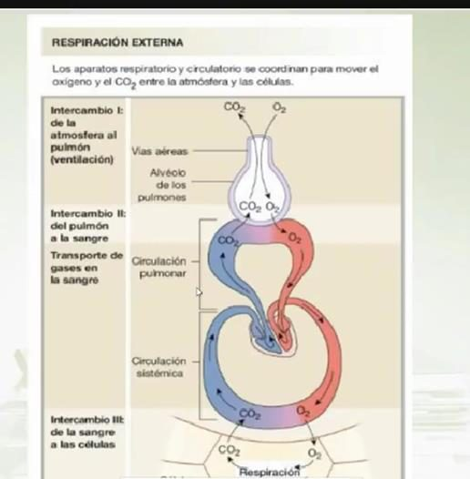
Del teórico "Fisiología Respiratoria Parte 1" (Dra. Peral).Leé el esquema de arriba abajo, siguiendo el O₂: ①Intercambio I (arriba): de la atmósfera a los alvéolos por las vías aéreas. Es la ventilación. ②Intercambio II: del alvéolo a la sangre del capilar pulmonar. Es la hematosis. ③ El tramo del medio es el transporte por la circulación: el lado rojo lleva sangre oxigenada, el azul la desoxigenada. ④Intercambio III (abajo): de la sangre a las células, donde ocurre la respiración celular. Y seguí el CO₂: hace exactamente el camino inverso. Cada uno de estos pasos es una pestaña de esta guía: esta, la de espirometría, la de transporte y la de V/Q.
Una cuenta que pide el teórico: la presión parcial del O₂
El teórico plantea: "El aire es una mezcla de gases. La presión de un gas individual se conoce como presión parcial del gas. Ej.: la presión parcial de O₂ es el 21 % y la presión atmosférica a nivel del mar es de 760 mmHg. ¿Cuál es la presión parcial de O₂?"
Respuesta: 760 × 0,21 = ≈ 159-160 mmHg (ley de Dalton: cada gas aporta a la presión total en proporción a su fracción). Guardá este número: en la pestaña de gases vas a ver cómo cae a unos 104 mmHg en el alvéolo y por qué.
2. Anatomía funcional: conducción, difusión y el mecanismo para renovar el aire
a) SISTEMA DE CONDUCCIÓN
Desde la nariz y la boca hasta los bronquiolos terminales. No intercambia gases: lleva el aire, lo calienta, lo humedece y lo filtra. Su volumen es el espacio muerto anatómico (unos 150 mL).
b) APARATO DE DIFUSIÓN
Desde los bronquiolos respiratorios hasta los alvéolos. Es la superficie de intercambio: una membrana finísima y enorme donde el aire queda a menos de una micra de la sangre.
c) MECANISMO PARA RENOVAR EL AIRE
La caja torácica, los músculos respiratorios (diafragma, intercostales, accesorios), la pleura que acopla el pulmón a la pared y los centros nerviosos que dan la orden. Es el fuelle de la pestaña de Pared torácica.
Figura 30 Vías de conducción y de intercambio
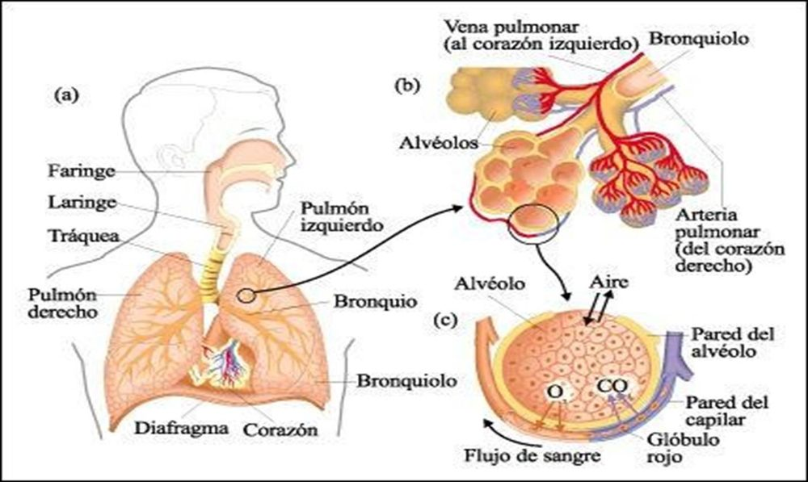
Del teórico "Fisiología Respiratoria Parte 1".Tres escalas, de izquierda a derecha y de la más grande a la más chica: (a) El aparato completo: faringe, laringe, tráquea, bronquios. Todo eso conduce. (b) Un racimo de alvéolos al final de un bronquiolo, envuelto por la red de capilares: fijate que llega una arteria pulmonar (desde el corazón derecho) y sale una vena pulmonar (al corazón izquierdo). (c) Un solo alvéolo con su capilar: el O₂ pasa del aire al glóbulo rojo y el CO₂ al revés, a través de la pared del alvéolo + la pared del capilar. La idea: el aire recorre un árbol larguísimo que no sirve para intercambiar hasta llegar a (c). Por eso respirar más rápido y superficial "gasta" ventilación en el tramo muerto.
Figura 31 Ramificaciones de las vías aéreas: 24 generaciones
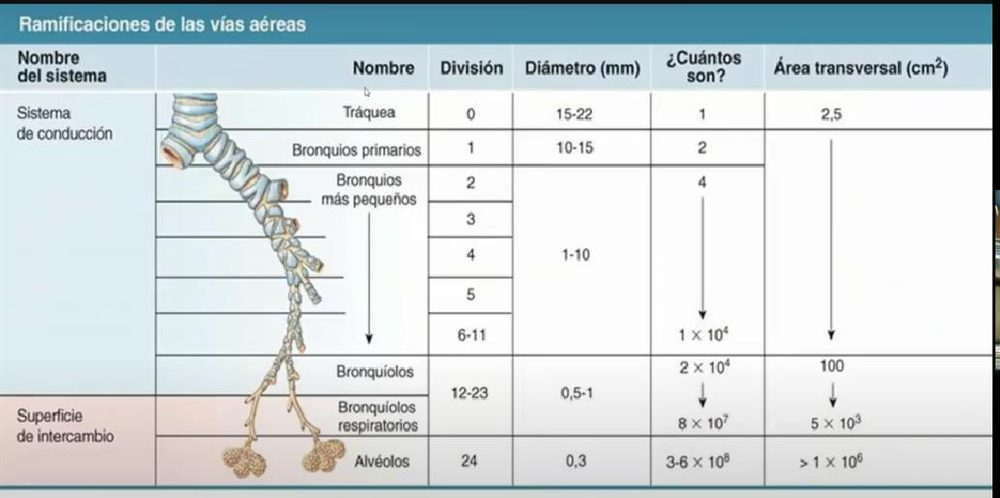
Del teórico "Fisiología Respiratoria Parte 1".Leé la tabla por columnas, bajando: ①División: de la tráquea (0) a los alvéolos (24). Cada generación se divide en dos. ②Diámetro: cada tubo es más fino — de 15-22 mm en la tráquea a 0,3 mm en el alvéolo. ③¿Cuántos son?: de 1 tráquea a 300-600 millones de alvéolos. ④Área transversal: acá está la sorpresa. Aunque cada tubo es más fino, la suma de todas las secciones pasa de 2,5 cm² a más de 1.000.000 cm² (unos 100 m²). Es la misma ley de la sección que viste en hemodinamia (Semana 17): el área total crece tanto que el aire casi se detiene al llegar a los alvéolos, y desde ahí avanza solo por difusión. Por eso la columna izquierda separa "sistema de conducción" (rápido, por flujo) de "superficie de intercambio" (lenta, por difusión).
Figura 32 Los bronquios y los alvéolos: del árbol al lobulillo
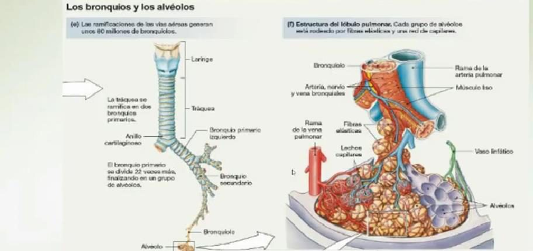
Del teórico "Fisiología Respiratoria Parte 1". (a) Las ramificaciones de las vías aéreas; (f) la estructura del lóbulo pulmonar.
En el dibujo de la derecha, seguí el bronquiolo hasta el racimo de alvéolos y buscá tres cosas: ① El músculo liso que rodea al bronquiolo: es lo que se contrae en el asma. ② Las fibras elásticas entre los alvéolos: son las que hacen que el pulmón tienda a retraerse (clave para la presión pleural negativa). ③ Los lechos capilares que envuelven cada alvéolo como una red. La histología de estas estructuras está en la guía de la Semana 17 (bronquiolos, acino, neumocitos).
El sistema de conducción "acondiciona" el aire
Antes de llegar al alvéolo, el aire tiene que estar a 37 °C, saturado de vapor de agua y limpio. Para eso el epitelio de las vías aéreas tiene dos herramientas que muestra el teórico Parte 2:
Moco de las células caliciformes y las glándulas submucosas, que atrapa partículas y patógenos.
Cilios que baten dentro de una capa de solución salina acuosa y empujan el moco hacia la faringe, donde se traga o se escupe: el ascensor mucociliar.
Por qué hace falta la capa salina (y qué pasa si falta)
Los cilios necesitan una capa acuosa y poco viscosa para moverse. El epitelio la fabrica secretando Cl⁻ hacia la luz por un canal llamado CFTR; el Na⁺ y el agua lo siguen. "La fibrosis quística (FQ) es una enfermedad hereditaria de la mutación de un gen que codifica el canal... CFTR... lleva a producir un moco espeso y pegajoso. Este moco se acumula en las vías respiratorias... y ocasiona infecciones pulmonares potencialmente mortales."
Figura 33 El epitelio de las vías aéreas: moco, cilios y ascensor mucociliar
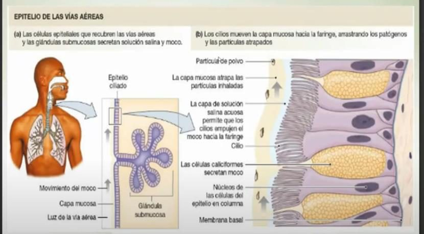
Del teórico "Fisiología Respiratoria Parte 2".Mirá el dibujo del epitelio (a la derecha) de abajo hacia arriba: ① Abajo, la membrana basal y los núcleos de las células ciliadas. ② Entre ellas, las células caliciformes (en forma de copa) que secretan moco. ③ Arriba de los cilios, dos capas: la solución salina (donde se mueven los cilios) y encima la capa mucosa (que atrapa las partículas de polvo). ④ La flecha indica el sentido: hacia la faringe. Es la razón por la que el tabaco daña tanto: paraliza los cilios, el moco se estanca y aparece la tos del fumador, que es el intento de sacarlo a la fuerza.
¿Cómo vas con la definición de respiración y la anatomía funcional?
🔒 Resolvé el mini-test de abajo para desbloquear el semáforo.
📝 Mini-test 1 — Respiración y anatomía funcional
1. Según la guía del TP, la HEMATOSIS (respiración externa) es:
Correcta: B.A es la ventilación, C la respiración interna y D la respiración celular. Los cinco pasos, en orden: ventilación → hematosis → transporte → respiración interna → respiración celular.
2. ¿Por qué el aire llega a los alvéolos casi detenido, avanzando por difusión?
Correcta: D.C confunde el diámetro de un tubo con la suma de las secciones de toda una generación. Es la misma ley que hace lenta la sangre en los capilares.
3. En la fibrosis quística el moco es espeso y se acumula porque:
Correcta: A.D describe otra enfermedad (la discinesia ciliar primaria), donde el problema son los cilios y no el moco. C confunde la vía aérea con el alvéolo. En la FQ los cilios están sanos: les falta el agua para moverse.
3. Mecánica respiratoria: los músculos y el ciclo de presiones
Músculos de la INSPIRACIÓN (teórico Parte 1)
Normal:"diafragma, intercostales externos".
Accesorios en inspiración forzada: los de "cabeza y cuello (escalenos, ECM), miembro superior (pectoral menor)", y además "pectoral mayor, elevador de la escápula, serrato mayor y dorsal ancho".
Músculos de la ESPIRACIÓN
Normal:"pasivo por retroceso elástico" — no hay músculo: el pulmón se achica solo, como un resorte que se suelta.
Forzada:"intercostales internos, músculos abdominales (oblicuo interno y externo, transverso), recto anterior, serrato posterior inferior". Los abdominales empujan las vísceras contra el diafragma y lo suben.
Figura 34 Los músculos de la respiración y la cavidad torácica
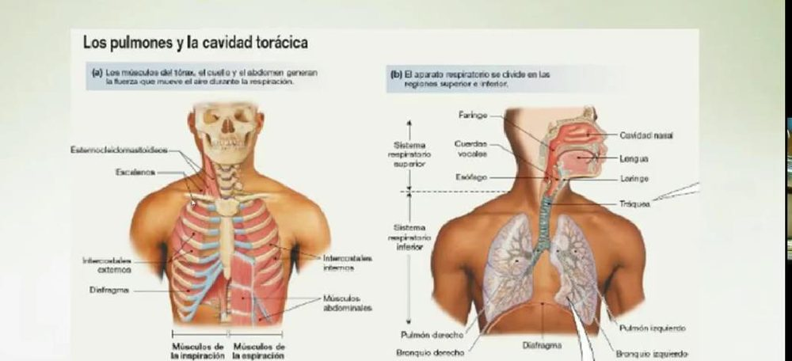
Del teórico "Fisiología Respiratoria Parte 1". (a) Los músculos del tórax, cuello y abdomen que generan la fuerza para mover el aire; (b) el aparato respiratorio dividido en superior e inferior.
En el dibujo de la izquierda fijate en las dos llaves de abajo: "músculos de la inspiración" y "músculos de la espiración". ① Del lado de la inspiración: esternocleidomastoideo, escalenos, intercostales externos y diafragma. ② Del lado de la espiración: intercostales internos y músculos abdominales. Un paciente que usa el esternocleidomastoideo y los escalenos para respirar en reposo (se le marcan en el cuello, "tiraje") está en dificultad respiratoria: está reclutando músculos accesorios.
⚙️ Un ciclo respiratorio en reposo, paso a paso
Reposo (fin de espiración): presión alveolar = atmosférica (0): no hay flujo. La presión intrapleural es negativa (unos −5 cmH₂O, o −3 mmHg según la figura de Silverthorn).
El diafragma se contrae y baja; los intercostales externos elevan las costillas: el tórax se agranda en los tres diámetros.
La pared "tira" de la pleura parietal: la presión intrapleural se vuelve más negativa (−7,5 cmH₂O, o −6 mmHg).
El pulmón, pegado por esa presión, se expande; por Boyle, la presión alveolar cae por debajo de la atmosférica (−1 cmH₂O, o −1 mmHg).
Entra aire hasta que la presión alveolar vuelve a 0: ingresó el volumen corriente (unos 500 mL).
Los músculos se relajan: el retroceso elástico del pulmón y de la pared achica el tórax, la presión alveolar sube por encima de la atmosférica (+1) y el aire sale. La intrapleural vuelve a su valor de reposo.
Figura 35 Volumen, presión pleural, presión alveolar y flujo en un ciclo
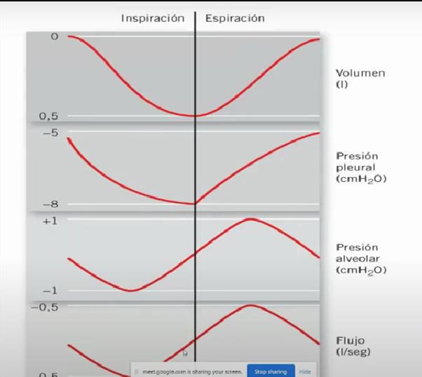
Del teórico "Fisiología Respiratoria Parte 1" (gráfico clásico del Guyton, en cmH₂O).
Ubicá la línea vertical del medio: a la izquierda es inspiración, a la derecha espiración. Recorré las cuatro curvas con el dedo en el mismo instante: ①Volumen (arriba): aumenta 0,5 L en la inspiración y vuelve en la espiración. ②Presión pleural: siempre negativa; se hace más negativa (de −5 a −8) mientras entra el aire. ③Presión alveolar: baja a −1 en la inspiración (entra aire) y sube a +1 en la espiración (sale). Pasa por 0 justo en el cambio de fase. ④Flujo (abajo): copia a la presión alveolar. Cuando ella es 0, no hay flujo. La idea que tenés que llevarte: el flujo lo decide la presión alveolar; la pleural solo "prepara" al pulmón para expandirse.
Figura 36 Cambios de presión durante la respiración en reposo (en mmHg)
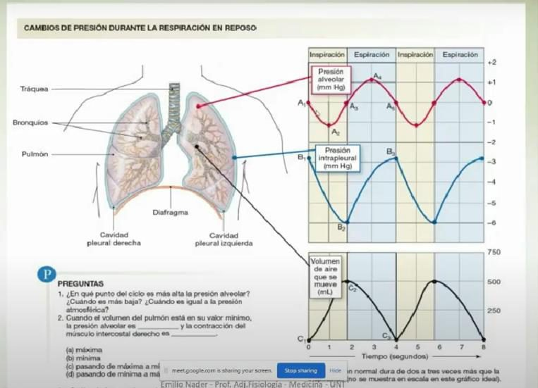
Del teórico "Fisiología Respiratoria Parte 1" (lámina de Silverthorn, en mmHg). En la parte de abajo aparecen preguntas del libro y la barra de la videollamada: vienen así en la diapositiva original.
Tres gráficos alineados en el tiempo (8 segundos, dos ciclos): ①Presión alveolar (rosa): puntos A₁ a A₅. Es 0 en A₁, A₃ y A₅ (los cambios de fase), mínima en A₂ (mitad de la inspiración) y máxima en A₄ (mitad de la espiración). ②Presión intrapleural (azul): de −3 (B₁) a −6 (B₂) y vuelve. Nunca llega a 0. ③Volumen (negro): sube de 0 a 500 mL (C₂) y vuelve. Contestá la pregunta 1 del libro con el gráfico: la presión alveolar es más alta a mitad de la espiración (A₄), más baja a mitad de la inspiración (A₂) e igual a la atmosférica al final de cada fase (A₁, A₃, A₅), cuando el volumen está en su mínimo o su máximo.
Las dos figuras dicen números distintos y las dos están bien. Guyton usa cmH₂O (pleural −5 → −7,5); Silverthorn usa mmHg (pleural −3 → −6). Como 1 mmHg ≈ 1,36 cmH₂O, son valores del mismo orden. En el examen, decí siempre la unidad. Lo que no cambia: la pleural es siempre negativa en la respiración tranquila y la alveolar oscila alrededor de 0 (±1). Y una errata del teórico: en la diapositiva de espirometría dice que el eje vertical es "el volumen del flujo de aire (L/s)"; el volumen se mide en litros y el flujo en L/s: son dos gráficos distintos.
Figura 37 El tórax en espiración y en inspiración
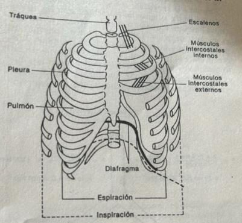
Del teórico "Fisiología Respiratoria Parte 1".Buscá abajo las dos líneas rotuladas Espiración (más alta) e Inspiración (más baja): son las dos posiciones del diafragma. Todo el volumen que ganás entre una y otra es aire que entra. Y fijate la diferencia de altura: el diafragma baja varios centímetros en una inspiración profunda.
Figura 38 "¿Qué interpreta?": radiografías en espiración e inspiración máximas
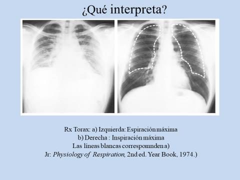
Del teórico "Fisiología Respiratoria Parte 1"."Rx tórax: a) izquierda: espiración máxima; b) derecha: inspiración máxima. Las líneas blancas corresponden a..." (la leyenda original viene cortada).
Compará los hemidiafragmas: en espiración (izquierda) están altos y la silueta cardíaca se ve ancha; en inspiración (derecha), bajos, el tórax se alarga y el corazón se "afina". Las líneas blancas de la derecha dibujan el contorno del pulmón en espiración, para que midas cuánto creció. La pregunta del teórico ("¿los cambios de volumen del tórax son mayores en inspiración o en espiración?") se contesta mirando cuánto se aleja cada imagen de la posición de reposo: el tórax puede agrandarse mucho más de lo que puede achicarse (la capacidad inspiratoria, unos 3 L, supera a la reserva espiratoria, 1,1 L).
🔀 Ordená la secuencia de una INSPIRACIÓN tranquila
Arrastrá para ordenar del 1 al 6.
🫁 El pulmón se expande siguiendo a la pared
⬇️ El diafragma se contrae y desciende; los intercostales externos elevan las costillas
💨 Entra aire hasta que la presión alveolar vuelve a 0 (unos 500 mL)
🧠 Los centros respiratorios envían la orden por el frénico (C3-C5)
📉 Por la ley de Boyle, la presión alveolar cae por debajo de la atmosférica
➖ La presión intrapleural se hace más negativa
4. El papel de las pleuras: por qué la presión pleural es negativa
El pulmón y la pared tiran para lados opuestos. El pulmón, por sus fibras elásticas y por la tensión superficial del líquido de los alvéolos, tiende a achicarse (a colapsar hacia el hilio). La pared torácica, por su propia elasticidad, tiende a expandirse hacia afuera. Entre los dos está la cavidad pleural, sellada y llena de una película de líquido. Como las dos hojas tiran en sentidos opuestos y no pueden separarse (el líquido no se estira), la presión en ese espacio queda por debajo de la atmosférica.
Dos vidrios mojados: podés deslizarlos uno sobre el otro, pero cuesta muchísimo separarlos. Así están las dos pleuras: el líquido las deja deslizar en cada respiración, pero las mantiene unidas. Y si hacés entrar aire entre los dos vidrios, se separan en el acto. Eso es un neumotórax.
Figura 39 El modelo del tórax del trabajo práctico
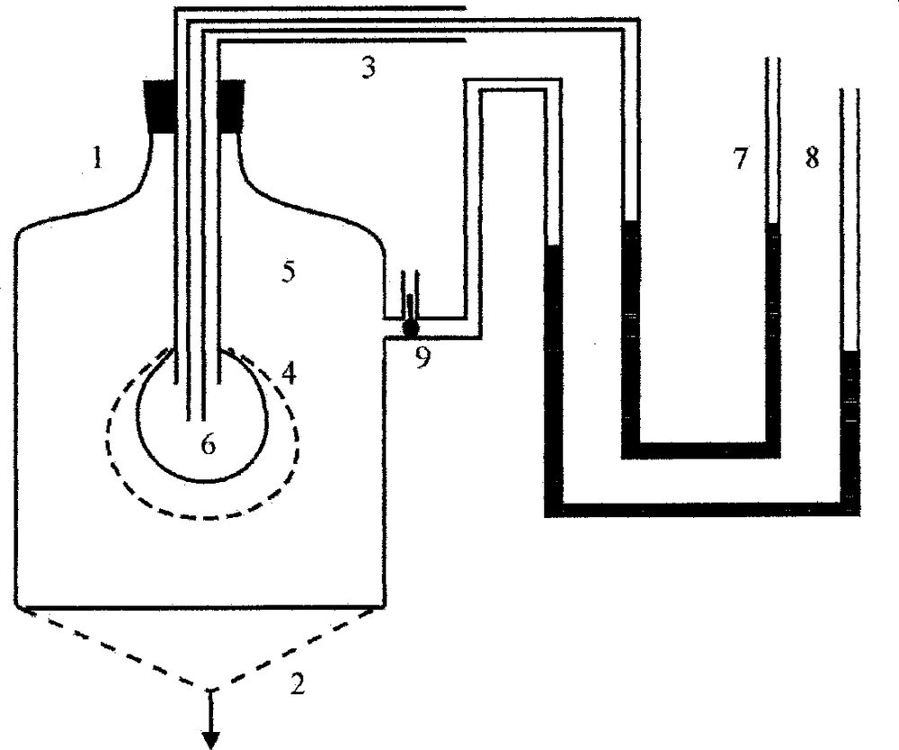
De la "Guía de Espirometría" del TP (Fig. 1, "Modelo del tórax"). Referencias del original: 1 caja torácica · 2 diafragma · 3 vías aéreas superiores · 4 pulmones · 5 espacio pleural · 6 espacio alveolar · 7 manómetro para medir la presión alveolar · 8 manómetro para medir la presión pleural · 9 llave de tres vías.① El frasco (1) es la caja torácica rígida; su base es una goma (2) que hace de diafragma. ② El globo (4) es el pulmón: su interior (6) es el espacio alveolar y el espacio que lo rodea dentro del frasco (5) es el espacio pleural. ③ Los manómetros miden: el 7, la presión alveolar; el 8, la pleural. ④ La llave (9) "no corresponde a ninguna estructura anatómica real": sirve para empezar con presión pleural negativa y para abrir el espacio pleural a la atmósfera, es decir, simular un neumotórax. Cuando tirás de la goma hacia abajo, el manómetro 8 se hace más negativo y el globo se infla: es la inspiración. Cuando abrís la llave, el manómetro 8 va a 0 y el globo se desinfla: es el neumotórax. Sus limitaciones, según la guía: muestra un solo pulmón y una pared rígida e inmóvil.
Figura 40 Pulmón normal vs neumotórax
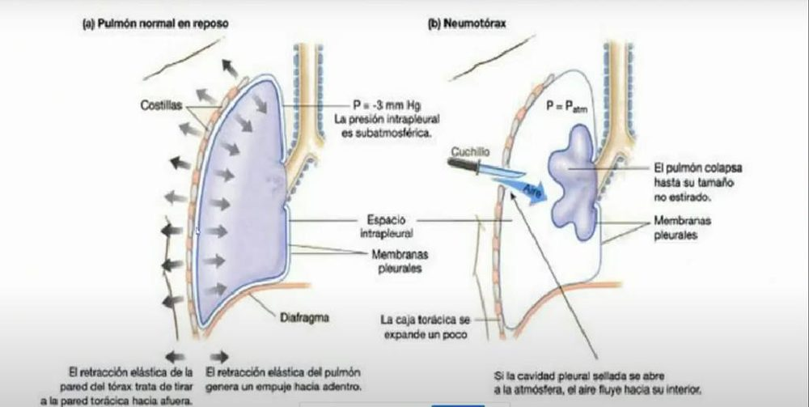
Del teórico "Fisiología Respiratoria Parte 2": "Situación traumática: neumotórax: la presión intrapleural negativa, que es un espacio virtual, al entrar aire se convierte en presión positiva con la retracción de los pulmones."En el dibujo (a), mirá las flechas: las de la pared apuntan hacia afuera ("la retracción elástica de la pared tiende a tirar a la pared hacia afuera") y las del pulmón hacia adentro ("la retracción elástica del pulmón genera un empuje hacia adentro"). En el medio, P = −3 mmHg.
En (b), el cuchillo abre la cavidad: la presión se iguala con la atmosférica (P = Patm), el pulmón colapsa hasta un tamaño no estirado y la caja torácica se expande un poco. Fijate que en el neumotórax los dos se mueven en direcciones opuestas: la prueba de que antes estaban "peleando" y la pleura los mantenía juntos.
Neumotórax a tensión. Si la herida funciona como una válvula (deja entrar aire en cada inspiración pero no salir), la presión pleural se vuelve cada vez más positiva: el pulmón colapsa por completo, el mediastino se desplaza al otro lado y comprime las venas cavas, cae el retorno venoso y el paciente entra en shock. Signos: disnea brusca, ausencia de murmullo vesicular y hipersonoridad de ese lado, tráquea desviada. Es una emergencia que se trata con una punción en el 2.º espacio intercostal, línea medioclavicular (el que encontrás desde el ángulo de Louis) y luego un tubo de drenaje pleural — siempre sobre el borde superior de la costilla.
5. El agente tensioactivo (surfactante)
Qué es (teórico Parte 2)
"Es una mezcla de fosfolípidos y proteínas."
"Reprime la fuerza cohesiva del agua."
"Está más concentrado en los alvéolos pequeños que en los grandes."
Lo fabrican los neumocitos tipo II; su fosfolípido principal es la dipalmitoilfosfatidilcolina, con las proteínas SP-A, SP-B, SP-C y SP-D (apunte de histología, Semana 17).
El problema que resuelve: la ley de Laplace
P = 2T / r
La presión que tiende a colapsar una burbuja (P) es directamente proporcional a la tensión superficial (T) e inversamente proporcional al radio (r). "De acuerdo con la ley de LaPlace, si dos burbujas tienen la misma tensión superficial, la más pequeña tiene la presión más alta."
Figura 41 La ley de Laplace y el efecto protector del surfactante
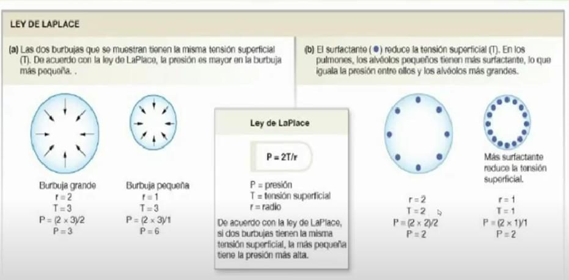
Del teórico "Fisiología Respiratoria Parte 2": "Efecto protector del surfactante en la respiración (es mayor en la espiración, impidiendo la tendencia al colapso de los alvéolos más pequeños)."Hacé las cuentas del dibujo, de izquierda a derecha: (a) Sin surfactante: burbuja grande, r = 2 y T = 3 → P = 2 × 3 / 2 = 3. Burbuja chica, r = 1 y T = 3 → P = 2 × 3 / 1 = 6. La chica tiene el doble de presión: si estuvieran conectadas, la chica se vaciaría en la grande y colapsaría. (b) Con surfactante: como está más concentrado en la chica, su T baja a 1 → P = 2 × 1 / 1 = 2. La grande, con T = 2 → P = 2 × 2 / 2 = 2. Igualó las presiones. Esa es la función central del surfactante: estabilizar alvéolos de distinto tamaño para que los chicos no se colapsen en los grandes, sobre todo al final de la espiración, cuando todos se achican.
¿Por qué el surfactante está "más concentrado" en los alvéolos pequeños? Porque la misma cantidad de moléculas queda repartida sobre una superficie menor. Y eso tiene una consecuencia elegante: cuando un alvéolo se achica (espiración), su surfactante se concentra más, la tensión superficial baja más, y eso compensa justo la reducción del radio en la ley de Laplace. Es un mecanismo que se autorregula, y por eso el teórico dice que su efecto protector "es mayor en la espiración". Además, al bajar la tensión superficial, el surfactante reduce el trabajo necesario para inflar el pulmón (aumenta la distensibilidad) y ayuda a que los alvéolos no se llenen de líquido.
Figura 42 El surfactante en la superficie alveolar
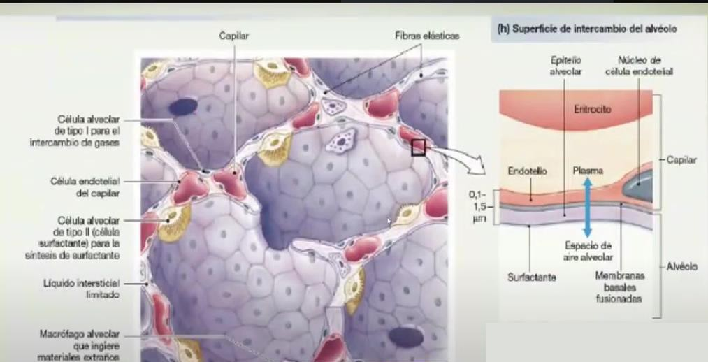
Del teórico "Fisiología Respiratoria Parte 2".En el dibujo de alvéolos buscá las células alveolares tipo II (las que sintetizan surfactante) entre las planas tipo I (las del intercambio), y los macrófagos alveolares que "ingieren materiales extraños".
En el detalle de la derecha ("superficie de intercambio del alvéolo"), seguí la flecha azul desde el aire hasta el eritrocito: atraviesa el surfactante, el epitelio alveolar, las membranas basales fusionadas y el endotelio. Son apenas 0,1 a 1,5 µm. Esa barrera es la de la pestaña de Transporte de gases, y su histología está en la guía de la Semana 17.
Síndrome de dificultad respiratoria del recién nacido. El apunte "Aparato respiratorio II" lo explica: "Los lactantes inmaduros (que nacen antes de siete meses de gestación) que aún no producen agente tensoactivo (o que elaboran una cantidad inadecuada) padecen insuficiencia respiratoria del recién nacido potencialmente mortal. Estos recién nacidos se tratan con una combinación de agente tensioactivo sintético y administración de glucocorticoides. El agente tensioactivo sintético actúa de inmediato para reducir la tensión de superficie y los glucocorticoides estimulan los neumocitos tipo II para que produzcan el surfactante." Sin surfactante, en cada espiración los alvéolos chicos colapsan (atelectasias) y el bebé tiene que "reabrirlos" con un esfuerzo enorme en cada respiración: aleteo nasal, quejido, tiraje. Por eso a la embarazada con riesgo de parto prematuro se le dan corticoides antes del parto: para madurar los pulmones del feto.
¿Cómo vas con la mecánica ventilatoria, las presiones, el papel de la pleura y el surfactante?
🔒 Resolvé el mini-test de abajo para desbloquear el semáforo.
📝 Mini-test 2 — Mecánica, pleuras y surfactante
1. Al final de una espiración tranquila, sin flujo de aire:
Correcta: C. Sin flujo, la alveolar es 0. La pleural nunca es 0 en la respiración normal: si lo fuera, el pulmón colapsaría (A describe un neumotórax). D mezcla el pico espiratorio de la alveolar con el pico inspiratorio de la pleural.
2. La presión intrapleural es negativa porque:
Correcta: A. Dos retracciones elásticas opuestas sobre un espacio sellado. C es falsa: la cavidad pleural normal no contiene aire, solo una película de líquido; si hay aire, es un neumotórax. D confunde: el surfactante está en los alvéolos, no en la pleura.
3. Según la ley de Laplace (P = 2T/r), sin surfactante:
Correcta: D.A invierte la ley: a menor radio, mayor presión. B es lo que se logra con surfactante, no sin él. Del teórico: "su efecto protector es mayor en la espiración, impidiendo la tendencia al colapso de los alvéolos más pequeños".
Tocá cada tarjeta para ver la respuesta
Respiración: definición del TPtocá
Provee el O₂ que necesitan las células y elimina el CO₂ de las oxidaciones. Requiere: ventilación pulmonar, hematosis (respiración externa), transporte de gases, respiración interna (sangre-célula) y respiración celular.
Funciones del aparato respiratoriotocá
Intercambio de gases entre atmósfera y sangre, regulación homeostática del pH, protección frente a patógenos e irritantes inhalados, y vocalización.
Presión parcial de O₂ del airetocá
21 % de 760 mmHg = unos 159-160 mmHg (ley de Dalton: cada gas aporta según su fracción).
Sistema de conduccióntocá
De la nariz a los bronquiolos terminales (generaciones 0 a 16). No intercambia gases: conduce, calienta, humedece y filtra el aire. Su volumen es el espacio muerto anatómico (~150 mL).
Aparato de difusióntocá
Bronquiolos respiratorios, conductos y sacos alveolares y alvéolos (hasta la generación 24). 300-600 millones de alvéolos, más de 1.000.000 cm² de superficie.
Mecanismo para renovar el airetocá
Caja torácica, músculos respiratorios, pleuras que acoplan el pulmón a la pared, y centros nerviosos que dan la orden.
Ascensor mucociliartocá
El moco atrapa partículas y los cilios, batiendo en una capa salina, lo empujan hacia la faringe. La capa salina depende de la secreción de Cl⁻ por el canal CFTR.
Fibrosis quísticatocá
Enfermedad hereditaria (dos genes defectuosos) del canal CFTR: no se secreta Cl⁻ ni agua, el moco se vuelve espeso, se estanca y produce infecciones pulmonares graves; afecta también páncreas, glándulas sudoríparas y aparato reproductor masculino.
Músculos de la inspiracióntocá
Normal: diafragma e intercostales externos. Accesorios (forzada): escalenos, esternocleidomastoideo, pectoral menor y mayor, elevador de la escápula, serrato mayor y dorsal ancho.
Músculos de la espiracióntocá
Normal: ninguno, es pasiva por retroceso elástico. Forzada: intercostales internos, abdominales (oblicuos, transverso, recto anterior) y serrato posterior inferior.
Ley de Boyle aplicadatocá
P × V = constante. Si el tórax (y con él el pulmón) se agranda, la presión alveolar baja por debajo de la atmosférica y el aire entra; si se achica, sube y el aire sale.
Presión alveolar en el ciclotocá
0 en reposo y en cada cambio de fase; −1 en la mitad de la inspiración (entra aire); +1 en la mitad de la espiración (sale aire). Decide el flujo.
Presión intrapleural en el ciclotocá
Siempre negativa: de −5 a −7,5 cmH₂O (Guyton) o de −3 a −6 mmHg (Silverthorn). Se hace más negativa en la inspiración.
Por qué la pleural es negativatocá
El pulmón tiende a retraerse (elastina y tensión superficial) y la pared a expandirse; el líquido pleural no deja que las hojas se separen, así que la presión entre ellas queda subatmosférica.
Neumotóraxtocá
Entra aire a la cavidad pleural, la presión se iguala con la atmosférica (o se vuelve positiva), el pulmón colapsa por su retracción elástica y la caja torácica se expande un poco.
Modelo del tórax del TPtocá
Frasco rígido (tórax), goma (diafragma), globo (pulmón), manómetros de presión alveolar y pleural, y una llave de tres vías que permite simular un neumotórax. Limitaciones: un solo pulmón y pared rígida.
Surfactante: qué estocá
Mezcla de fosfolípidos (dipalmitoilfosfatidilcolina) y proteínas (SP-A a SP-D) fabricada por los neumocitos tipo II. Reprime la fuerza cohesiva del agua y está más concentrado en los alvéolos pequeños.
Ley de Laplacetocá
P = 2T / r. Con igual tensión superficial, la burbuja más chica tiene más presión y se vaciaría en la grande. El surfactante baja la T de los alvéolos chicos e iguala las presiones.
Por qué el surfactante protege más en la espiracióntocá
Al achicarse el alvéolo, su surfactante se concentra, la tensión superficial baja y compensa la reducción del radio. Evita el colapso de los alvéolos chicos al final de la espiración.
SDR del recién nacidotocá
Prematuros sin surfactante suficiente: los alvéolos colapsan en cada espiración. Tratamiento: surfactante sintético (acción inmediata) y glucocorticoides (estimulan a los neumocitos tipo II).
Progreso — Espirometría y ventilación alveolar0%
📋 Contenido del sílabo que cubre esta pestaña: Espirometría: nociones básicas. Volúmenes y capacidades pulmonares. Ventilación alveolar y ventilación alveolar minuto. Espacio muerto anatómico y funcional. (Incluye también la técnica de medición del flujo espiratorio máximo del TP.)
🚪 Desde cero: medir el aire que entra y sale, y lo que eso dice del pulmón
La espirometría es la "radiografía funcional" del pulmón: no muestra cómo se ve, sino cuánto aire mueve y a qué velocidad. El teórico la define así: "una técnica que mide la magnitud absoluta de los volúmenes pulmonares, las capacidades pulmonares y la rapidez con que éstos pueden ser movilizados (flujos aéreos)", y distingue dos tipos: "simple (estática) y forzada (dinámica)".
¿Volumen o capacidad?
El teórico lo pregunta con todas las letras: "¿Cuál es la diferencia entre VOLUMEN y CAPACIDAD?". Respuesta: un volumen es un tramo único e indivisible del aire pulmonar (son 4). Una capacidad es la suma de dos o más volúmenes (son 4 también). Si entendés esto, no hay nada que memorizar: las capacidades se deducen.
¿Para qué sirve medirlo?
Para distinguir dos grandes familias de enfermedad: las que achican el pulmón (restrictivas: entra menos aire) y las que estrechan los tubos (obstructivas: el aire sale más lento). La guía del TP lo resume: "diagnóstico... informe preoperatorio... determinación del grado de incapacidad... estudios epidemiológicos".
Siglas de la cátedra (¡ojo, no son las inglesas!): VC = volumen corriente · VRI = volumen de reserva inspiratoria · VRE = volumen de reserva espiratoria · VR = volumen residual · CI = capacidad inspiratoria · CV = capacidad vital · CFR = capacidad funcional residual · CPT = capacidad pulmonar total · CVF = capacidad vital forzada · VEF₁ = volumen espiratorio forzado en el primer segundo.
1. Los aparatos: espirógrafo y espirómetro
El ESPIRÓGRAFO (guía del TP)
"Constituido por una campana hueca... llena de oxígeno, que flota en un depósito... entre las cuales hay agua. La campana está conectada mediante un cable y una polea con una aguja inscriptora que se desplaza sobre un tambor cubierto de papel."
Es un circuito cerrado: el aire circula siempre en la misma dirección gracias a un sistema valvular, y pasa por un depósito de cal sodada que "absorbe el CO₂ eliminado por el individuo en estudio con cada espiración".
El ESPIRÓMETRO clásico
"Sólo puede registrar el volumen de aire espirado... Se trata de un sistema abierto, por lo que tiene una sola manguera... El aparato carece de la capacidad de hacer registros gráficos, y registra sólo el valor máximo alcanzado, por lo que solamente puede medir la capacidad vital."
Y los espirómetros dinámicos (como el PULMAX del TP) registran el volumen espirado en función del tiempo: son los que permiten la espirometría forzada.
Figura 43 El espirógrafo del TP
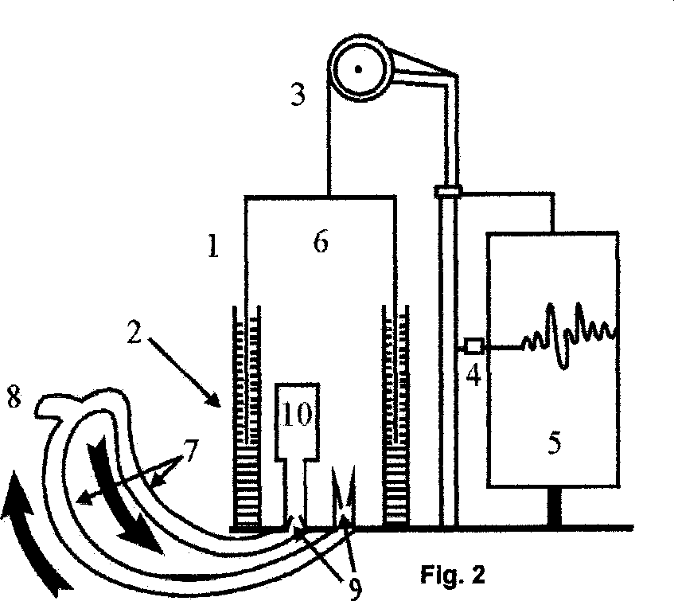
De la "Guía de Espirometría" del TP (Fig. 2). Referencias según el texto: 1 campana · 2 depósito de agua · 3 polea · 4 aguja inscriptora · 5 tambor con papel · 6 interior de la campana · 7 tubos · 8 boquilla · 9 válvulas · 10 cal sodada.
Seguí el aire: sale de la boca (8), pasa por las válvulas (9), atraviesa la cal sodada (10), entra en la campana (6) y vuelve. Cuando el sujeto espira, la campana sube; la polea (3) convierte eso en un movimiento de la aguja (4) sobre el tambor (5) que gira. Así cada respiración queda dibujada: eso es el espirograma.
Figura 44 El espirómetro de campana y su registro
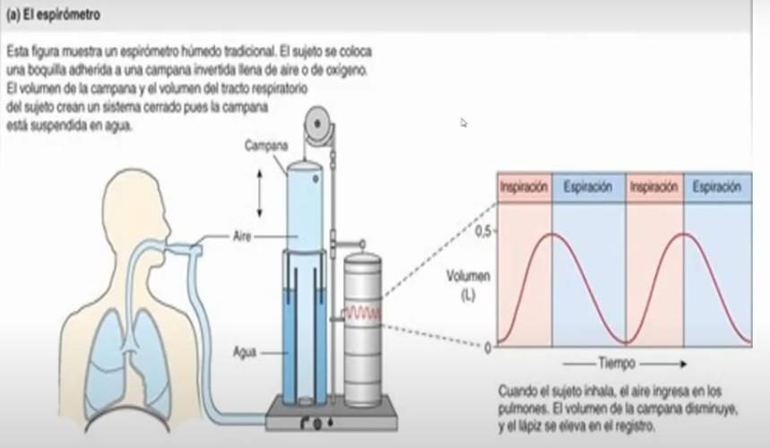
Del teórico "Fisiología Respiratoria Parte 1" (lámina de Silverthorn).
Fijate en la frase de abajo a la derecha: "cuando el sujeto inhala, el aire ingresa en los pulmones, el volumen de la campana disminuye y el lápiz se eleva en el registro". Por eso en el trazado la inspiración va hacia arriba y la espiración hacia abajo. (En el espirógrafo de la guía del TP es al revés: la espiración produce una deflexión hacia abajo. Siempre mirá cómo está rotulado el eje antes de interpretar.)
Figura 45 El espirómetro clásico: sistema abierto, solo mide lo espirado
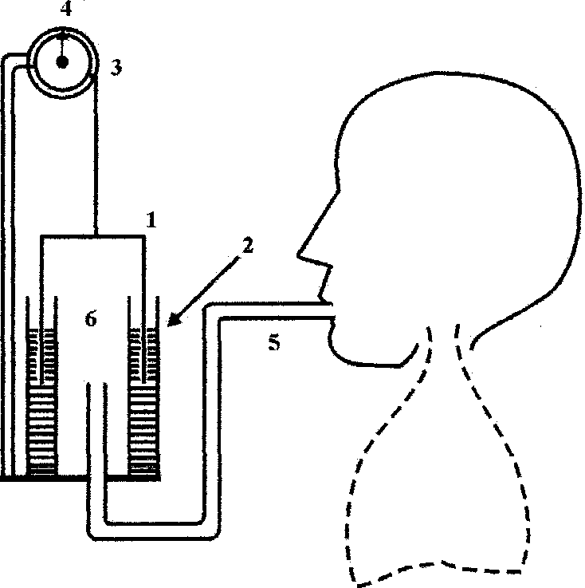
De la "Guía de Espirometría" del TP (Fig. 4). 1 campana · 2 depósito de agua · 3 polea · 4 aguja sobre el cuadrante · 5 manguera · 6 interior de la campana.
Compará con el espirógrafo: acá hay una sola manguera (5), no hay válvulas, no hay cal sodada y no hay tambor, solo un cuadrante. Es un aparato para una sola medición: el sujeto inspira al máximo por su cuenta y sopla todo dentro de la campana. La aguja queda en el máximo: eso es la capacidad vital, que es lo que se mide en el TP.
2. Volúmenes y capacidades pulmonares
Volumen
Definición (guía del TP)
Valor
VC — volumen corriente
"Volumen de aire inspirado y espirado en cada ciclo respiratorio."
~500 mL
VRI — reserva inspiratoria
"Volumen extra de aire que puede ser inspirado por encima del volumen corriente normal, al hacer una inspiración máxima."
~3000 mL
VRE — reserva espiratoria
"Volumen de aire que puede ser espirado en la espiración máxima después del final de una espiración normal."
~1100 mL
VR — volumen residual
"Volumen de aire que queda en los pulmones después de una espiración máxima."
~1200 mL
Capacidad
Qué volúmenes suma
Definición (guía del TP)
Valor
CI — inspiratoria
VC + VRI
"Máximo volumen que se puede inspirar, a partir de la posición de reposo del tórax."
2000-4000 mL
CV — vital
VRI + VC + VRE
"Máximo volumen que se puede espirar luego de realizar una inspiración máxima."
3000-6000 mL
CFR — funcional residual
VRE + VR
"Volumen de aire que permanece en los pulmones luego de una espiración normal."
2000-4000 mL
CPT — pulmonar total
VC + VRI + VRE + VR
"La suma de los cuatro volúmenes."
4000-8000 mL
Figura 46 El espirograma: los cuatro volúmenes y las cuatro capacidades
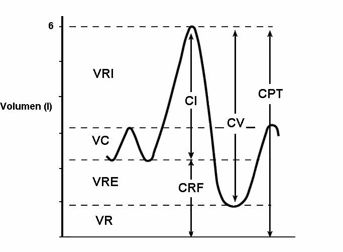
De la "Guía de Espirometría" del TP (Fig. 3).(La figura original rotula la capacidad funcional residual como "CRF"; en el texto de la guía es "CFR".)Empezá por las ondas chiquitas de la izquierda: su altura es el VC. Ahora mirá el gran pico: el tramo que sube por encima de la cresta de las ondas es el VRI; el que baja por debajo del valle, el VRE. Lo que queda debajo de todo y nunca sale es el VR.
Ahora las llaves de la derecha: CI arranca en el valle de las ondas normales (el reposo) y llega arriba de todo; CV va del punto más alto al más bajo que el sujeto puede alcanzar; CFR va del reposo hasta el fondo; CPT, de arriba de todo hasta el fondo. La regla que ordena todo: la posición de reposo (fin de una espiración normal) es la línea que parte el gráfico. Lo de arriba de esa línea es CI; lo de abajo, CFR. CI + CFR = CPT.
Figura 47 Volúmenes y capacidades en escala real
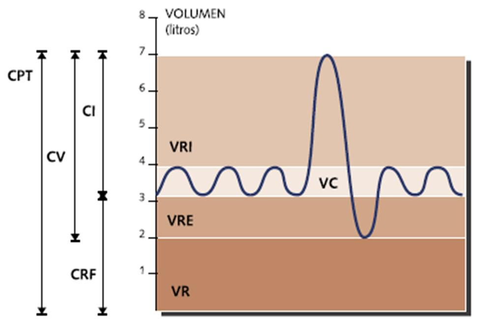
Del teórico "Fisiología Respiratoria Parte 1".Este gráfico tiene la ventaja de la escala en litros (eje de 0 a 8). Medí con la vista: el VR ocupa más de un litro abajo de todo; el VC (las ondas) es una franja finita de medio litro; el VRI es la franja más grande. Conclusión que sorprende: en reposo usás apenas una décima parte de tu capacidad pulmonar total. Todo lo demás es reserva, y es lo que se pierde primero en las enfermedades.
Tres trampas con los volúmenes
①El espirómetro NO mide el VR, ni por lo tanto la CFR ni la CPT, que lo contienen: "el aire contenido en el volumen residual no puede ser eliminado por los pulmones (y no entra, por lo tanto, en el sistema de medición). El volumen residual y las capacidades que lo contienen pueden ser medidos por métodos indirectos (por ejemplo, de dilución de helio)."
②VC ≠ CV. En la cátedra, VC es el volumen corriente (500 mL) y CV la capacidad vital (4-5 L). En los libros en inglés, "VC" es vital capacity. Si leés un gráfico, fijate el valor antes de la sigla.
③"Volumen tidal": la guía lo llama "incorrecto nombre... una corrupción de la expresión inglesa tidal volume (que se podría traducir como volumen de marea)". Se entiende, pero en el examen escribí volumen corriente.
🧮 Los ejercicios de autoaprendizaje de la guía, resueltos
CV, si CI = 3000 mL y VRE = 1500 mL. CV = VRI + VC + VRE = (VRI + VC) + VRE = CI + VRE = 3000 + 1500 = 4500 mL.
VR, si CFR = 3000 mL y VRE = 1500 mL. CFR = VRE + VR → VR = 3000 − 1500 = 1500 mL.
CPT, si CI = 3000 mL y CFR = 2500 mL. CPT = CI + CFR = 5500 mL (el reposo parte el gráfico en dos).
"VVP", si VRE = 1500, VRI = 2000, VR = 1500 y CPT = 5500 mL. Lo único que falta de los cuatro volúmenes es el corriente: 5500 − 1500 − 2000 − 1500 = 500 mL. La guía no define la sigla "VVP"; por los datos, lo que se pide es el volumen corriente.
¿Qué pasaría sin el cartucho de cal sodada? El espirógrafo es un circuito cerrado: el sujeto reinhalaría su propio CO₂, que se acumularía en la campana. Subiría su PCO₂ arterial (hipercapnia) y los quimiorreceptores lo harían hiperventilar: respiraciones cada vez más profundas y rápidas, con sensación de falta de aire, cefalea y, si se prolonga, confusión. El registro dejaría de mostrar un reposo estable.
¿Cómo vas con los aparatos, los volúmenes y las capacidades?
🔒 Resolvé el mini-test de abajo para desbloquear el semáforo.
📝 Mini-test 1 — Volúmenes y capacidades
1. La CAPACIDAD FUNCIONAL RESIDUAL es:
Correcta: B.A es el volumen residual (después de una espiración máxima). C es la capacidad inspiratoria y D la capacidad vital. La CFR es el aire que queda "en reposo": el que amortigua los cambios de gases entre respiración y respiración.
2. ¿Cuál de estos valores NO puede obtenerse con un espirómetro?
Correcta: D. El VR, la CFR y la CPT requieren métodos indirectos (dilución de helio). A, B y C se miden porque todo su aire entra y sale por la boca.
3. Si la CI es 3000 mL y la CFR es 2500 mL, la CPT es:
Correcta: A. Es el ejercicio 3 de la guía. D es el error clásico: el VR ya está incluido dentro de la CFR. CI + CFR = (VC + VRI) + (VRE + VR) = los cuatro volúmenes.
3. La espirometría forzada: obstrucción vs restricción
⚙️ La maniobra y sus tres números
La maniobra:"el sujeto realiza una inspiración máxima y luego espira al máximo con todas sus fuerzas", durante "4 a 6 s".
CVF (capacidad vital forzada): todo el volumen espirado. "Su reducción indica una alteración de la capacidad del aparato respiratorio de movilizar el aire. Ello sucede en los denominados procesos restrictivos."
VEF₁: "el volumen espirado en el primer segundo". Mide la velocidad: si los tubos están estrechados, sale menos aire en ese segundo.
Índice de Tiffeneau (VEF₁/CVF): "un dato útil para diferenciar la patología obstructiva de la restrictiva. En un proceso obstructivo el índice tendrá un valor menor de 0,75, y si el proceso es restrictivo, el índice será mayor de 0,75."
NORMAL
Valores "entre el 80-100 % del valor de la CVF establecido para la edad, sexo y talla". Ejemplo de la guía: VEF₁ 4,01 · CVF 5,01 · Tiffeneau 0,80.
OBSTRUCTIVO
"CVF dentro de lo normal, con un VEF₁ inferior al 80 %... y un índice de Tiffeneau inferior a 0,75." Ejemplo: VEF₁ 2,09 · CVF 4,97 · Tiffeneau 0,42. Asma, EPOC.
RESTRICTIVO
"CVF reducido, con un VEF₁ mayor de 80 % y con un índice de Tiffeneau superior a 0,75." Ejemplo: VEF₁ 2,81 · CVF 3,11 · Tiffeneau 0,90. Fibrosis, deformidades del tórax, enfermedades neuromusculares.
Figura 48 Las tres curvas de la espirometría forzada
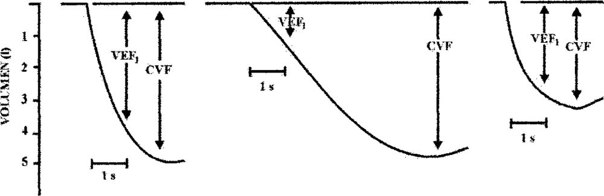
De la "Guía de Espirometría" del TP (Fig. 5). Patrón a: normal (VEF₁ 4,01 · CVF 5,01 · 0,80); b: obstructivo (2,09 · 4,97 · 0,42); c: restrictivo (2,81 · 3,11 · 0,90). Los números están en el texto de la guía, debajo de la figura original.
En cada curva, ubicá la marca de 1 segundo (la barrita con "1 s") y mirá cuánto bajó la curva hasta ahí: eso es el VEF₁. Después mirá hasta dónde llega al final: eso es la CVF. (a) Cae rápido y llega hondo. (b) Obstructivo: cae lento (el VEF₁ es corto) pero termina llegando casi igual de hondo (CVF casi normal). El aire está, pero le cuesta salir. (c) Restrictivo: cae rápido, pero llega poco: la CVF es chica. Sale fácil, pero hay poco. Por eso el índice VEF₁/CVF baja en la obstrucción (el numerador cae más que el denominador) y queda normal o alto en la restricción (los dos caen juntos).
FEP y FEF 25-75 %
El flujo espiratorio pico (FEP)"se produce muy al principio de la espiración, y depende de la resistencia de las grandes vías aéreas y del esfuerzo del paciente". El flujo espiratorio forzado medio (FEF 25-75 %) es el flujo promedio entre el 25 % y el 75 % de la CVF: "depende de la resistencia de las pequeñas vías aéreas y no del esfuerzo del paciente".
Por qué uno depende del esfuerzo y el otro no
Al principio de una espiración forzada, cuanto más fuerte soplás, más rápido sale el aire. Pero a medida que el pulmón se vacía, la misma presión que empuja el aire comprime también las vías aéreas pequeñas (que no tienen cartílago) y el flujo queda limitado por ellas. Por eso el tramo medio de la curva refleja la vía aérea periférica, que es donde empieza la EPOC.
Dos erratas de la guía de espirometría. ① Define el FEF 25-75 % como "el valor máximo que alcanza el flujo espiratorio entre el 25 % y el 75 % de la CVF". No es el máximo: es el flujo medio (por algo se llama "flujo espiratorio forzado medio"). El máximo es el FEP. ② Más abajo escribe "FEF 235-75 %": es un error de tipeo por FEF 25-75 %. Y un dato de contexto: la guía usa 0,75 como corte del Tiffeneau; las guías internacionales actuales (GOLD) usan 0,70 para diagnosticar EPOC. En el examen de la cátedra, respondé 0,75.
Asma vs EPOC en la espirometría. Los dos son obstructivos (Tiffeneau bajo), pero se diferencian con una segunda espirometría después de un broncodilatador (salbutamol inhalado): en el asma la obstrucción revierte (el VEF₁ mejora mucho), porque el problema es un músculo liso contraído; en la EPOC revierte poco o nada, porque la vía aérea está destruida o colapsa por falta de tejido elástico. Es la misma espirometría del TP, hecha dos veces.
El flujo espiratorio máximo (PEF) con medidor portátil
"El flujo espiratorio máximo (PEF) es el mayor flujo que se alcanza durante una maniobra de espiración forzada... dentro de los primeros 100 ms de espiración forzada, y se expresa en litros/minuto, litros/segundo o como porcentaje de su valor de referencia. Refleja el estado de las vías aéreas de gran calibre."
La técnica del TP: de pie · indicador a cero · medidor horizontal sin tapar el recorrido · inspiración máxima · labios cerrados alrededor de la boquilla (sin tapar con la lengua) · soplar de forma explosiva, lo más rápido y fuerte posible · anotar · repetir dos veces más y registrar el valor más alto.
Interpretación: normal si supera el 80 % del valor teórico para edad, sexo y altura; pero "es preferible tomar como valor de referencia la mejor marca personal (MMP)", medida durante 2-3 semanas de estabilidad.
Ventajas del PEF
Se correlaciona con el VEF y estima el grado de obstrucción.
Fatiga menos: no requiere espirar hasta el volumen residual.
Pequeño, portátil, sencillo; desde los 5 años.
Mantenimiento mínimo e interpretación simple.
Limitaciones del PEF
No reemplaza a la espirometría en la evaluación inicial del asma (es menos sensible que el VEF₁).
No informa sobre la vía aérea pequeña.
No es útil en la EPOC.
Depende del esfuerzo y la técnica; se puede simular.
Errata del PDF del PEF. Dice que el PEF "se consigue al haber espirado el 75-80 % de la capacidad pulmonar total". Eso contradice la frase siguiente ("dentro de los primeros 100 ms"): el pico de flujo se alcanza casi al inicio de la espiración, cuando el pulmón todavía contiene el 75-80 % de la CPT (se espiró apenas el 20-25 %). El sentido correcto es "al volumen pulmonar del 75-80 % de la CPT".
4. Ventilación minuto, ventilación alveolar y espacio muerto
📒 Nota de honestidad: el sílabo pide "Ventilación alveolar y ventilación alveolar minuto. Espacio muerto anatómico y funcional". La guía de espirometría los lista entre sus objetivos, pero no los desarrolla; el PDF "Transporte de Gases" solo menciona el espacio muerto fisiológico dentro de la relación V/Q, y el teórico trae la tabla de ramificaciones (donde se ve cuál es la zona de conducción). Esta sección se completó con la bibliografía estándar de fisiología (las fórmulas y valores clásicos de Ganong y Guyton), apoyándose en esos datos de la cátedra. No pude abrir el PDF del Ganong desde esta sesión para citarlo por página. Está marcado para que sepas qué podés citar como "según el apunte".
VENTILACIÓN MINUTO (pulmonar total)
V̇E = VC × FR
Todo el aire que entra (o sale) por minuto. En reposo: 500 mL × 12 respiraciones/min = 6 L/min.
VENTILACIÓN ALVEOLAR MINUTO
V̇A = (VC − VEM) × FR
Solo el aire que llega a los alvéolos y sirve para el intercambio. En reposo: (500 − 150) × 12 = 4,2 L/min. Es la que realmente importa, y es la "V" de la relación V/Q.
Espacio muerto ANATÓMICO
El volumen de las vías de conducción (de la nariz a los bronquiolos terminales), donde el aire no intercambia. Unos 150 mL en el adulto (~2 mL por kg de peso ideal). Es fijo: depende de la anatomía.
Espacio muerto ALVEOLAR
Alvéolos que reciben aire pero no sangre (ventilados y no perfundidos). En la persona sana es casi cero; aparece en la enfermedad (por ejemplo, detrás de un trombo en la arteria pulmonar).
Espacio muerto FUNCIONAL (fisiológico)
Anatómico + alveolar: todo el aire ventilado que no participa del intercambio. En la persona sana ≈ anatómico. El PDF de transporte lo menciona como "áreas ventiladas no perfundidas (espacio muerto fisiológico)" y le asigna "el 25 % de la ventilación".
Figura 49 La misma ventilación minuto, dos ventilaciones alveolares muy distintas
Esquema propio con los valores clásicos (espacio muerto anatómico de 150 mL).
Cada barra es una respiración. La parte gris de arriba es el aire que se queda en las vías de conducción: siempre 150 mL, respires como respires. La parte de color es lo que llega al alvéolo. ① A la izquierda, respiración normal: de cada 500 mL, 350 sirven. ② A la derecha, rápida y superficial: de cada 200 mL, solo 50 sirven. ③ Ahora mirá las cuentas de abajo: las dos mueven 6 L/min (misma ventilación minuto), pero la de la derecha lleva al alvéolo menos de la mitad. Conclusión clínica: respirar más rápido no es lo mismo que ventilar mejor. Para aumentar la ventilación alveolar conviene aumentar la profundidad, no solo la frecuencia.
Dos situaciones donde el espacio muerto manda. ① Un paciente con dolor torácico (fractura de costilla, cirugía abdominal alta) respira rápido y superficial para no doler: su ventilación minuto parece normal, pero su ventilación alveolar cae y sube el CO₂. ② En un tromboembolismo pulmonar, un trombo tapa una rama de la arteria pulmonar: esos alvéolos siguen ventilados pero sin sangre, es decir, aparece espacio muerto alveolar. Y un detalle práctico: un tubo endotraqueal o un snorkel largo agregan espacio muerto anatómico — por eso los respiradores se configuran pensando en la ventilación alveolar, no en la total.
Figura 50 El vocabulario de la ventilación
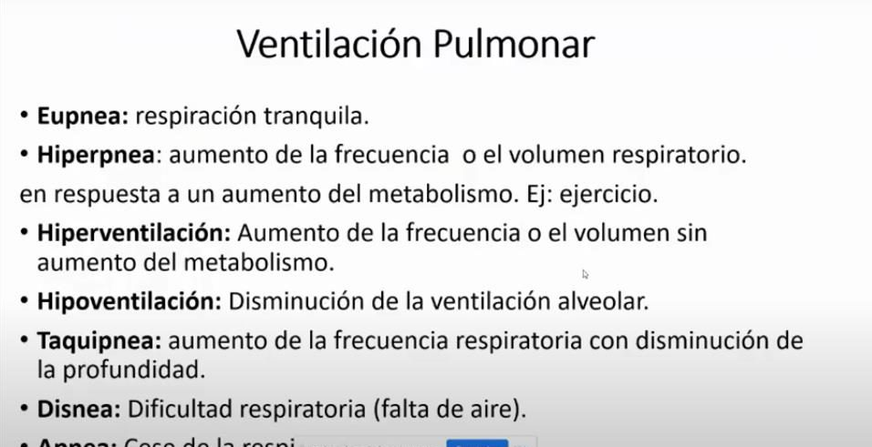
Del teórico "Fisiología Respiratoria Parte 2". La última definición viene cortada en la diapositiva original ("Apnea: cese de la respi...").
Separá los términos en dos grupos: ① Los que describen el patrón: eupnea (respiración tranquila), taquipnea ("aumento de la frecuencia respiratoria con disminución de la profundidad"), apnea (cese de la respiración) y disnea ("dificultad respiratoria (falta de aire)", que es una sensación del paciente). ② Los que comparan la ventilación con lo que el cuerpo necesita: hiperpnea (aumenta "en respuesta a un aumento del metabolismo. Ej.: ejercicio" — es adecuada), hiperventilación (aumenta "sin aumento del metabolismo" — sobra, y baja el CO₂) e hipoventilación ("disminución de la ventilación alveolar" — falta, y sube el CO₂). La diferencia entre hiperpnea e hiperventilación no es cuánto respirás, sino si eso acompaña o no a la producción de CO₂.
¿Cómo vas con la espirometría forzada, el PEF, la ventilación alveolar y el espacio muerto?
🔒 Resolvé el mini-test de abajo para desbloquear el semáforo.
📝 Mini-test 2 — Espirometría forzada y ventilación alveolar
1. Un paciente tiene CVF 4,9 L, VEF₁ 2,1 L y Tiffeneau 0,43. El patrón es:
Correcta: C. Son casi los valores del patrón b de la guía (2,09 · 4,97 · 0,42). A es el error más común: en la restricción baja la CVF y el Tiffeneau queda alto. El índice decide: menor de 0,75 = obstrucción.
2. Con VC = 500 mL, espacio muerto = 150 mL y FR = 12/min, la ventilación ALVEOLAR minuto es:
Correcta: B. (500 − 150) × 12 = 4200 mL/min. A es la ventilación minuto total (500 × 12). C es lo que se "pierde" en el espacio muerto (150 × 12).
3. El espacio muerto FISIOLÓGICO (funcional) es:
Correcta: A.B es el anatómico. C confunde espacio muerto con VR. D es lo contrario: perfundido y no ventilado es un cortocircuito (shunt), V/Q = 0; el espacio muerto es ventilado y no perfundido, V/Q = ∞.
Tocá cada tarjeta para ver la respuesta
Qué mide la espirometríatocá
La magnitud absoluta de los volúmenes y capacidades pulmonares y la rapidez con que se movilizan (flujos). Puede ser simple (estática) o forzada (dinámica).
Volumen vs capacidadtocá
Volumen: tramo único e indivisible del aire pulmonar (VC, VRI, VRE, VR). Capacidad: suma de dos o más volúmenes (CI, CV, CFR, CPT).
Espirógrafotocá
Campana con oxígeno que flota en agua, conectada a una aguja inscriptora sobre un tambor. Circuito cerrado con válvulas y cal sodada para absorber el CO₂. Registra el espirograma.
Espirómetro clásicotocá
Sistema abierto, una manguera, sin válvulas ni cal sodada ni registro gráfico. Solo registra el máximo espirado: mide la capacidad vital.
CI = VC + VRI (2-4 L). CV = VRI + VC + VRE (3-6 L). CFR = VRE + VR (2-4 L). CPT = los cuatro volúmenes (4-8 L).
Qué no mide el espirómetrotocá
El VR y las capacidades que lo contienen (CFR y CPT), porque ese aire nunca sale del pulmón. Se miden con métodos indirectos como la dilución de helio.
La línea del reposotocá
El fin de una espiración normal parte el espirograma: por encima queda la CI y por debajo la CFR. CI + CFR = CPT.
Sin cal sodada en el espirógrafotocá
El sujeto reinhala su CO₂: sube la PCO₂ arterial (hipercapnia) y los quimiorreceptores lo hacen hiperventilar, con sensación de falta de aire y cefalea.
CVF y VEF₁tocá
CVF: todo el volumen espirado en una espiración forzada tras inspiración máxima. VEF₁: lo espirado en el primer segundo. Ambos en litros.
Índice de Tiffeneautocá
VEF₁/CVF. Según la cátedra: menor de 0,75 = obstructivo; mayor de 0,75 = restrictivo o normal. (GOLD usa 0,70 para la EPOC.)
Patrón obstructivotocá
CVF normal, VEF₁ bajo, Tiffeneau < 0,75, FEP y FEF 25-75 % bajos. El aire está pero le cuesta salir. Asma, EPOC. Ejemplo: 2,09 / 4,97 / 0,42.
Patrón restrictivotocá
CVF reducida, VEF₁ proporcionalmente conservado, Tiffeneau > 0,75. Sale fácil pero hay poco. Fibrosis, deformidad torácica, neuromuscular. Ejemplo: 2,81 / 3,11 / 0,90.
FEP vs FEF 25-75 %tocá
FEP: flujo pico, al principio de la espiración; depende de las grandes vías aéreas y del esfuerzo. FEF 25-75 %: flujo medio del tramo central; depende de las pequeñas vías aéreas, no del esfuerzo.
PEF: técnicatocá
De pie, indicador a cero, medidor horizontal, inspiración máxima, labios cerrados en la boquilla, soplido explosivo. Tres intentos: se registra el mayor.
PEF: interpretacióntocá
Normal si supera el 80 % del teórico para edad, sexo y altura; mejor aún, comparar con la mejor marca personal medida en 2-3 semanas de estabilidad. Útil en asma, no en EPOC.
Ventilación minuto vs alveolartocá
Minuto: VC × FR (500 × 12 = 6 L/min). Alveolar: (VC − espacio muerto) × FR ((500 − 150) × 12 = 4,2 L/min). La alveolar es la que intercambia.
Espacio muerto anatómicotocá
Volumen de las vías de conducción, de la nariz a los bronquiolos terminales: unos 150 mL. Es fijo y no participa del intercambio.
Espacio muerto funcionaltocá
Anatómico + alveolar (alvéolos ventilados no perfundidos). En la persona sana es casi igual al anatómico; aumenta, por ejemplo, en el tromboembolismo pulmonar.
Hiperpnea vs hiperventilacióntocá
Hiperpnea: más ventilación porque aumentó el metabolismo (ejercicio): es adecuada. Hiperventilación: más ventilación sin aumento del metabolismo: baja el CO₂.
Progreso — Transporte de gases y curva de la Hb0%
📋 Contenido del sílabo que cubre esta pestaña: Transporte de gases. Curva de disociación de la hemoglobina. (El sílabo los nombra dos veces; acá están completos, junto con el intercambio alveolocapilar que los precede.)
🚪 Desde cero: la sangre es un camión, y la hemoglobina es la caja de carga
El PDF de la cátedra arranca con una idea que ordena todo: "El transporte de los gases en sangre constituye el objetivo principal de la función respiratoria... Recordemos que hay dos formas de transporte de gases en sangre: disuelto (siguiendo la ley de Henry) y unido a diferentes sustancias (por ejemplo proteínas)."
Presión parcial
La "fuerza" con la que un gas empuja para moverse. Los gases difunden de mayor a menor presión parcial: del alvéolo a la sangre (O₂) o de la sangre al alvéolo (CO₂). No importa cuánto gas haya en total, sino su presión.
Ley de Henry
La cantidad de gas disuelto en un líquido es proporcional a su presión parcial y a su solubilidad. El O₂ es poco soluble en agua; el CO₂, unas 20 veces más. Por eso el O₂ necesita un transportador y el CO₂ casi no.
Saturación
El porcentaje de los sitios de la hemoglobina ocupados por O₂. 100 % = todos los hemos cargados. Es lo que mide el oxímetro de pulso que te ponen en el dedo.
1. El intercambio en el alvéolo: de dónde salen las presiones
Figura 51 Composición de los gases: del aire atmosférico al aire espirado
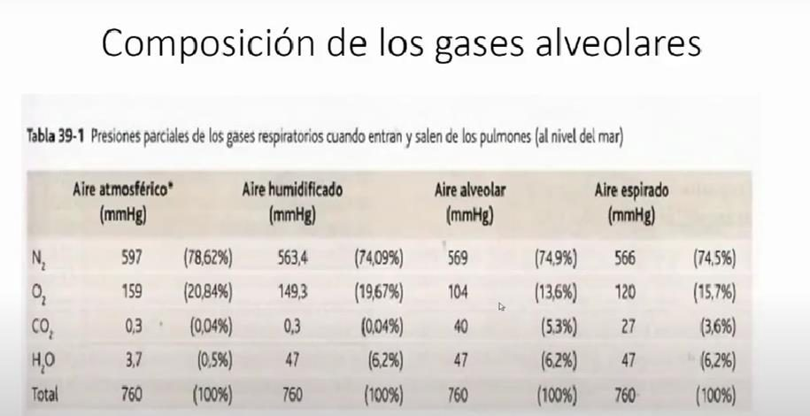
Del teórico "Fisiología Respiratoria Parte 2" (Tabla 39-1 del Guyton).
Seguí la fila del O₂ de izquierda a derecha y explicá cada caída: ①Atmosférico 159 mmHg (el 21 % de 760 que calculaste en la pestaña de Mecánica). ②Humidificado 149,3: la vía aérea le agrega vapor de agua (fila H₂O: de 3,7 a 47 mmHg), que "ocupa lugar" en los 760 y diluye a los demás. ③Alveolar 104: el aire nuevo se mezcla con la CFR (el aire viejo que quedó en el pulmón), y el O₂ se está yendo continuamente a la sangre mientras entra CO₂ (fila CO₂: de 0,3 a 40 mmHg). ④Espirado 120: es una mezcla de aire alveolar con el aire del espacio muerto, que nunca perdió O₂. Por eso está entre 149 y 104. Los dos números para memorizar: PAO₂ = 104 mmHg y PACO₂ = 40 mmHg. Todo el intercambio sale de ahí.
El intercambio es PASIVO (teórico Parte 2)
"El intercambio gaseoso entre los alvéolos y la sangre capilar pulmonar tiene lugar por DIFUSIÓN."
"La difusión de oxígeno y dióxido de carbono se produce de forma PASIVA (según sus gradientes de concentración a través de la membrana alveolocapilar)."
"Estos gradientes se mantienen gracias a la VENTILACIÓN de los alvéolos y la PERFUSIÓN de los capilares pulmonares."
Los gradientes, en números
O₂: alvéolo 104 → sangre venosa que llega 40: gradiente de 64 mmHg hacia la sangre.
CO₂: sangre venosa 45 → alvéolo 40: gradiente de solo 5 mmHg hacia el alvéolo.
¿Cómo sale tanto CO₂ con un gradiente tan chico? Porque difunde unas 20 veces mejor que el O₂. Por eso las enfermedades de la barrera afectan primero al oxígeno.
Figura 52 La membrana alveolocapilar: lo que el gas tiene que atravesar
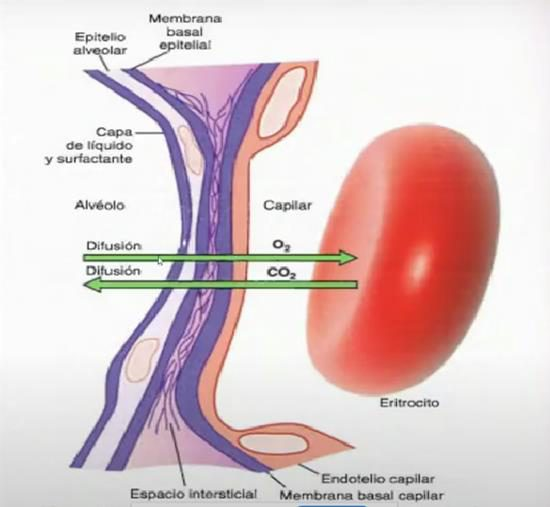
Del teórico "Fisiología Respiratoria Parte 2".Seguí la flecha del O₂ desde el alvéolo (izquierda) hasta el eritrocito (derecha) y contá las capas que cruza: ①Capa de líquido y surfactante → ②epitelio alveolar → ③membrana basal epitelial → ④espacio intersticial → ⑤membrana basal capilar → ⑥endotelio capilar. Después, el plasma y la membrana del glóbulo rojo. En la barrera más fina, las dos membranas basales están fusionadas y el espacio intersticial casi desaparece (lo viste en la histología de la Semana 17). Cualquier cosa que engrose esta barrera —líquido, fibrosis— frena la difusión.
Figura 53 De qué depende el intercambio alveolar
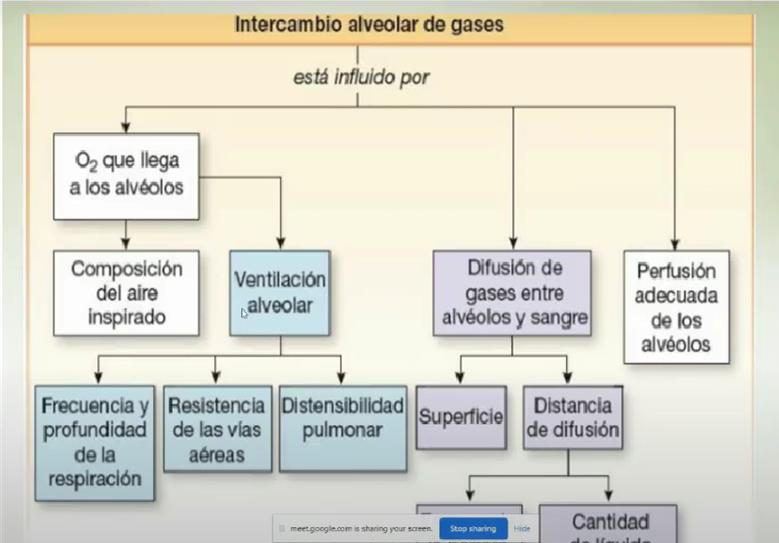
Del teórico "Fisiología Respiratoria Parte 2" (esquema de Silverthorn).
Leé el árbol de arriba abajo. El intercambio depende de tres ramas: ①O₂ que llega a los alvéolos: depende de la composición del aire (altura) y de la ventilación alveolar (frecuencia, profundidad, resistencia de las vías aéreas, distensibilidad pulmonar). ②Difusión: depende de la superficie y de la distancia (grosor de la barrera y cantidad de líquido). ③Perfusión adecuada de los alvéolos. Cada caja es una enfermedad posible: enfisema (se destruye superficie), fibrosis (se engrosa la barrera), edema pulmonar (aumenta el líquido), asma (sube la resistencia y cae la ventilación), altura (baja la PO₂ inspirada), tromboembolismo (falla la perfusión).
2. El transporte de OXÍGENO
Dos formas, muy desiguales
"El O₂ se transporta principalmente unido a la Hb (97 %), el resto lo hace disuelto en el agua del plasma y de las células." El teórico: "El O₂ disuelto representa menos del 2 % del O₂ de la sangre. El O₂ se une a la hemoglobina: Hb + O₂ = HbO₂ (oxihemoglobina)."
La cuenta de la capacidad de transporte
"Cada gramo de Hb puede [combinarse] como máximo con 1,34 mililitros de O₂." Ejemplo del teórico: adulto con Hb 15 g/100 mL → 15 × 1,34 = 20,1 mL de O₂ por cada 100 mL de sangre, cuando está saturada al 100 %.
Figura 54 Por qué el O₂ disuelto no alcanza ni en reposo
Del teórico "Fisiología Respiratoria Parte 2".Hacé la cuenta de la diapositiva: el cuerpo consume 250 mL de O₂ por minuto en reposo. La sangre, sin hemoglobina, lleva apenas 0,3 mL de O₂ disuelto cada 100 mL. ¿Cuánta sangre habría que bombear? 250 ÷ 0,003 = 83,3 L/min. El gasto cardíaco real en reposo es de unos 5 L/min. Sin hemoglobina harían falta 16 corazones. La hemoglobina multiplica unas 70 veces la capacidad de la sangre para llevar O₂ (20,1 contra 0,3 mL/100 mL).
¿Por qué la curva de la hemoglobina tiene forma de S y no de recta? El PDF lo explica: "La primera molécula de O₂ que interacciona con la desoxihemoglobina se une débilmente; sin embargo, esta unión conduce a unos cambios conformacionales que modifican las unidades adyacentes haciendo más fácil la unión de las moléculas de O₂ adicionales." Se llama cooperatividad: la hemoglobina tiene 4 subunidades, y cada O₂ que entra le "abre la puerta" al siguiente. Por eso al principio (PO₂ baja) cuesta cargar, después carga muy rápido, y al final (cuando ya tiene 3 o 4) la curva se aplana.
La curva de disociación de la hemoglobina
"Se conoce como curva de disociación de la hemoglobina a la curva sigmoidea en forma de 'S' que surge al representar el porcentaje de saturación de O₂ de la hemoglobina en función de la presión parcial de O₂."
Figura 55 La curva de disociación de la oxihemoglobina
Del teórico "Fisiología Respiratoria Parte 2" (curva del Guyton).
Tiene dos ejes verticales: a la izquierda la saturación (%), a la derecha el volumen de O₂ (mL por 100 mL de sangre). Son la misma información: 100 % = unos 20 mL. ① Buscá la marca "sangre oxigenada que sale de los pulmones": PO₂ ~100 mmHg, saturación ~97 %. Está en la parte plana de la curva. ② Buscá "sangre reducida que vuelve desde los tejidos": PO₂ 40 mmHg, saturación ~75 %. Está en la parte empinada. ③ La diferencia entre las dos (~22 % o unos 5 mL/100 mL) es lo que se entregó a los tejidos. Y la gran lección de la forma: arriba la curva es plana — aunque la PO₂ alveolar baje de 100 a 70 mmHg, la sangre sigue casi saturada (seguro de carga). Abajo es empinada — una pequeña caída de PO₂ en el tejido libera mucho O₂ (entrega fácil).
⚙️ Cuatro números de la curva que se preguntan siempre (PDF "Transporte de Gases")
P50 ≈ 27 mmHg:"la presión parcial de O₂ necesaria para conseguir una saturación de la Hb del 50 %... Cuanto más alta sea la p50, menor es la afinidad de la Hb por el O₂."
PO₂ 100 mmHg → ~97-98 %: la sangre arterial normal.
PO₂ 40 mmHg → ~75 %: la sangre venosa en reposo. "Esto quiere decir que sólo el 25 % del O₂ de la sangre se transfiere a los tejidos... en condiciones normales de reposo aún tenemos una gran reserva de O₂ en la sangre."
Por debajo de 40 mmHg:"la curva cae rápidamente. Esto implica que un pequeño cambio en la PO₂ por debajo de 40 mmHg puede tener efectos graves en la saturación." Es la zona donde el ejercicio saca todo el O₂ que necesita.
Cuidado con la definición de hipoxia del PDF. Dice "cuando hay una saturación de O₂ por debajo del 75 % (40 mmHg) decimos que estamos frente a una condición de hipoxia". Tomalo como una forma de marcar dónde empieza la zona peligrosa de la curva, no como un valor de corte clínico: en la práctica, una saturación arterial por debajo de 90-92 % (PaO₂ menor de 60 mmHg) ya es hipoxemia significativa, y 75 % es la saturación normal de la sangre venosa. Y distinguí las palabras: hipoxemia = poco O₂ en la sangre; hipoxia = poco O₂ en los tejidos.
La cianosis. El PDF la define: "la coloración azulada de la piel y de las mucosas, debido a una mayor cantidad de desoxihemoglobina en los vasos sanguíneos de pequeño calibre." Hay dos tipos: la central, con "desaturación de la sangre arterial... están afectadas tanto las mucosas como la piel" (enfermedad pulmonar, cardiopatía con cortocircuito); y la periférica, "por disminución de la velocidad del flujo de la sangre... con saturación normal" (frío, shock, vasoconstricción), donde "las mucosas de la cavidad bucal parecen no tener cianosis". Truco semiológico: mirá la lengua. Si está azul, es central.
¿Cómo vas con el intercambio alveolar, el transporte de O₂ y la curva de la hemoglobina?
🔒 Resolvé el mini-test de abajo para desbloquear el semáforo.
📝 Mini-test 1 — Intercambio y transporte de O₂
1. La PO₂ alveolar (104 mmHg) es menor que la del aire atmosférico (159 mmHg) porque:
Correcta: D. Son los tres pasos que se leen en la tabla: 159 → 149,3 (humidificación) → 104 (mezcla e intercambio). El nitrógeno no se absorbe: es un gas inerte que se mantiene en equilibrio.
2. Un adulto con 15 g/dL de hemoglobina saturada al 100 % transporta unido a la Hb:
Correcta: A.B es el O₂ disuelto. C es la capacidad de un gramo de Hb. D es el consumo de O₂ por minuto de todo el cuerpo. Consecuencia: en una anemia con 7,5 g/dL, la capacidad cae a la mitad aunque la saturación y la PaO₂ sean normales.
3. La P50 de la hemoglobina es:
Correcta: C. La P50 es una presión, no una saturación (A). Sirve para medir desplazamientos: si la curva se corre a la derecha, necesitás más PO₂ para llegar al 50 %, así que la P50 sube y la afinidad baja.
3. Los desplazamientos de la curva: Bohr, DPG, temperatura y HbF
A la DERECHA (↓ afinidad, ↑ P50)
1. Acidosis ("pH 7,2: la curva se desplaza hacia la derecha en aproximadamente un 15 %"). 2. Aumento de 2,3-DPG.3. Efecto Bohr (↑ CO₂). 4. Aumento de temperatura (fiebre) y sulfohemoglobina.
Resultado: la Hb suelta más O₂. Pasa en el tejido activo.
A la IZQUIERDA (↑ afinidad, ↓ P50)
1. Alcalosis (pH 7,6). 2. Hemoglobina fetal.3. Efecto Haldane (en el pulmón). 4. Monóxido de carbono (carboxihemoglobina) y metahemoglobina. Y la hipotermia.
Resultado: la Hb agarra más O₂. Pasa en el pulmón.
Regla mnemotécnica para la derecha: "CADET, a la derecha" — CO₂, Acido (H⁺), DPG, Ejercicio, Temperatura. Todo lo que pasa en un músculo trabajando. El PDF lo llama "una estrategia ingeniosa: la disponibilidad del O₂ aumenta donde sea necesario y cuando sea necesario".
Figura 56 Factores que modifican la afinidad de la hemoglobina por el O₂
Del teórico "Fisiología Respiratoria Parte 2".① La curva fucsia del medio es la normal. El rectángulo rosa marca su P50 (la PO₂ donde corta el 50 %). ② La curva de la izquierda (pH 7,6) tiene al lado las flechas "↓H⁺, ↓DPG, ↓T, ↓PCO₂". ③ La de la derecha (pH 7,2) tiene "↑H⁺, ↑DPG, ↑T, ↑PCO₂". Ejercicio: trazá una línea horizontal en el 50 % y mirá dónde corta cada curva. La de la derecha corta más lejos: P50 mayor, afinidad menor. Y trazá una vertical en 40 mmHg: la curva de la derecha está más abajo, o sea, a esa PO₂ la Hb ya soltó más O₂.
Figura 57 El efecto de cada parámetro por separado: pH, temperatura y PCO₂
Del teórico "Fisiología Respiratoria Parte 2":"Efectos de cada uno de los parámetros sobre la disociación de la Hb con el O₂."Mirá los tres gráficos con la misma pregunta: ¿hacia dónde va la curva cuando el factor sube? (a) pH: de 7,6 a 7,2 → curva a la derecha. (b) Temperatura: de 20 °C a 43 °C → a la derecha. (c) PCO₂: de 20 a 80 mmHg → a la derecha. Siempre el mismo sentido: todo lo que "huele" a metabolismo intenso corre la curva a la derecha.
El EFECTO BOHR (PDF)
"Es una propiedad de la hemoglobina descrita por Christian Bohr en 1904, que establece que a menor pH la hemoglobina se unirá al oxígeno con menor afinidad. Cuando la sangre atraviesa los tejidos, el CO₂ difunde desde las células tisulares hacia la sangre. Esto aumenta la PCO₂ sanguínea, lo que a su vez eleva la concentración sanguínea del H₂CO₃ (ácido carbónico) y de H⁺. Estos efectos desplazan la curva de disociación oxígeno-hemoglobina hacia la derecha y hacia abajo, haciendo que el O₂ se disocie más rápidamente."
El 2,3-DPG y la altura (PDF)
"El DPG es un polianión producido en la cadena metabólica de la glucólisis... en el eritrocito abunda porque se une a la hemoglobina... Si un adulto sano se traslada rápidamente desde el nivel del mar a un lugar de elevada altitud donde la pO₂ es menor, la liberación de O₂ a los tejidos se reduce. Después de unas horas la concentración de DPG en sangre aumenta, disminuyendo la afinidad de la Hb por el O₂ y liberando la cantidad habitual de O₂ a los tejidos. La situación se invierte cuando la persona vuelve al nivel del mar."
Figura 58 Efecto del 2,3-DPG
Del teórico "Fisiología Respiratoria Parte 2".Tres curvas: sin DPG (izquierda, casi una hipérbola: la Hb no suelta nada), DPG normal y DPG agregado (derecha). Sin DPG la hemoglobina sería casi inútil para entregar O₂: lo agarraría y no lo largaría. Por eso la sangre de banco vieja, que perdió su DPG, oxigena mal los tejidos las primeras horas después de transfundida.
Figura 59 Hemoglobina fetal: curva a la izquierda
Del teórico "Fisiología Respiratoria Parte 2". HbA: 2 cadenas α (141 aa) y 2 β (146 aa). HbF: 2 α y 2 γ, "> afinidad O₂".
Compará las dos curvas a una misma PO₂ baja (digamos 30 mmHg): la HbF (celeste, izquierda) está mucho más saturada que la HbA (negra). Por eso el feto puede "robarle" O₂ a la sangre materna en la placenta. El PDF da el mecanismo: "la Hb fetal se une al DPG con menos afinidad que la hemoglobina del adulto y por tanto la HbF fija más oxígeno".
Dos erratas del material sobre Bohr y Haldane
① El teórico Parte 2 dice: "En medios con pH alto, como en capilares sistémicos, se favorecerá la liberación de O₂". Es al revés: en los capilares sistémicos el pH es BAJO (hay más CO₂ y H⁺), y por eso se libera O₂. La propia frase anterior del teórico lo confirma: "Esto pasará cuando hay muchos protones en el medio".
② El PDF de transporte dice que el efecto Haldane"desplaza la curva a la izquierda aumentando la afinidad por el O₂ hasta 500 veces". Tomá esa cifra con pinzas: no tiene respaldo. El efecto Haldane es, sobre todo, una propiedad del transporte de CO₂ ("la desoxigenación de la sangre incrementa la capacidad de la Hb para transportar CO₂", como define el mismo PDF). El corrimiento a la izquierda en el pulmón es, en rigor, el efecto Bohr en sentido inverso (sale el CO₂, sube el pH). Estrategia: Bohr = el CO₂ y el H⁺ modifican la unión del O₂; Haldane = el O₂ modifica la unión del CO₂. Son dos caras del mismo fenómeno.
El monóxido de carbono: el caso de Pedro (caso 1 del PDF). Pedro durmió la siesta con una estufa a gas y las ventanas cerradas; lo encuentran inconsciente. Gasometría: PaO₂ 95 mmHg, PaCO₂ 40, hematocrito 45 %. ¿Están alterados? No — y esa es la trampa. El CO tiene una afinidad por la Hb "hasta 300 veces mayor que el oxígeno" (según el PDF; otros textos dicen 200-250): forma carboxihemoglobina, ocupa los sitios del O₂ y además corre la curva a la izquierda, así que la poca HbO₂ que queda no suelta su O₂. La PaO₂ es normal porque mide el O₂ disuelto, que no cambió. ¿Hiperventila por quimiorreceptores? No: los quimiorreceptores periféricos sensan la PaO₂, no el contenido. ¿Tratamiento? Sacarlo del ambiente y darle O₂ al 100 % (o en cámara hiperbárica), que desplaza al CO de la Hb. Y el oxímetro de pulso común engaña: lee la carboxihemoglobina como si fuera oxihemoglobina. Normal: menos de 2,3 % de COHb; hasta 9 % en fumadores.
La hemoglobina Kansas: el caso 3 del PDF. Un recién nacido de término, con pulmones expandidos, satura 74 %. Tiene una Hb con menor afinidad por el O₂. ① La curva está desviada a la DERECHA. ② Piel y mucosas cianóticas (hay mucha desoxihemoglobina). ③ No tiene sentido dar surfactante ni corticoides: los pulmones están maduros y expandidos; el problema no es el alvéolo sino la proteína. ④ El O₂ suplementario ayuda poco: sube la PaO₂, pero la Hb igual se satura mal. Lo interesante: a pesar de la cianosis, estos chicos suelen oxigenar bien sus tejidos, porque su Hb entrega el O₂ con facilidad.
4. El transporte de CO₂
DISUELTO (~7-10 %)
"El CO₂ disuelto, al igual que el O₂, obedece la ley de Henry, pero el CO₂ es unas 20 veces más soluble que el O₂... cerca del 10 % del CO₂ que pasa al pulmón desde la sangre se halla en su forma disuelta." (El esquema del teórico dice 7 %.)
BICARBONATO (~70 %)
CO₂ + H₂O ⇄ H₂CO₃ ⇄ H⁺ + HCO₃⁻. "La primera reacción es muy lenta en el plasma, pero muy rápida dentro del glóbulo rojo porque este contiene anhidrasa carbónica."
CARBAMÍNICOS (~23 %)
"Se forman al combinarse el CO₂ con los grupos amino terminales de las proteínas sanguíneas. La proteína más importante es la globina... y se forma carbaminohemoglobina." Sin enzima.
Figura 60 El CO₂ en el glóbulo rojo: del tejido al alvéolo
Del teórico "Fisiología Respiratoria Parte 2" (esquema de Silverthorn).
Mirá primero el glóbulo rojo de arriba (en el tejido) y seguí los números: ① El CO₂ sale de la célula. ② Una parte queda disuelta en el plasma (7 %). ③ Otra se une a la Hb (HbCO₂, 23 %). ④ La mayor parte se combina con agua gracias a la anhidrasa carbónica (AC) → H⁺ + HCO₃⁻. El H⁺ se une a la Hb (HbH). ⑤ El HCO₃⁻ sale al plasma (70 %) a cambio de Cl⁻.
Ahora el glóbulo rojo de abajo (en el pulmón): todo al revés. El HCO₃⁻ vuelve a entrar, se rearma el CO₂ y sale al alvéolo. Fijate en el intercambio HCO₃⁻/Cl⁻: es el desplazamiento de cloruro.
¿Por qué entra Cl⁻ al glóbulo rojo cuando sale el bicarbonato? El PDF lo explica: "Cuando la concentración de estos iones asciende dentro del glóbulo rojo, el HCO₃⁻ difunde hacia el exterior pero el H⁺ no puede hacerlo con facilidad porque la membrana eritrocítica es relativamente impermeable a los cationes. Por lo tanto, para que se mantenga la electroneutralidad, se difunden iones de cloro (Cl⁻) hacia el interior del glóbulo rojo... en el llamado desplazamiento de cloruro." Y un detalle que se pregunta: como entran partículas, "aumenta el contenido osmolar del glóbulo rojo... entra agua en la célula y aumenta su volumen": los glóbulos rojos venosos son un poco más grandes, y se achican al pasar por el pulmón.
🔀 Ordená lo que le pasa al CO₂ en un capilar de un TEJIDO
Arrastrá para ordenar del 1 al 6.
⚗️ La anhidrasa carbónica cataliza CO₂ + H₂O → H₂CO₃
🏭 La célula produce CO₂ en sus oxidaciones y lo libera por difusión
🔄 El HCO₃⁻ sale al plasma y entra Cl⁻ (desplazamiento de cloruro)
🔴 El CO₂ entra al glóbulo rojo
🫁 La sangre venosa lleva el HCO₃⁻ al pulmón, donde todo se invierte
➗ El H₂CO₃ se disocia en H⁺ (que se une a la Hb reducida) y HCO₃⁻
El EFECTO HALDANE (PDF)
"La desoxigenación de la sangre incrementa la capacidad de la Hb para transportar CO₂. A la inversa, la sangre oxigenada tiene una capacidad reducida para transportar CO₂." ¿Por qué? Porque "la Hb reducida es menos ácida que la forma oxigenada": capta más H⁺ (lo que tira de la reacción hacia más bicarbonato) y forma más carbaminohemoglobina. Ecuación: H⁺ + HbO₂ ⇄ H⁺Hb + O₂. Así, en el tejido, soltar O₂ ayuda a cargar CO₂; y en el pulmón, cargar O₂ ayuda a soltar CO₂. Bohr y Haldane trabajan en equipo.
Figura 61 La curva de disociación del CO₂: casi una recta
Del PDF "Transporte de Gases" (curva de disociación del CO₂).
① Compará la forma con la del O₂: esta es casi recta. "La curva de disociación del CO₂ es mucho más lineal que la curva de disociación del O₂." ② Hay dos curvas: la punteada (sangre venosa, PO₂ 40) está más arriba que la continua (sangre arterial, PO₂ 100). A la misma PCO₂, la sangre desoxigenada lleva más CO₂: eso es el efecto Haldane dibujado. ③ Seguí el camino real de la sangre: del punto A (venosa, en la curva de arriba) al punto B (arterial, en la de abajo). Fijate cuánto baja el contenido con un cambio de PCO₂ de apenas 5 mmHg (de 45 a 40). Del PDF: "A diferencia de la gran variación de la PO₂ arterial y venosa (60 mmHg), la PCO₂ arterial y venosa tienen una pequeña variación (5 mmHg)."
La hiperventilación: el caso de Juana (caso 2 del PDF). Juana, nerviosa antes de rendir Morfofisiología, respira rápido, se marea y se desmaya. Causa: la hiperventilación "produce bajos niveles de pCO₂ casi sin afectar los niveles de pO₂ en la sangre, debido a que la Hb está ya al máximo de su saturación". Gasometría: PaCO₂ baja (hipocapnia), PaO₂ normal o algo alta, pH alto (alcalosis respiratoria). ¿Por qué se desmaya? Porque el CO₂ es vasodilatador cerebral: al caer, "se produce la vasoconstricción. Entonces el flujo de sangre al cerebro disminuye", y además desaparece "el estímulo más importante que mantiene la respiración". ¿Cómo evitarlo?"Se lo hace respirar en una bolsa de papel, así el CO₂ regresa a los pulmones" — o, mejor aún, se la calma y se le enseña a respirar lento. (Hoy la bolsa se usa con precaución: si la causa no es ansiedad sino, por ejemplo, un asma, reinhalar CO₂ puede empeorar al paciente.)
¿Cómo vas con los desplazamientos de la curva y el transporte de CO₂?
🔒 Resolvé el mini-test de abajo para desbloquear el semáforo.
📝 Mini-test 2 — Desplazamientos de la curva y transporte de CO₂
1. ¿Cuál de estos factores desplaza la curva de disociación de la Hb hacia la IZQUIERDA?
Correcta: B. La HbF une con menos afinidad el DPG y por eso fija más O₂. A, C y D desplazan a la derecha (CADET). A la izquierda: alcalosis, HbF, hipotermia, CO y metahemoglobina.
2. La mayor parte del CO₂ se transporta en la sangre como:
Correcta: D.A es solo el 7-10 %. B tiene un error: la carbaminohemoglobina se forma en los grupos amino de la globina, no en el hierro (por eso no compite con el O₂). C es la unión con el monóxido de carbono.
3. El efecto HALDANE establece que:
Correcta: A.B es el efecto Bohr. D es el desplazamiento de cloruro. Bohr: el CO₂ y el H⁺ cambian la unión del O₂. Haldane: el O₂ cambia la unión del CO₂.
Tocá cada tarjeta para ver la respuesta
Dos formas de transportar un gastocá
Disuelto, según la ley de Henry (proporcional a la presión parcial y la solubilidad), y unido a sustancias como proteínas (la hemoglobina).
PO₂ del aire: de la atmósfera al alvéolotocá
Atmosférico 159 → humidificado 149,3 (el vapor de agua ocupa 47 mmHg) → alveolar 104 (mezcla con la CFR e intercambio) → espirado 120 (mezcla con el espacio muerto).
Gradientes alveolocapilarestocá
O₂: 104 en el alvéolo contra 40 en la sangre venosa (64 mmHg). CO₂: 45 en la sangre venosa contra 40 en el alvéolo (5 mmHg), compensado porque difunde unas 20 veces mejor.
De qué depende el intercambiotocá
Del O₂ que llega al alvéolo (composición del aire y ventilación alveolar), de la difusión (superficie y distancia) y de la perfusión adecuada de los alvéolos.
O₂ disuelto vs unidotocá
Unido a la Hb: 97-98 %. Disuelto: menos del 2 % (0,3 mL/100 mL). Solo con O₂ disuelto haría falta un gasto cardíaco de 83,3 L/min.
Capacidad de transporte de O₂tocá
1,34 mL de O₂ por gramo de Hb. Con 15 g/100 mL: 15 × 1,34 = 20,1 mL de O₂ por 100 mL de sangre saturada al 100 %.
Por qué la curva es sigmoideatocá
Cooperatividad: la primera molécula de O₂ se une débilmente pero cambia la conformación de las subunidades vecinas y facilita la unión de las siguientes.
Puntos clave de la curvatocá
PO₂ 100 mmHg: ~97 % (arterial). PO₂ 40 mmHg: ~75 % (venosa). P50: ~27 mmHg. En reposo solo se entrega el 25 % del O₂: queda una gran reserva.
Parte plana y parte empinadatocá
Plana arriba: aunque baje la PO₂ alveolar, la sangre sigue casi saturada (seguro de carga). Empinada abajo: pequeñas caídas de PO₂ tisular liberan mucho O₂ (entrega fácil).
Curva a la derechatocá
CADET: CO₂, ácido (H⁺), 2,3-DPG, ejercicio, temperatura. Baja la afinidad, sube la P50, la Hb suelta más O₂. Pasa en el tejido activo.
Curva a la izquierdatocá
Alcalosis, hemoglobina fetal, hipotermia, monóxido de carbono y metahemoglobina. Sube la afinidad, baja la P50, la Hb agarra más y suelta menos.
Efecto Bohrtocá
A menor pH (más CO₂ y H⁺), la Hb une el O₂ con menor afinidad: la curva se desplaza a la derecha y se libera más O₂ en los tejidos. Descripto por Christian Bohr en 1904.
2,3-DPG y alturatocá
Polianión de la glucólisis abundante en el eritrocito. En la altura aumenta en horas, baja la afinidad y restablece la entrega de O₂. Se revierte al volver al nivel del mar.
Hemoglobina fetaltocá
2 cadenas α y 2 γ; une menos DPG, así que tiene mayor afinidad por el O₂ (curva a la izquierda). Permite captar O₂ de la sangre materna. En el adulto es el 1 % de la Hb.
Monóxido de carbonotocá
Afinidad por la Hb unas 200-300 veces mayor que el O₂: forma carboxihemoglobina y corre la curva a la izquierda. La PaO₂ es normal y no hay hiperventilación. Tratamiento: O₂ al 100 %.
Cianosis central vs periféricatocá
Central: desaturación arterial, afecta piel y mucosas (lengua azul). Periférica: flujo lento con extracción aumentada y saturación arterial normal, respeta las mucosas.
Tres formas de transportar CO₂tocá
Bicarbonato (~70 %), carbaminohemoglobina (~23 %, en los grupos amino de la globina) y disuelto (~7-10 %).
Desplazamiento de clorurotocá
El HCO₃⁻ formado en el glóbulo rojo sale al plasma; como el H⁺ no puede salir, entra Cl⁻ para mantener la electroneutralidad. Los glóbulos rojos venosos se hinchan un poco.
Efecto Haldanetocá
La sangre desoxigenada transporta más CO₂ que la oxigenada, porque la Hb reducida es menos ácida: capta más H⁺ y forma más carbaminohemoglobina. H⁺ + HbO₂ ⇄ H⁺Hb + O₂.
Hiperventilación por ansiedadtocá
Baja la PaCO₂ (la PaO₂ casi no cambia), sube el pH (alcalosis respiratoria), el cerebro se vasocontrae y cae su flujo: mareo y desmayo. Se corrige reteniendo CO₂.
Progreso — Relación V/Q y regulación0%
📋 Contenido del sílabo que cubre esta pestaña: Relación entre ventilación y perfusión (V/Q). Regulación de la respiración.
🚪 Desde cero: no alcanza con que llegue aire, ni con que llegue sangre — tienen que llegar AL MISMO LUGAR
Imaginá un restaurante con mozos (el aire) y clientes (la sangre). Si ponés todos los mozos en un salón vacío y todos los clientes en otro salón sin mozos, nadie come, aunque haya mozos y clientes de sobra. El pulmón tiene el mismo problema: el intercambio solo ocurre donde coinciden ventilación y perfusión.
La relación V/Q
El PDF de la cátedra la define por sus dos términos: "Ventilación pulmonar (V): es el aire que ingresa al pulmón y depende de la intermitencia de los movimientos respiratorios. Perfusión pulmonar (Q): está dada por la sangre que llega por la arteria pulmonar y depende de las variaciones entre sístole y diástole." V/Q es el cociente entre las dos.
La regulación
Respirás unas 20.000 veces por día sin pensarlo, y sin embargo podés contener la respiración, hablar o cantar. Hay un generador automático en el tronco encefálico que se ajusta con sensores (sobre todo del CO₂) y que la corteza puede interrumpir un rato. Es un termostato: el sensor mide, el centro compara, los músculos corrigen.
1. La relación ventilación/perfusión
El valor normal (PDF "Transporte de Gases")
"En circunstancias normales la ventilación alveolar es de alrededor de 4 a 6 L/min, y el flujo sanguíneo pulmonar (que es igual al gasto cardíaco) tiene un rango similar, de modo que la V/Q está dentro del rango de 0,8 a 1,2."
"Si bien la ventilación y la perfusión pulmonar son procesos discontinuos, la cantidad y composición del gas alveolar contenido en la CRF amortigua estas oscilaciones y mantiene constante la transferencia de gases."
El espectro: de 0 a infinito
"El índice V/Q puede variar desde cero (unidades perfundidas pero no ventiladas), hacia el infinito (unidades ventiladas pero no perfundidas, o espacio muerto), y es el principal determinante de la composición final de O₂ y CO₂ en el capilar pulmonar."
Figura 62 Shunt, unidad normal y espacio muerto
Del PDF "Transporte de Gases".La sangre entra por la izquierda (venosa mixta, azul) y sale por la derecha (arterial, roja). Pasa por tres unidades alveolares: ① Izquierda: el punto negro tapa la vía aérea. Llega sangre pero no aire → la sangre pasa sin oxigenarse. Es un SHUNT (cortocircuito): V/Q = 0. ② Centro: llega aire y llega sangre. Es la unidad normal: V/Q = 0,8. ③ Derecha: el punto negro tapa el vaso. Llega aire pero no sangre → ese aire no sirve. Es ESPACIO MUERTO: V/Q = ∞. Todo el pulmón real es una mezcla de millones de unidades con valores entre estos extremos. Enfermarse es correr la mezcla hacia un lado o hacia el otro.
Errata del PDF "Transporte de Gases". Al describir los tres patrones dice: "Áreas en las que la perfusión y la ventilación son homogéneamente proporcionales, con cociente V/Q entre 3 y 10." Eso contradice al mismo PDF dos páginas antes ("la V/Q está dentro del rango de 0,8 a 1,2") y a su propia figura ("Normal V/Q = 0,8"). El valor normal es ≈ 0,8 (entre 0,8 y 1,2). Un V/Q de 3 es el de los vértices en bipedestación: ventilados de más en relación con su poca sangre.
El cortocircuito fisiológico (PDF)
"En condiciones fisiológicas existe un pequeño cortocircuito que representa el 1 % del gasto cardíaco: las venas bronquiales que drenan en las venas pulmonares, y las venas de Tebesio (coronarias), que drenan en el VI. Se trata de sangre venosa mixta que drena directamente en el circuito izquierdo sin oxigenarse en el pulmón."Por eso la PO₂ arterial (~95-100) es unos mmHg más baja que la alveolar (104), aun en una persona sana.
Las zonas de West: la gravedad desordena el pulmón
"En bipedestación, la distribución de la ventilación y la perfusión no son homogéneas (zonas de West). Por efecto gravitacional, en los vértices la ventilación es mayor que la perfusión y lo contrario ocurre en las bases. En las zonas intermedias ambos son similares."
¿Por qué? Porque la sangre pesa. Parado, la presión en la arteria pulmonar (que es baja, unos 25/10 mmHg) apenas alcanza para subir la sangre hasta los vértices: las bases reciben mucha más sangre. El aire también se reparte desigual, pero menos: los alvéolos del vértice ya están bastante inflados en reposo (por el peso del pulmón que "cuelga"), así que ganan poco volumen en cada inspiración; los de la base están más comprimidos y se expanden más. Resultado neto: la perfusión cambia más que la ventilación de arriba abajo, y el V/Q pasa de ~3 en el vértice a ~0,6 en la base. Acostado, las diferencias casi desaparecen.
Por qué la tuberculosis del adulto elige el vértice. Como el vértice tiene V/Q alto, su aire alveolar tiene la PO₂ más alta del pulmón. El bacilo de la tuberculosis es muy aeróbico: por eso la reactivación de la TBC y sus cavernas aparecen típicamente en los segmentos apicales y posteriores de los lóbulos superiores (los segmentos 1 y 2 de la pestaña de Pulmones).
V/Q bajo vs V/Q alto: no son simétricos
V/Q DISMINUIDO (tiende al shunt)
"Puede contribuir al desarrollo de hipercapnia e hipoxemia... Siempre se producirá hipoxemia, con o sin hipercapnia." Causas: "baja ventilación, debido a los cambios estructurales de las vías aéreas o por broncoespasmo (como en la broncopatía crónica obstructiva, asma o en la enfermedad intersticial)" o "sobreperfusión con ventilación normal... después de grandes embolias pulmonares, donde el flujo es derivado a las zonas indemnes".
V/Q AUMENTADO (tiende al espacio muerto)
"Desperdicia ventilación, pero tiene escasos efectos adversos en los gases arteriales." Causas: "obstrucción de vasos pulmonares... La causa más común de V/Q aumentada es el enfisema, en el cual la reducción de la perfusión causada por la destrucción de las paredes de los capilares pulmonares es a menudo mayor que la disminución de la ventilación." También en la ventilación mecánica con presiones altas.
¿Por qué un V/Q bajo arruina la oxigenación y uno alto casi no la afecta? Por la forma de la curva de la hemoglobina (pestaña anterior). La sangre que pasa por alvéolos bien ventilados sale casi saturada (~97-98 %) y no puede cargar más: está en la parte plana. Así que no puede "compensar" a la sangre que pasó por alvéolos mal ventilados y salió desaturada. Al mezclarse, la desaturada baja el promedio. En cambio, un exceso de ventilación en otra zona no agrega casi nada de O₂. Con el CO₂ es distinto: su curva es recta, así que las zonas bien ventiladas sí pueden eliminar el CO₂ de más. Por eso muchos pacientes con V/Q bajo tienen hipoxemia con CO₂ normal.
2. El control local: cómo el pulmón corrige solo su V/Q
Figura 63 La vasoconstricción hipóxica desvía la sangre hacia los alvéolos ventilados
Del teórico "Fisiología Respiratoria Parte 2": "(c) Los mecanismos de control locales tratan de mantener la correspondencia entre ventilación y perfusión."Mirá los dos alvéolos: el de la derecha está poco ventilado. Seguí el texto: "La disminución de la PO₂ en el tejido que rodea el alvéolo poco ventilado produce la constricción de las arteriolas, lo que dirige la sangre a alvéolos mejor ventilados."
Abajo a la izquierda, la flecha "flujo de sangre desviado a los alvéolos mejor ventilados". Es un ajuste fino que no necesita al cerebro: cada alvéolo "cierra la canilla" de su propia sangre si no le llega aire. Así, un shunt que sería grave se achica.
El reflejo de vasoconstricción hipóxica (PDF)
"Una disminución en la V/Q produce hipoxia alveolar, resultando una vasoconstricción en la perfusión arteriolar. Esto tiene un efecto beneficioso en el intercambio gaseoso. No se conoce con exactitud el mecanismo por el cual la hipoxia alveolar es percibida, y se produce como respuesta la vasoconstricción, pero puede involucrar la liberación de uno o más mensajes humorales."
Figura 64 Control local de arteriolas y bronquiolos por el O₂ y el CO₂
Del teórico "Fisiología Respiratoria Parte 2" (tabla de Silverthorn). Los efectos entre paréntesis son los más débiles.
Leé la tabla por filas y buscá las dos que importan para el V/Q: ①"PO₂ disminuye" → arterias pulmonares: se contraen (sin paréntesis: es el efecto fuerte). Es la vasoconstricción hipóxica. Y en la misma fila: arterias sistémicas: se dilatan. ¡Al revés! ②"PCO₂ aumenta" → bronquiolos: se dilatan. Si un alvéolo recibe mucha sangre y poco aire, su CO₂ sube y su bronquiolo se abre para dejar entrar más aire. La lógica de la inversión: en un músculo, poco O₂ significa "necesito más sangre" (vasodilatación); en el pulmón, poco O₂ significa "este alvéolo no sirve, mandá la sangre a otro lado" (vasoconstricción). Mismo estímulo, respuesta opuesta, mismo objetivo: que la sangre vaya donde es útil.
La altura y el edema pulmonar. En la altura, todos los alvéolos tienen poco O₂: la vasoconstricción hipóxica ya no desvía la sangre, sino que cierra arteriolas en todo el pulmón. Sube la presión de la arteria pulmonar (hipertensión pulmonar) y, en algunos andinistas, el líquido sale al alvéolo: edema pulmonar de altura. Y en la EPOC avanzada, la hipoxia crónica produce hipertensión pulmonar sostenida y el ventrículo derecho termina fallando (cor pulmonale).
Cómo se estudia la V/Q: el centellograma (PDF)
Perfusión (Q): se inyecta tecnecio unido a macroagregados de albúmina (⁹⁹ᵐTc-MAA), que crea "de manera temporal 'micro-émbolos' a nivel capilar pulmonar, ya que las partículas mayores de 10 µm quedan atrapadas... En pacientes con perfusión normal la imagen tendrá una distribución homogénea y bilateral del trazador, a diferencia de la imagen compatible con un defecto de perfusión, que mostrará una ausencia de trazador en el segmento o subsegmentos pulmonares afectados."
Ventilación (V): con un gas radiactivo como el ¹³³Xenón. "La ventilación tendría que estar conservada si el paciente no está afectado de enfermedad que afecte la vía aérea."
Aplicación: en un tromboembolismo pulmonar, un segmento aparece sin perfusión pero con ventilación normal (un "desajuste V/Q"): es espacio muerto que se ve en la imagen. Fijate que el defecto sigue la forma de un segmento broncopulmonar: la anatomía de la pestaña de Pulmones, vista en un estudio funcional.
¿Cómo vas con la relación V/Q, las zonas de West y el control local?
🔒 Resolvé el mini-test de abajo para desbloquear el semáforo.
📝 Mini-test 1 — Relación ventilación/perfusión
1. Una unidad alveolar perfundida pero NO ventilada tiene:
Correcta: A. Si V = 0, el cociente es 0. B es lo opuesto (ventilada no perfundida). D es la errata del PDF: ese rango no corresponde a una unidad normal.
2. En una persona de pie, en los VÉRTICES pulmonares:
Correcta: C."En los vértices la ventilación es mayor que la perfusión y lo contrario ocurre en las bases."A describe las bases. Consecuencia: el vértice tiene la PO₂ alveolar más alta.
3. Ante una disminución de la PO₂ alveolar, las arterias pulmonares:
Correcta: B. Es la respuesta opuesta a la de las arterias sistémicas (A). Mismo estímulo, respuesta inversa, mismo objetivo: que la sangre vaya donde sirve.
3. La regulación de la respiración: los centros
📒 Nota de honestidad: para "Regulación de la respiración", el teórico Parte 2 trae esquemas (centros, control reflejo, quimiorreceptores, actividad neuronal) con muy poco texto explicativo. Los nombres y las relaciones de esta sección salen de esas diapositivas; la explicación de cómo funciona cada parte se completó con la bibliografía estándar de fisiología (Silverthorn, que es de donde vienen las láminas, y Ganong/Guyton). Está marcado para que sepas qué es "según el teórico" (lo que está en las figuras) y qué es desarrollo.
Figura 65 Los centros respiratorios del tronco encefálico
Del teórico "Fisiología Respiratoria Parte 2" (lámina de Silverthorn, "Regulación de la respiración"). Referencias del original: GRP = grupo respiratorio de la protuberancia · GRD = grupo respiratorio dorsal · GRV = grupo respiratorio ventral · NTS = núcleo del tracto solitario.Leé el esquema de arriba abajo: ① Arriba, los centros cerebrales superiores bajan sobre el GRP, en la protuberancia. ② En el bulbo raquídeo, dos columnas: el GRD (dorsal, junto al NTS) y el GRV (ventral), que incluye el complejo pre-Bötzinger. ③ Al GRD le llegan las señales sensoriales de los nervios craneales IX y X (mecánicas y químicas) y la información de los quimiorreceptores del bulbo que controlan el CO₂. ④ Abajo, las salidas: el GRD manda "señales a los músculos inspiratorios principalmente"; el GRV, "señales a músculos espiratorios, algunos inspiratorios, faringe, laringe y lengua". La barra de la videollamada tapa parte de la leyenda en la diapositiva original.
GRD (grupo respiratorio dorsal)
En el bulbo, junto al núcleo del tracto solitario. Controla sobre todo la inspiración (manda al diafragma por el frénico) e integra la información sensorial que llega por el IX y el X.
GRV y pre-Bötzinger
En el bulbo ventral. Maneja la espiración activa y la inspiración forzada, y los músculos de la vía aérea superior. Adentro está el complejo pre-Bötzinger: neuronas con actividad espontánea que funcionan como marcapaso del ritmo respiratorio.
GRP (protuberancia)
El antiguo "centro neumotáxico". Modula el ritmo del bulbo: ajusta la duración de la inspiración y suaviza la transición entre fases. No genera el ritmo por sí solo.
Figura 66 La actividad de las neuronas inspiratorias: una rampa que se corta de golpe
Del teórico "Fisiología Respiratoria Parte 2" (lámina de Silverthorn). Texto del recuadro: "Durante la inspiración, la actividad de las neuronas inspiratorias aumenta en forma sostenida, aparentemente a través de un mecanismo de retroalimentación positiva. Al final de la inspiración, la actividad se interrumpe abruptamente y se produce la espiración a través de la recuperación elástica del tejido pulmonar."Mirá el gráfico de arriba: la descarga de las neuronas sube como una rampa (el rótulo dice "bucle de retroalimentación positiva") y cae de golpe en la flecha roja "la inspiración se interrumpe".
Abajo, el volumen: sube durante la rampa (inspiración, 2 s) y baja sin ninguna actividad neuronal (espiración pasiva, 3 s). ¿Por qué rampa y no un disparo brusco? Para que los músculos se contraigan de a poco y el pulmón se llene suavemente, no a los tirones. Y fijate que la espiración dura más que la inspiración.
4. Los sensores: quimiorreceptores y mecanorreceptores
Figura 67 El control reflejo de la respiración: de los estímulos a los músculos
Del teórico "Fisiología Respiratoria Parte 2": "Control reflejo de la respiración" (lámina de Silverthorn).
Arriba hay tres entradas (amarillas), de izquierda a derecha: ①Emociones y control voluntario → centros cerebrales superiores y sistema límbico. ②CO₂ → quimiorreceptores medulares (centrales). ③O₂ y pH → quimiorreceptores carotídeos y aórticos (periféricos) → neuronas sensitivas aferentes. Fijate que el CO₂ también manda una flecha a los periféricos.
Todo converge en las neuronas eferentes (el rombo, los centros del bulbo), que activan motoneuronas de inspiración (escalenos, ECM, intercostales externos, diafragma) o de espiración (intercostales internos, abdominales). Son los mismos músculos que viste en la pestaña de Mecánica: acá ves quién les da la orden.
Quimiorreceptores CENTRALES
En el bulbo, cerca de los centros. Responden al H⁺ del líquido extracelular cerebral, que depende de la PaCO₂. Son responsables de la mayor parte (≈ 70-80 %) de la respuesta al CO₂.
Quimiorreceptores PERIFÉRICOS
En los cuerpos carotídeos (bifurcación de la carótida; aferencia por el IX) y aórticos (cayado; aferencia por el X). Son los únicos que detectan la hipoxemia: se activan cuando la PaO₂ cae por debajo de ~60 mmHg, y también por ↑PaCO₂ y ↓pH plasmático.
Figura 68 Cómo el CO₂ estimula a los quimiorreceptores centrales
Del teórico "Fisiología Respiratoria Parte 2" (de Mezquita, "Fisiología Médica").
Arriba está el capilar cerebral con la barrera hematoencefálica. Mirá las dos flechas que salen de la sangre: ① El H⁺ tiene una flecha tachada: no atraviesa la barrera. ② El CO₂ sí la atraviesa (es liposoluble). Del otro lado se combina con agua: CO₂ + H₂O → H₂CO₃ → H⁺ + HCO₃⁻. ③ Ese H⁺ del líquido extracelular cerebral es el que estimula a los quimiorreceptores centrales, que excitan a las neuronas inspiratorias. Conclusión: el centro "ve" el CO₂ a través de su H⁺. Por eso la respiración responde tan rápido al CO₂ y poco a una acidosis metabólica aguda (cuyo H⁺ queda del lado de la sangre): esa la detectan los periféricos.
Figura 69 QRP y QRC: qué estimula a cada uno
Del teórico "Fisiología Respiratoria Parte 2". QRP = quimiorreceptores periféricos; QRC = quimiorreceptores centrales.
Compará los dos círculos de colores: el QRP tiene tres estímulos (−PaO₂, +PaCO₂, −pH); el QRC, solo dos (+PaCO₂, −pH). El O₂ está solo en el periférico. Abajo, el tercer grupo: los mecanorreceptores torácicos y pulmonares.
Figura 70 Todas las entradas sensoriales de las neuronas respiratorias
Del teórico "Fisiología Respiratoria Parte 2" (lámina de Silverthorn).
Fijate en el detalle del periférico: "PaO₂ (< 60 mmHg)". Por encima de 60 mmHg casi no responde: es el punto donde la curva de la Hb empieza a caer en picada. Y a la derecha, dos entradas más: receptores pulmonares y receptores de músculos y articulaciones. Estos últimos explican por qué la ventilación aumenta apenas empezás a moverte, antes de que cambien los gases.
¿Por qué el estímulo principal de la respiración es el CO₂ y no el O₂? Por la forma de las dos curvas. La del O₂ es plana por encima de 60 mmHg: aunque la PaO₂ baje de 100 a 70, la saturación casi no cambia, así que no tiene sentido alarmarse. La del CO₂ es una recta: cada mmHg de más es más ácido en la sangre y en el cerebro. Por eso el sistema está calibrado para mantener la PaCO₂ en 40 mmHg con mucha precisión, y el O₂ funciona como una alarma de emergencia que solo suena por debajo de 60. Es lo que explica los casos del PDF: Juana, al hiperventilar, "apaga" su principal estímulo (el CO₂); Pedro, con CO, no hiperventila porque su PaO₂ es normal.
El paciente con EPOC que "se duerme" con oxígeno. En algunos pacientes con EPOC grave, el CO₂ está crónicamente alto: los quimiorreceptores centrales se adaptan (el LCR compensa con bicarbonato) y dejan de responder. Su estímulo para respirar pasa a depender en buena parte de la hipoxemia, vía los periféricos. Si se les da O₂ en exceso, se corrige la hipoxemia, se reduce ese estímulo y además empeora el V/Q (se revierte la vasoconstricción hipóxica): el CO₂ sube todavía más y el paciente se pone somnoliento (narcosis por CO₂). Por eso a estos pacientes se les da O₂ con control, apuntando a saturaciones de 88-92 %, no de 100 %.
Los mecanorreceptores y el control voluntario
Receptores de estiramiento pulmonar (en el músculo liso de las vías aéreas): cuando el pulmón se infla mucho, envían señales por el vago que cortan la inspiración (reflejo de Hering-Breuer). En el adulto funciona sobre todo con volúmenes corrientes grandes.
Receptores irritantes de la vía aérea: desencadenan tos, estornudo y broncoconstricción.
Propioceptores de músculos y articulaciones: aumentan la ventilación al empezar el ejercicio.
Corteza cerebral: permite contener la respiración, hablar, cantar. Pero tiene un límite: cuando el CO₂ acumulado sube lo suficiente, el bulbo toma el control y la respiración se reanuda sola (el "punto de quiebre"). Por eso nadie puede suicidarse conteniendo la respiración.
¿Cómo vas con los centros respiratorios y los quimiorreceptores?
🔒 Resolvé el mini-test de abajo para desbloquear el semáforo.
📝 Mini-test 2 — Regulación de la respiración
1. Los quimiorreceptores CENTRALES son estimulados directamente por:
Correcta: D.A es el estímulo de los periféricos. B es falsa: el H⁺ plasmático no atraviesa la barrera (en la figura su flecha está tachada). C es el reflejo de Hering-Breuer.
2. ¿Por qué el paciente intoxicado con monóxido de carbono NO hiperventila, a pesar de la hipoxia tisular?
Correcta: B. Es el caso de Pedro del PDF. Lo mismo pasa en la anemia: contenido de O₂ bajo, PaO₂ normal, sin estímulo quimiorreceptor.
3. El complejo pre-Bötzinger:
Correcta: C.A describe el GRP. D es el núcleo del tracto solitario, junto al GRD. En la lámina del teórico, el pre-Bötzinger aparece señalado dentro del GRV.
Tocá cada tarjeta para ver la respuesta
V y Q: definicionestocá
V: aire que ingresa al pulmón (ventilación alveolar, 4-6 L/min). Q: sangre que llega por la arteria pulmonar (igual al gasto cardíaco, ~5 L/min).
V/Q normaltocá
Entre 0,8 y 1,2 (≈ 0,8). La CFR amortigua las oscilaciones de la ventilación y la perfusión. (El "3 a 10" del PDF es una errata.)
Shunt vs espacio muertotocá
Shunt: perfundido y no ventilado, V/Q = 0, la sangre pasa sin oxigenarse. Espacio muerto: ventilado y no perfundido, V/Q = ∞, el aire no sirve.
Cortocircuito fisiológicotocá
~1 % del gasto cardíaco: venas bronquiales que drenan en las pulmonares y venas de Tebesio que drenan en el VI. Explica que la PaO₂ sea algo menor que la alveolar.
Zonas de Westtocá
De pie, por gravedad: en los vértices V > Q (V/Q ~3), en las bases Q > V (V/Q ~0,6), en el medio similares. La perfusión varía más que la ventilación.
Por qué la TBC va al vérticetocá
El vértice tiene V/Q alto y por eso la PO₂ alveolar más alta; el bacilo tuberculoso es muy aeróbico.
V/Q disminuidotocá
Siempre hipoxemia, con o sin hipercapnia. Causas: broncoespasmo (asma, EPOC), enfermedad intersticial, sobreperfusión de zonas sanas tras una embolia.
V/Q aumentadotocá
Desperdicia ventilación con escaso efecto en los gases. Causas: enfisema (la más común), obstrucción vascular (embolia), ventilación mecánica con presiones altas.
Por qué el V/Q bajo baja la PaO₂tocá
La sangre de los alvéolos bien ventilados ya está en la parte plana de la curva y no puede cargar más O₂ para compensar a la desaturada. El CO₂, con curva recta, sí se compensa.
Vasoconstricción hipóxicatocá
La hipoxia alveolar contrae la arteriola de ese alvéolo y desvía la sangre a alvéolos mejor ventilados. Es opuesta a la respuesta sistémica (vasodilatación).
Control local de los bronquiolostocá
El aumento de la PCO₂ dilata los bronquiolos (más aire a los alvéolos sobreperfundidos); la disminución los contrae.
Centellograma V/Qtocá
Perfusión: tecnecio con macroagregados de albúmina (microémbolos en los capilares). Ventilación: xenón-133. En el TEP: defecto de perfusión con ventilación conservada.
GRDtocá
Grupo respiratorio dorsal del bulbo, junto al NTS. Controla sobre todo la inspiración e integra las aferencias de los nervios IX y X.
GRV y pre-Bötzingertocá
Grupo respiratorio ventral: espiración activa, inspiración forzada y músculos de faringe, laringe y lengua. Contiene el complejo pre-Bötzinger, marcapaso del ritmo.
GRPtocá
Grupo respiratorio de la protuberancia (antiguo neumotáxico). Modula el ritmo bulbar, ajusta la duración de la inspiración y suaviza el cambio de fase.
La rampa inspiratoriatocá
La descarga de las neuronas inspiratorias aumenta en rampa por retroalimentación positiva y se corta bruscamente; la espiración ocurre por recuperación elástica, sin actividad.
Quimiorreceptores centralestocá
En el bulbo. Responden al H⁺ del líquido extracelular cerebral, formado a partir del CO₂ que cruza la barrera hematoencefálica. Dan la mayor parte de la respuesta al CO₂.
Quimiorreceptores periféricostocá
Carotídeos (IX) y aórticos (X). Únicos que detectan la hipoxemia (PaO₂ < 60 mmHg); también responden a ↑PaCO₂ y ↓pH plasmático.
Por qué manda el CO₂tocá
La curva del CO₂ es recta: cada mmHg cambia el pH. La del O₂ es plana sobre 60 mmHg. El sistema mantiene la PaCO₂ en 40 y usa el O₂ como alarma de emergencia.
Reflejo de Hering-Breuertocá
Los receptores de estiramiento pulmonar, al inflarse mucho el pulmón, envían señales por el vago que interrumpen la inspiración.
Progreso — Tejido linfoide y timo0%
📋 Contenido del sílabo que cubre esta pestaña: Tejido linfoide: distribución. Variedades. Folículos o nódulos linfáticos. Estructura histológica de folículos primarios y secundarios. Su relación con la respuesta inmune. Órganos linfáticos capsulados y no capsulados. Timo: como órgano linfoide primario. Estructura histológica. Concepto de lobulillo tímico. Circulación sanguínea, barrera hematotímica, funciones. Concepto de órgano linfoide secundario.
🚪 Desde cero: un ejército con escuelas, cuarteles y puestos de guardia
El apunte "Sistema linfoide" define el sistema así: "está formado por grupos de células, tejidos y órganos que vigilan las superficies corporales y los compartimientos líquidos internos y reaccionan ante la presencia de sustancias potencialmente nocivas." Para ordenar todo lo que viene, pensalo como un ejército:
Las ESCUELAS
Los órganos linfoides PRIMARIOS (timo y médula ósea): ahí los linfocitos nacen o maduran y aprenden a no atacar al propio cuerpo. Todavía no vieron un enemigo.
Los CUARTELES
Los órganos linfoides SECUNDARIOS (ganglios, bazo, amígdalas, MALT): ahí los linfocitos ya formados esperan, se encuentran con el antígeno y se multiplican para combatirlo.
Los PUESTOS DE GUARDIA
El tejido linfoide difuso y los folículos sueltos en las mucosas: pequeños grupos de soldados justo debajo de las superficies por donde entran los invasores.
Tres términos que vas a usar todo el tiempo:
Antígeno (Ag): cualquier molécula que el sistema inmune puede reconocer (una proteína de un virus, por ejemplo).
Linfocito B: el que, al activarse, se convierte en plasmocito y fabrica anticuerpos. Linfocito T: el que coordina la respuesta (CD4) o mata células infectadas (CD8).
Célula presentadora de antígeno (CPA): la que "muestra" el antígeno a los linfocitos (macrófagos, células dendríticas).
1. El tejido linfoide: qué es, variedades y distribución
"El tejido linfoide es un tejido conectivo especial, en el cual los linfocitos representan la mayor parte de las células distribuidas sobre una red de fibras reticulares. Entre las otras células se encuentran macrófagos, células plasmáticas, células dendríticas." (apunte "Sistema linfoide")
Tejido linfoide DIFUSO (TLD)
"Los linfocitos se encuentran dispersos en la red de fibras reticulares. Ej.: lámina propia de mucosas digestivas." Además de linfocitos contiene "fibroblastos, plasmocitos y eosinófilos".
Tejido linfoide FOLICULAR o NODULAR
"Los linfocitos forman cúmulos densos casi esféricos, contenidos en una malla de células reticulares. Ej.: folículos linfoides solitarios en mucosa respiratoria."
Distribución (teórico "Tejido y órganos linfoides")
Tejido linfoide difuso en mucosas: "ubicado característicamente en la lámina propia de las mucosas del aparato digestivo y respiratorio".
Folículos o nódulos linfoides, encapsulados y no encapsulados.
Órganos linfoides primarios: timo y médula ósea.
Órganos linfoides secundarios: ganglios linfáticos, bazo, amígdalas, MALT y SALT.
Vasos linfáticos: "comunican el sistema con el torrente sanguíneo".
Figura 71 El sistema linfoide de lo más simple a lo más organizado
Del teórico "Tejido y órganos linfoides 2026".Los puntos rojos son linfocitos. Recorré los dibujos como una escalera de organización creciente: ①Tejido linfoide difuso: puntos sueltos, sin límite. ②Folículo linfoide: los puntos se agrupan en una bola. ③Placas de Peyer y amígdalas: muchos folículos juntos, debajo de un epitelio (las amígdalas con sus criptas). ④Ganglio, bazo y timo: órganos completos, rodeados por una cápsula (la línea que los envuelve). Esa línea es la diferencia entre no capsulados (difuso, folículos, Peyer; las amígdalas tienen una cápsula incompleta) y capsulados (ganglio, bazo, timo).
Figura 72 Tejido linfoide difuso en la lámina propia intestinal
Del teórico "Tejido y órganos linfoides 2026" ("Tejido linfoide difuso (TLD)").
A los costados, dos glándulas intestinales (GI): tubos con epitelio cilíndrico. En el medio, la lámina propia (LP), y ahí las letras T-L-D escritas en vertical.
Fijate en las células de la LP: un montón de núcleos redondos y oscuros (linfocitos), algunos con citoplasma más amplio (plasmocitos), sin formar ningún grupo con borde. Eso es "difuso". Por la presencia constante de plasmocitos en la lámina propia digestiva, el apunte dice que es "una indicación de secreción local de anticuerpos": la IgA secretora que protege la mucosa.
2. Los folículos (nódulos) linfoides: primarios y secundarios
"Estas concentraciones de linfocitos tienen un límite muy nítido pero no están encapsulados. Se reconocen dos aspectos:"
Folículo PRIMARIO
"Formados de linfocitos pequeños, forman un cúmulo esférico homogéneo y muy basófilo." Es un folículo "en reposo": todavía no vio un antígeno.
Folículo SECUNDARIO
"Presentan una zona central, teñida pálidamente en los preparados histológicos, el centro germinativo, y una zona externa de linfocitos pequeños que, como anillo, rodea al centro germinativo: la zona del manto o corona."
¿Por qué el centro germinativo se ve más pálido? Porque está lleno de linfocitos B activados que se están dividiendo (centroblastos y centrocitos): son células más grandes, con núcleos más claros y más citoplasma. Los linfocitos pequeños del manto, en cambio, tienen un núcleo compacto y casi nada de citoplasma: al estar tan apretados, se ven muy oscuros. El apunte da la clave: "El centro germinativo se desarrolla cuando un linfocito que reconoció un antígeno retorna a un nódulo primario y prolifera. El CG es la indicación morfológica de respuesta ante un Ag. Es el resultado de una serie de acontecimientos: activación y proliferación de linfocitos, diferenciación de plasmocitos y producción de anticuerpos."Un folículo secundario es la foto de una respuesta inmune en curso.
Figura 73 Folículo linfoide secundario: centro germinativo y corona
Del teórico "Tejido y órganos linfoides 2026" ("Folículo o nódulo linfoide secundario").
Mirá la diferencia de tono: el centro (centro germinativo) es más claro y rosado; alrededor, un anillo más oscuro y violeta (corona o manto). Si vieras un folículo todo oscuro y parejo, sin centro claro, sería un folículo primario. La palidez central es lo único que necesitás para decir "secundario".
Figura 74 Un folículo secundario en la pared del intestino
Del teórico "Tejido y órganos linfoides 2026":"Microfotografía de un corte de intestino coloreado con H y E. Villi: vellosidades intestinales; LN: folículo o nódulo linfoide secundario."Orientate de arriba abajo: vellosidades (villi), glándulas intestinales y, abajo, una gran masa violeta con el rótulo LN. Dentro de ella, un centro más claro: es secundario. Este es un folículo solitario, no encapsulado: fijate que no hay ninguna línea de tejido conectivo que lo rodee. Un grupo de muchos de estos en el íleon es una placa de Peyer (pestaña siguiente).
Las funciones del tejido linfoide difuso y los folículos (apunte)
"El tejido linfoide difuso y los nódulos linfáticos protegen al organismo contra los agentes patógenos y son el sitio de la respuesta inmunitaria inicial." Su importancia se ve en dos hallazgos:
"La presencia habitual de gran cantidad de plasmocitos, en especial en la lámina propia de la mucosa digestiva, que es una indicación de secreción local de anticuerpos."
"La presencia de gran cantidad de eosinófilos, en lámina propia de mucosas digestiva y respiratoria, que es indicación de inflamación crónica y reacciones de hipersensibilidad."
¿Cómo vas con el tejido linfoide y los folículos primarios y secundarios?
🔒 Resolvé el mini-test de abajo para desbloquear el semáforo.
📝 Mini-test 1 — Tejido linfoide y folículos
1. El tejido linfoide es:
Correcta: B. El sostén es la red de fibras reticulares (colágeno tipo III). Excepción importante: en el timo el armazón no son fibras reticulares sino células epiteliales reticulares (por eso el timo es "linfoepitelial").
2. El centro germinativo de un folículo secundario indica:
Correcta: D."El CG es la indicación morfológica de respuesta ante un Ag."A describe al folículo primario. B es falsa: los folículos no están encapsulados. C confunde con el timo.
3. ¿Cuál de estas estructuras es NO capsulada?
Correcta: A. Las placas de Peyer son agregados de folículos no encapsulados en la mucosa del íleon (parte del MALT). B, C y D son los tres órganos capsulados. Las amígdalas quedan en el medio: tienen una cápsula incompleta.
3. Órganos primarios y secundarios
PRIMARIOS (diferenciadores)
"Son órganos donde tiene lugar la maduración de las células madres linfocitarias a linfocitos no comprometidos inmunocompetentes (células vírgenes)."Médula ósea: linfocitos B. Timo: linfocitos T.
SECUNDARIOS (efectores)
"Son residencia de diversas células linfoides (LT, LB y células dendríticas). Son 'trampas' para los antígenos. Son el lugar donde se inician las respuestas inmunitarias. En ellos tienen lugar la expansión y diferenciación de linfocitos efectores y linfocitos de memoria." Ganglios, bazo, amígdalas, MALT y SALT.
Errata del apunte "Sistema linfoide". En la lista de órganos primarios dice "Médula espinal: linfocitos B". Es médula ÓSEA: la médula espinal es sistema nervioso. El teórico lo dice bien: "Médula Ósea: maduración y selección de Linfocitos B". Y recordá la otra errata que viste en la pestaña de Mediastino: el apunte de anatomía llama al timo "órgano linfoide secundario". El timo es PRIMARIO.
4. El TIMO: el órgano linfoide primario de los linfocitos T
"Es un órgano linfoepitelial situado en el mediastino anterosuperior. Está rodeado por una cápsula de tejido conectivo que envía trabéculas que lo dividen en lobulillos tímicos." (apunte) — Es el que viste en la celda superior del mediastino anterior de Martínez y en el compartimento prevascular de ITMIG.
CORTEZA (externa, basófila)
Cápsula y trabéculas; células epiteliales reticulares (CER) tipos I, II y III; gran densidad de linfocitos T en desarrollo (timocitos) y macrófagos. Por eso se ve oscura.
MÉDULA (central, clara)
"Compartida entre varios lobulillos, con menos linfocitos, más clara"; CER tipos IV, V y VI; corpúsculos de Hassall; células dendríticas y macrófagos.
Concepto de LOBULILLO TÍMICO
Es la unidad estructural del timo: cada porción delimitada por las trabéculas que bajan de la cápsula, con su propia corteza periférica oscura. Pero las trabéculas no llegan hasta el centro: por eso la médula es continua y "compartida entre varios lobulillos". Sin nódulos linfoides: el timo no tiene folículos ni centros germinativos, porque ahí no hay respuesta contra antígenos, sino "escuela".
Figura 75 Timo: panorámica con cápsula, trabéculas, corteza y médula
Del teórico "Tejido y órganos linfoides 2026" ("Timo: estructura histológica").
① Arriba, la cápsula con vasos sanguíneos. ② Bajando desde la cápsula, líneas rosadas finas: las trabéculas. Recortan el órgano en lobulillos. ③ En cada lobulillo, un borde azul-violeta oscuro: la corteza. Y adentro, una zona más pálida: la médula. Fijate que las zonas pálidas de lobulillos vecinos se tocan: es la médula compartida. Y fijate que no hay ninguna bola con centro claro: el timo no tiene folículos.
Figura 76 El lobulillo tímico: corteza oscura, médula clara
Del teórico "Tejido y órganos linfoides 2026".Tres rótulos, tres conceptos: el lobulillo tímico es todo el territorio; la corteza es la franja periférica, oscura por la enorme densidad de timocitos; la médula, en el centro, es más clara porque tiene menos linfocitos y más células epiteliales. Un error frecuente es confundir esta imagen con un folículo secundario (centro claro, periferia oscura). La diferencia: acá el "centro claro" no es redondo ni está rodeado por un anillo parejo, se continúa con el de los lobulillos vecinos, y a mayor aumento vas a encontrar corpúsculos de Hassall, que solo existen en el timo.
Figura 77 Los corpúsculos de Hassall, marca registrada de la médula tímica
Del teórico "Tejido y órganos linfoides 2026":"Los corpúsculos de Hassall aparecen en la médula del timo y están constituidos por espirales densas de células epiteliales que se corresponden con células epiteliales medulares tímicas muy queratinizadas. Los corpúsculos de Hassall producen linfopoyetina estromal tímica, una citocina que estimula a las células dendríticas tímicas que a su vez completan la maduración de los linfocitos T simple positivo para optimizar la selección negativa."Buscá las dos estructuras redondeadas y rosadas, con capas concéntricas como una cebolla cortada: son los corpúsculos de Hassall. Alrededor, los núcleos azules chiquitos son linfocitos. Son la forma más rápida de reconocer el timo en un práctico: si ves un corpúsculo de Hassall, estás en la médula tímica. Corresponden a las CER tipo VI.
La maduración de los linfocitos T: una escuela con dos exámenes
⚙️ Del precursor al linfocito T maduro (apunte + teórico)
Llegada: los linfocitos T inmaduros "(no expresan el complejo receptor del linfocito T, CRT, ni CD4 ni CD8 — linfocitos T negativos dobles) provienen de la médula ósea, llegan a la corteza tímica por la sangre y colonizan la zona externa".
Proliferación: bajo la influencia de las CER corticales, que tienen en su superficie moléculas MHC-I y MHC-II y cuyos factores de crecimiento estimulan la proliferación.
Dobles positivos:"En el centro de la corteza los linfocitos T se convierten en dobles positivos (CD4⁺ CD8⁺) y comienzan a expresar el CRT."
1.er examen — SELECCIÓN POSITIVA (corteza):"los linfocitos T que reconocen las moléculas MHC sobreviven; todos los demás son eliminados por apoptosis. En esta selección positiva es muy importante el papel de las CER."Aprueba el que sirve.
2.º examen — SELECCIÓN NEGATIVA (médula / corteza profunda):"los linfocitos T que reaccionan contra lo 'propio' son eliminados por apoptosis y fagocitosis ulterior por macrófagos. En esta selección negativa cumplen papel importante las células dendríticas."Se elimina al peligroso.
Egreso:"Los linfocitos T que quedan (alrededor del 10 %) no reaccionan contra los Ag propios (autotolerancia) y son CD4⁺ o CD8⁺ (simples positivos)... Son inmunocompetentes y pueden exportarse por sangre a las zonas timodependientes."
Figura 78 Esquema de la maduración: selección positiva en la corteza, negativa en la médula
Del teórico "Tejido y órganos linfoides 2026". Referencias del original: E: células epiteliorreticulares. D: células dendríticas. M: macrófagos.Seguí la flecha de arriba abajo: ① Entran los precursores de médula ósea. ② En la corteza (timocitos inmaduros) hay un signo "+": la selección positiva, a cargo de las E (epiteliorreticulares). ③ En la médula (timocitos maduros) hay un signo "−": la selección negativa, a cargo de las D (dendríticas), con los M (macrófagos) que se comen a los eliminados. ④ Abajo sale una flecha: los linfocitos T que aprobaron los dos exámenes.
🔀 Ordená la vida de un linfocito T en el timo
Arrastrá para ordenar del 1 al 6.
➕ Se vuelve doble positivo (CD4⁺ CD8⁺) y expresa el receptor TCR
🚀 Sale como simple positivo (CD4⁺ o CD8⁺) hacia las zonas timodependientes (~10 % sobrevive)
🦴 Llega desde la médula ósea como doble negativo (CD4⁻ CD8⁻) a la corteza externa
❌ Selección negativa: las células dendríticas eliminan a los que reaccionan contra lo propio
🔁 Prolifera estimulado por las células epiteliales reticulares corticales
✅ Selección positiva: sobreviven los que reconocen las moléculas MHC de las CER
La barrera hematotímica
"La barrera hematotímica protege a los linfocitos, en desarrollo en el timo, de la exposición a los antígenos. Está en la corteza tímica, alrededor de los capilares, y está formada por:"
Endotelio capilar continuo, con zónulas ocluyentes.
Lámina basal gruesa y pericitos.
Espacio pericapilar con macrófagos.
Células epiteliales reticulares tipo I y su lámina basal.
¿Por qué hace falta aislar a los timocitos de la sangre? Porque están aprendiendo qué es "propio". Si mientras maduran les llegara un antígeno extraño circulante (de un virus, de un alimento), podrían "aprender" que es propio y tolerarlo para siempre — o ser eliminados por reconocerlo. La barrera garantiza que en la corteza solo vean lo que les muestran las CER. Y los macrófagos del espacio pericapilar funcionan como "filtro de seguridad": fagocitan cualquier antígeno que logre escaparse del capilar. Fijate que la barrera está en la corteza, donde ocurre la selección positiva; en la médula no existe, porque ahí justamente hay que mostrarles antígenos propios de todo el cuerpo.
Figura 79 Las capas de la barrera hematotímica
Del teórico "Tejido y órganos linfoides 2026" ("Barrera hematotímica").
Empezá adentro del capilar (los eritrocitos rojos) y salí hacia los timocitos, contando capas: ①Endotelio (con uniones estrechas) y su lámina basal, con un pericito. ②Tejido conjuntivo perivascular, con un macrófago de guardia. ③Célula epitelio reticular tipo I con su propia lámina basal. ④ Afuera, las bolitas grises: los linfocitos T en desarrollo. La llave de arriba a la derecha agrupa todo como "barrera hematotímica": son las cuatro capas del apunte, en el mismo orden.
📒 Nota de honestidad: el sílabo pide "Circulación sanguínea" del timo. El material de la cátedra describe la barrera hematotímica (que está alrededor de los capilares corticales) pero no el recorrido de los vasos. Lo que sigue se completó con la bibliografía estándar de histología (Ross), apoyándose en lo que la cátedra sí da: la cápsula y las trabéculas, la barrera cortical y la salida de los linfocitos maduros "por sangre". No pude abrir el PDF del Ross desde esta sesión para citarlo por página.
Las arterias entran por la cápsula y viajan por las trabéculas; al llegar al límite corticomedular se hacen arteriolas.
Desde ahí salen capilares hacia la corteza (los que tienen la barrera hematotímica), que vuelven en asa y drenan en vénulas poscapilares del límite corticomedular y la médula.
Por esas vénulas entran los precursores desde la médula ósea y salen los linfocitos T maduros hacia la circulación.
El timo no tiene vasos linfáticos aferentes y no filtra linfa (a diferencia del ganglio); solo tiene linfáticos eferentes en las trabéculas y la cápsula.
FUNCIONES del timo
"La principal función del timo es instruir células T sin capacidad inmunitaria para que se diferencien en células inmunocompetentes. Sintetiza timosina, timopoyetina, timulina y factor humoral tímico, que facilitan la proliferación de las células T y la expresión de marcadores de superficie."
Los factores humorales tímicos
Timosina: expansión clonal de células T.
Timopoyetina: diferenciación temprana de LT.
Timulina: diferenciación de marcadores de superficie.
Factor humoral tímico: maduración de subpoblaciones.
Figura 80 Timo: corteza, médula y corpúsculo a dos aumentos
Del teórico "Tejido y órganos linfoides 2026" ("Timo: funciones").
En la foto de la izquierda, ubicá la línea donde la corteza (muy densa) pasa a médula (más clara) y el rótulo "corpúsculo tímico" en la médula.
En la de la derecha, a mayor aumento: un corpúsculo de Hassall grande (rosa, concéntrico) y, señaladas con flechas, células con núcleo más grande y claro entre los linfocitos: las células epiteliales reticulares. Comparando las dos, vas a notar que en la médula los linfocitos están más separados: por eso es más clara.
Síndrome de DiGeorge. El teórico lo presenta como una "enfermedad genética con alteración del desarrollo del 3.º y 4.º arco faríngeo" (en rigor, de las bolsas faríngeas 3.ª y 4.ª, de donde derivan el epitelio del timo y las paratiroides). Consecuencias: "aplasia o hipoplasia tímica: ausencia de CER tímicas, impidiendo la selección clonal y maduración de linfocitos T; severa inmunodeficiencia celular (los linfocitos B no se ven afectados directamente, pero sufren falta de cooperación T); malformaciones cardíacas congénitas e hipoparatiroidismo." El apunte agrega "alta susceptibilidad a infecciones" y el modelo experimental: "ratones desnudos (sin Foxn1)", que carecen de timo. Es la prueba de que sin la "escuela" no hay linfocitos T funcionales: sin CER no hay selección. Y el hipoparatiroidismo explica la hipocalcemia con convulsiones en el recién nacido.
Los linfocitos T que "egresan" del timo van a las zonas timodependientes de los órganos secundarios: la paracorteza del ganglio, la vaina linfática periarterial del bazo y el tejido linfoide internodular de amígdalas, placas de Peyer y apéndice. Las vas a ver en la pestaña siguiente. Y el timo que estudiás acá es el mismo que ocupa el compartimento prevascular del mediastino: la asociación timoma + miastenia gravis es un error de la "escuela" que deja pasar linfocitos que atacan al receptor de acetilcolina.
¿Cómo vas con el timo: estructura, lobulillo, maduración T y barrera hematotímica?
🔒 Resolvé el mini-test de abajo para desbloquear el semáforo.
📝 Mini-test 2 — Timo
1. En un preparado encontrás corteza oscura, médula clara continua entre lobulillos, NO hay folículos y en la médula hay estructuras rosadas concéntricas. Es:
Correcta: C. Los corpúsculos de Hassall son exclusivos del timo, y el timo es el único órgano linfoide con corteza y médula que no tiene folículos. A tiene folículos en la corteza superficial.
2. La SELECCIÓN POSITIVA de los linfocitos T:
Correcta: A.B es la selección negativa (células dendríticas). Positiva = sobrevive el que sirve; negativa = se elimina el peligroso. Sale ~10 %.
3. La barrera hematotímica:
Correcta: D. Son las cuatro capas del apunte. C es falsa: el endotelio es continuo, no fenestrado. B confunde su función: la barrera impide que los antígenos lleguen a los timocitos en desarrollo, no que los linfocitos salgan.
Tocá cada tarjeta para ver la respuesta
Sistema linfoide: definicióntocá
Grupos de células, tejidos y órganos que vigilan las superficies corporales y los compartimientos líquidos internos y reaccionan ante sustancias potencialmente nocivas.
Tejido linfoidetocá
Tejido conectivo especial: linfocitos (la mayoría) sobre una red de fibras reticulares, con macrófagos, plasmocitos y células dendríticas.
Difuso vs foliculartocá
DIFUSO: linfocitos dispersos en la red reticular (lámina propia de mucosas digestivas). FOLICULAR o NODULAR: cúmulos densos casi esféricos (folículos solitarios de la mucosa respiratoria).
Plasmocitos y eosinófilos en las mucosastocá
Plasmocitos en la lámina propia digestiva: secreción local de anticuerpos (IgA). Eosinófilos en mucosas digestiva y respiratoria: inflamación crónica e hipersensibilidad.
Folículo primariotocá
Cúmulo esférico, homogéneo y muy basófilo de linfocitos pequeños, de límite nítido y sin cápsula. No vio antígenos.
Folículo secundariotocá
Centro germinativo pálido (linfocitos B activados en proliferación) rodeado por un anillo oscuro de linfocitos pequeños: la corona o manto.
Centro germinativotocá
Se forma cuando un linfocito que reconoció un antígeno vuelve a un nódulo primario y prolifera. Es la indicación morfológica de respuesta ante un Ag: activación, proliferación, plasmocitos y anticuerpos.
Capsulados vs no capsuladostocá
CAPSULADOS: ganglio, bazo y timo. NO CAPSULADOS: tejido difuso, folículos solitarios y placas de Peyer (MALT). Las amígdalas tienen cápsula incompleta.
Órganos primariostocá
Diferenciadores: donde las células madre linfocitarias maduran a linfocitos inmunocompetentes vírgenes. Médula ÓSEA (B) y timo (T).
Órganos secundariostocá
Efectores: residencia de linfocitos, trampas para antígenos, inicio de la respuesta inmune, expansión clonal y memoria. Ganglios, bazo, amígdalas, MALT y SALT.
Timo: generalidadestocá
Órgano linfoepitelial del mediastino anterosuperior, con cápsula de conectivo que emite trabéculas y lo divide en lobulillos. Órgano linfoide PRIMARIO.
Corteza tímicatocá
Periférica y basófila: CER tipos I, II y III, gran densidad de linfocitos T en desarrollo y macrófagos. Sede de la selección positiva y de la barrera hematotímica.
Médula tímicatocá
Central y clara, compartida entre lobulillos: CER tipos IV, V y VI, corpúsculos de Hassall, células dendríticas y macrófagos. Sede de la selección negativa.
Lobulillo tímicotocá
Unidad delimitada por trabéculas, con corteza periférica propia; las trabéculas no llegan al centro, así que la médula es continua entre lobulillos. Sin folículos.
Corpúsculos de Hassalltocá
Espirales concéntricas de células epiteliales medulares muy queratinizadas. Producen linfopoyetina estromal tímica, que estimula a las dendríticas para la selección negativa. Exclusivos del timo.
Selección positiva y negativatocá
POSITIVA (corteza, CER): sobreviven los que reconocen MHC. NEGATIVA (médula, dendríticas): se eliminan los autorreactivos. Sale ~10 % como simples positivos (CD4⁺ o CD8⁺).
Barrera hematotímicatocá
En la corteza, alrededor de los capilares: endotelio continuo con zónulas ocluyentes, lámina basal gruesa y pericitos, espacio pericapilar con macrófagos, y CER tipo I con su lámina basal.
Factores humorales tímicostocá
Timosina (expansión clonal), timopoyetina (diferenciación temprana de LT), timulina (marcadores de superficie) y factor humoral tímico (maduración de subpoblaciones).
Circulación del timotocá
Arterias por las trabéculas hasta el límite corticomedular; capilares corticales (con barrera) que drenan en vénulas poscapilares; por ellas salen los T maduros. Sin linfáticos aferentes.
Síndrome de DiGeorgetocá
Falla del desarrollo de la 3.ª y 4.ª bolsa faríngea: timo y paratiroides ausentes o hipoplásicos. Inmunodeficiencia celular, cardiopatías congénitas e hipoparatiroidismo (hipocalcemia).
Progreso — Ganglio, bazo, amígdalas y MALT0%
📋 Contenido del sílabo que cubre esta pestaña: Ganglios linfáticos: estructura histológica. Circulación linfática y sanguínea. Recirculación de linfocitos. Zona timodependiente. Funciones. Bazo: estructura histológica de pulpa roja y pulpa blanca. Circulación sanguínea. Zona timodependiente. Funciones. Amígdalas: estructura histológica. Tipos. Funciones. Tejido linfoide asociado a las mucosas. Placas de Peyer: estructura histológica. Funciones.
🚪 Desde cero: cada órgano secundario es un FILTRO puesto sobre un líquido distinto
El teórico lo resume en una frase: "En el trayecto de los vasos linfáticos están los GANGLIOS LINFÁTICOS y en el trayecto de los vasos sanguíneos está el BAZO." Y en las mucosas, el MALT. Si recordás qué filtra cada uno, deducís su estructura:
GANGLIO → filtra LINFA
Por eso tiene vasos linfáticos que entran (aferentes) y que salen (eferente), y una red de senos por donde la linfa circula lentamente.
BAZO → filtra SANGRE
Por eso no tiene linfáticos aferentes y sí una circulación sanguínea muy especial, que deja la sangre expuesta a los macrófagos.
MALT → vigila MUCOSAS
Por eso está debajo de un epitelio, sin cápsula completa, en contacto con lo que se come y se respira.
Dos términos clave:zona timodependiente = la región de cada órgano secundario donde viven los linfocitos T (los que vienen del timo). HEV (vénulas de endotelio alto) = vénulas especiales por donde los linfocitos salen de la sangre para entrar al órgano.
1. El GANGLIO LINFÁTICO: estructura
Generalidades (apunte "Sistema linfoide")
"Órganos ovales encapsulados ubicados en el trayecto de los vasos linfáticos, en todo el cuerpo."
"Tamaño: de 1 mm a 2 cm."
"Poseen un hilio: entrada de vasos y nervios y salida de vasos linfáticos."
"Vasos linfáticos: aferentes y eferentes (salen por el hilio)."
"Actúan como filtros de la linfa en camino hacia la sangre."
ESTROMA: el esqueleto
Cápsula: tejido conectivo denso.
Trabéculas: prolongaciones de la cápsula hacia el interior.
Y el parénquima (el tejido funcional) se divide en corteza y médula.
Zona
Qué hay (apunte y teórico)
Linfocitos
Corteza SUPERFICIAL (nodular)
"Los linfocitos se organizan en nódulos o folículos: folículos primarios (sin centro germinativo) y folículos secundarios (con centro germinativo de Flemming)."
B
Corteza PROFUNDA (paracorteza)
"En contacto con la médula, sin nódulos, los linfocitos forman cordones linfoides." Tiene las vénulas de endotelio alto (HEV).
T — zona timodependiente
MÉDULA
"Formada por cordones medulares separados por senos medulares." Los cordones tienen células y fibras reticulares, linfocitos B, macrófagos y plasmocitos. Los senos "desembocan en los vasos linfáticos eferentes en el hilio".
B, plasmocitos
Figura 81 Arquitectura del ganglio linfático
Del teórico "Tejido y órganos linfoides 2026" ("Ganglio linfático: arquitectura histológica").
① Por la convexidad (a la izquierda) entran varios vasos linfáticos aferentes que perforan la cápsula. ② Justo debajo de la cápsula, el seno subcapsular; desde ahí la linfa baja por los senos trabeculares, junto a las trabéculas. ③ En la periferia, los nódulos linfáticos con centro germinativo: es la corteza superficial. Por dentro, la corteza profunda. ④ En el centro, la médula con los senos medulares, que convergen al hilio (a la derecha). ⑤ Por el hilio entran la arteria y salen la vena y el vaso linfático eferente. Fijate: muchos aferentes por la convexidad, uno eferente por el hilio. La linfa entra por todas partes y sale por un solo lugar, después de haber sido filtrada.
Figura 82 El ganglio al microscopio: cápsula, corteza, médula e hilio
Del teórico "Tejido y órganos linfoides 2026".Recorré desde el borde hacia el centro: la cápsula (línea rosada fina), la corteza con una hilera de nódulos oscuros y redondeados, y la médula más clara, con aspecto de red. A un costado, la escotadura del hilio. Diferencia rápida con el timo: acá la corteza tiene folículos (bolas con borde), y no hay corpúsculos de Hassall. Diferencia con el bazo: acá hay una corteza y una médula ordenadas; en el bazo no.
Figura 83 La corteza del ganglio a mayor aumento: nódulos, seno subcapsular y HEV
Del teórico "Tejido y órganos linfoides 2026" ("Estructura del ganglio: corteza"). Abreviaturas del libro: Cap, cápsula · CS, seno subcapsular · LN, nódulo linfático · T, trabécula · TS, seno trabecular · MC, cordones medulares · MS, senos medulares · RC, células reticulares · HEV, vénulas de endotelio alto · GC, centro germinativo.
① Arriba: la cápsula (Cap) y, justo debajo, un espacio más claro: el seno subcapsular (CS), por donde llega la linfa. ② Debajo, los nódulos (LN) separados por trabéculas (T). ③ En el círculo ampliado, las células reticulares (RC): el armazón. ④ En la foto de abajo (corteza profunda), buscá los rótulos HEV: vasos con un endotelio de células altas, cúbicas, en vez de planas. Son la puerta de entrada de los linfocitos desde la sangre.
Figura 84 Corteza, médula y zona timodependiente
Del teórico "Tejido y órganos linfoides 2026":"Microfotografía de un preparado de ganglio linfático, coloreado con H y E."En la foto de la izquierda, ubicá la corteza (arriba) y los senos (espacios claros), y abajo la médula.
En la de la derecha, el rótulo "zona timodependiente" señala una franja densa entre la corteza nodular y la médula: la paracorteza, territorio de los linfocitos T. Truco de examen: la zona timodependiente del ganglio no tiene nódulos. Si ves un nódulo, estás en la corteza superficial (B).
2. Circulación linfática, sanguínea y recirculación de linfocitos
⚙️ La CIRCULACIÓN LINFÁTICA es unidireccional (apunte y teórico)
Vasos linfáticos aferentes (perforan la cápsula por la convexidad).
Senos linfáticos subcapsulares (debajo de la cápsula).
Senos linfáticos corticales o trabeculares (junto a las trabéculas).
Senos medulares (entre los cordones medulares).
Vaso linfático eferente (sale por el hilio).
"Los linfocitos y los macrófagos van y vienen entre los senos linfáticos y el parénquima o estroma del ganglio. Los senos presentan: endotelio continuo donde están en contigüidad con el tejido conectivo en cápsula y trabéculas; endotelio discontinuo donde enfrentan al parénquima linfático." El endotelio discontinuo es lo que permite que las células y los antígenos de la linfa pasen al tejido para ser examinados.
🔀 Ordená el recorrido de la LINFA a través del ganglio
Arrastrá para ordenar del 1 al 5.
🌀 Senos medulares, entre los cordones medulares
➡️ Vasos linfáticos aferentes que perforan la cápsula
🚪 Vaso linfático eferente, que sale por el hilio
〰️ Seno subcapsular, debajo de la cápsula
⬇️ Senos corticales o trabeculares, junto a las trabéculas
La CIRCULACIÓN SANGUÍNEA del ganglio
La arteria entra por el hilio, viaja por los cordones medulares y se ramifica en capilares en la corteza. Los capilares drenan en vénulas poscapilares que, en la paracorteza, son las vénulas de endotelio alto (HEV). De ahí la sangre vuelve a venas que salen por el hilio. (El detalle del recorrido arterial es de la bibliografía estándar; el papel de las HEV sí está en el teórico.)
La RECIRCULACIÓN de los linfocitos
"Entrada de linfocitos: una minoría ingresa por la linfa aferente. La mayoría entra desde la sangre cruzando la pared de las vénulas de endotelio alto (HEV) en la paracorteza. Salida: abandonan el ganglio por el vaso linfático eferente en el hilio para incorporarse a la circulación general."
Figura 85 Circulación linfática y recirculación celular en el ganglio
Del teórico "Tejido y órganos linfoides 2026" ("Circulación linfática").
Hay dos colores de flechas (ver el recuadro abajo a la derecha): ①Verdes — "desde la linfa": entran por el vaso aferente (arriba), siguen el seno subcapsular, bajan por el seno trabecular y el seno medular y salen por el eferente (abajo). ②Azules — "desde la sangre": salen de las HEV (los circulitos de la corteza profunda), recorren el tejido y terminan también en los senos, rumbo al eferente. Contá las flechas azules: son más. Es lo que dice el teórico: la mayoría de los linfocitos entra por la sangre, a través de las HEV. Un mismo linfocito puede pasar por cientos de ganglios en un día "patrullando".
FUNCIONES del ganglio (apunte)
Filtran la linfa.
Los antígenos son transportados por la linfa y atrapados en los nódulos, y expuestos a los linfocitos B.
El reconocimiento de un antígeno por el linfocito B requiere del linfocito T.
El linfocito B activado migra a los centros germinativos y, por mitosis, da plasmocitos y linfocitos B de memoria.
Los plasmocitos sintetizan anticuerpos hacia la linfa; los B de memoria migran por el organismo y aseguran una respuesta secundaria más rápida.
La ZONA TIMODEPENDIENTE del ganglio
Es la paracorteza (corteza profunda): el territorio de los linfocitos T, justo donde están las HEV. Ubicación estratégica: los T que entran de la sangre quedan al lado de los folículos B de la corteza superficial, y así pueden darles la "ayuda" que necesitan para activarse.
Linfadenitis reactiva (apunte y teórico)."Es el agrandamiento de los ganglios linfáticos, generalmente por infecciones bacterianas o virales. El aumento de tamaño se debe a edema e hiperplasia de los nódulos y sus células (linfocitos B, T, macrófagos y células presentadoras de antígeno). También se observa infiltración de neutrófilos en los senos linfáticos. Las causas más frecuentes en el cuello son amigdalitis, infecciones dentarias y faringitis bacteriana."Semiología: el ganglio reactivo es blando, móvil y doloroso; el tumoral suele ser duro, fijo e indoloro. Y conectá con la pestaña de Mediastino: en la TC, un ganglio reactivo puede superar 1 cm de eje corto sin ser cáncer — por eso la TC tiene especificidad limitada.
¿Cómo vas con el ganglio linfático: estructura, circulación y recirculación?
🔒 Resolvé el mini-test de abajo para desbloquear el semáforo.
📝 Mini-test 1 — Ganglio linfático
1. La zona TIMODEPENDIENTE del ganglio linfático es:
Correcta: B.A es territorio B. C tiene sobre todo linfocitos B, plasmocitos y macrófagos. En el bazo, la zona timodependiente es la vaina linfática periarterial; en amígdalas y Peyer, el tejido internodular.
2. La MAYORÍA de los linfocitos entra al ganglio:
Correcta: D."Una minoría ingresa por la linfa aferente. La mayoría entra desde la sangre cruzando la pared de las HEV."B es la vía de salida.
3. El orden correcto del recorrido de la linfa en el ganglio es:
Correcta: A.B es el recorrido al revés. D confunde la vía de la linfa con la vía de entrada de los linfocitos desde la sangre (las HEV son vasos sanguíneos).
3. El BAZO: pulpa blanca, pulpa roja y circulación
"El bazo filtra la sangre y reacciona inmunológicamente ante los antígenos transportados por ella. Está rodeado por una cápsula de tejido conectivo de la que parten trabéculas hacia el parénquima. En la cápsula y trabéculas hay miofibroblastos. Por el hilio pasan las arterias y venas esplénicas, los nervios y los vasos linfáticos que lo drenan. Los vasos linfáticos se originan en la pulpa blanca cerca de las trabéculas. El parénquima se llama pulpa esplénica, que de acuerdo a su coloración en fresco se denomina pulpa roja y pulpa blanca."
PULPA BLANCA (inmunitaria)
Las ramas de la arteria esplénica se llaman arterias centrales al entrar en ella. Alrededor se forma la vaina linfática periarterial (VLP o PALS), rica en linfocitos T → zona timodependiente. Asociados a la vaina, los nódulos esplénicos: territorio B, con la arteria excéntrica.
PULPA ROJA (hematológica)
Cordones esplénicos de Billroth: "malla de células y fibras reticulares que contiene eritrocitos abundantes, macrófagos, linfocitos, células dendríticas, plasmocitos y granulocitos". Sinusoides: "capilares especiales revestidos por células endoteliales muy largas, que dejan espacios entre ellas".
Vaina vs nódulo en el bazo: la posición de la arteria decide. El teórico lo explica: "En cortes transversales [la vaina] adquiere aspecto circular y se parece a un nódulo linfático; la presencia de la arteria central sirve para distinguirla. En los nódulos la arteria no es central, es excéntrica."Arteria en el centro → vaina periarterial (T). Arteria corrida a un costado → nódulo (B).
Figura 86 Bazo: pulpa blanca y pulpa roja a bajo aumento
Del teórico "Tejido y órganos linfoides 2026" (rótulos en inglés en la imagen original: capsule, white pulp, red pulp, connective tissue trabeculae).
Los círculos punteados encierran la pulpa blanca: acúmulos redondos más violetas (muchos linfocitos). Todo lo que queda entre ellos, más rosado, es la pulpa roja (llena de eritrocitos). Arriba, la cápsula; abajo a la derecha, una trabécula. Dentro de cada círculo, fijate si ves un vasito: es la arteria central (o excéntrica). En "fresco" la pulpa blanca se ve como puntos blancos sobre un fondo rojo oscuro: de ahí los nombres.
Figura 87 La pulpa blanca a gran aumento: arteria central y linfocitos
Del teórico "Tejido y órganos linfoides 2026":"Microfotografía de un nódulo linfático del bazo con la arteria folicular."En el centro, un vaso de pared rosada gruesa: la arteria (el rótulo dice "arteria central"). Alrededor, cientos de linfocitos de núcleo redondo y oscuro. A la izquierda, "pulpa blanca"; a la derecha, el límite con la "pulpa roja". Fijate en una inconsistencia de nombres del propio material: el pie dice "nódulo con la arteria folicular" y el rótulo dice "arteria central". Es la ambigüedad de la trampa de arriba: si la arteria está en el centro exacto, lo correcto es hablar de vaina periarterial; en un nódulo, la arteria queda excéntrica.
Figura 88 La pulpa roja: cordones de Billroth y sinusoides
Del teórico "Tejido y órganos linfoides 2026" ("Bazo: pulpa roja").
Los tubos verde-azulados que serpentean son los sinusoides. Todo el fondo rojo entre ellos son los cordones de Billroth, con la sangre suelta en una malla reticular. Los círculos violetas con un punto rojo en el centro son pulpa blanca con su arteria. Idea clave del teórico: "la circulación dentro de la pulpa roja permite que los macrófagos detecten antígenos en la sangre". La sangre sale del vaso, pasa por el cordón (donde están los macrófagos) y tiene que "volver a entrar" al sinusoide por las ranuras entre sus células. Un eritrocito viejo y rígido no pasa la ranura: queda en el cordón y se lo comen.
Figura 89 Esquema tridimensional del bazo
Del teórico "Tejido y órganos linfoides 2026" ("Bazo").
En el bloque dibujado, seguí un vaso rojo desde una trabécula: entra en la pulpa blanca como arteria central, envuelto por la vaina linfática periarterial (PALS). Junto a la vaina, un nódulo esplénico con su centro germinativo y, alrededor, la zona marginal. Después, la arteria se abre en la pulpa roja, entre cordones esplénicos y sinusoides. A la derecha, la microfotografía real: los círculos oscuros son los nódulos esplénicos sobre la pulpa roja, con trabéculas y venas trabeculares.
La circulación esplénica
⚙️ El recorrido de la sangre por el bazo (apunte)
Arteria esplénica → entra por el hilio.
Arterias trabeculares → viajan por las trabéculas de tejido conectivo.
Arterias centrales → rodeadas por la pulpa blanca (vaina linfática periarterial).
Arterias peniciladas → se dividen en arteriolas de la pulpa, que terminan en elipsoides (engrosamientos con macrófagos) y luego forman capilares arteriales.
Senos esplénicos (sinusoides venosos).
Venas de la pulpa → venas trabeculares → vena esplénica.
Figura 90 La circulación esplénica en un diagrama
Del teórico "Tejido y órganos linfoides 2026".Bajá por la columna izquierda (arterias) hasta los capilares arteriales; las flechas cruzan al recuadro de los senos esplénicos; subí por la columna derecha (venas). Es un circuito en U con los senos en el fondo.
Figura 91 Circulación abierta y cerrada
Del teórico "Tejido y órganos linfoides 2026" ("Circulación abierta y cerrada del bazo").
En el esquema de arriba, seguí las arteriolas peniciladas hasta su final: una rama "circulación cerrada" desemboca directamente en un sinusoide; otra, "circulación abierta", termina suelta en el cordón. Abajo, el cordón con eritrocitos y macrófagos, y la sangre volviendo al sinusoide entre sus células.
Circulación ABIERTA (humanos)
"Las arteriolas peniciladas desembocan directamente en los cordones esplénicos, en lugar de conectarse con los sinusoides, quedando la sangre expuesta a los macrófagos."
Circulación CERRADA (otras especies)
"Las arteriolas peniciladas desembocan directamente en los sinusoides esplénicos de la pulpa roja."
FUNCIONES del bazo (apunte y teórico)
Inmunológicas: presentación de antígenos por las CPA e iniciación de la respuesta inmune; activación y proliferación de linfocitos B y T; producción de anticuerpos contra antígenos de la sangre circulante.
Hemocateresis:"captación y destrucción de eritrocitos y trombocitos viejos, dañados y anormales".
Reciclaje del hierro de la hemoglobina.
Eritropoyesis en la vida fetal.
Reservorio de sangre, "en especial eritrocitos, en algunas especies".
Zona timodependiente del bazo: la vaina linfática periarterial.
Vivir sin bazo. Tras una esplenectomía (por trauma, por ejemplo), el paciente pierde el filtro que atrapa bacterias de la sangre, sobre todo las bacterias encapsuladas (neumococo, meningococo, Haemophilus), que necesitan opsonización por anticuerpos y macrófagos esplénicos. Riesgo de sepsis fulminante: por eso se vacuna a estos pacientes. Y en el frotis aparecen cuerpos de Howell-Jolly (restos nucleares que el bazo normalmente "limpia"). Conectá con la pestaña de Pared torácica: la sangre de una rotura de bazo irrita el diafragma izquierdo y duele en el hombro izquierdo (vía frénico, C4).
4. Amígdalas, MALT y placas de Peyer
AMÍGDALAS (apunte y teórico)
"Son agregados de nódulos linfoides, dotados de cápsula incompleta, ubicados en la lámina propia de las mucosas del aparato digestivo, debajo del epitelio de revestimiento. Confieren protección frente a los antígenos inhalados e ingeridos. Los linfocitos se activan por la exposición antigénica y proliferan, lo que conduce a la hipertrofia de la amígdala afectada. En la especie humana encontramos: amígdalas palatinas, faríngea, linguales. El revestimiento epitelial del órgano donde se encuentran y la abundancia de nódulos linfoides secundarios con grandes centros germinativos son sus características distintivas."
📒 Nota de honestidad: el sílabo pide "Amígdalas: estructura histológica. Tipos." El material de la cátedra nombra los tres tipos y da las características generales (cápsula incompleta, epitelio de revestimiento, nódulos secundarios), pero no describe cómo es el epitelio ni las criptas de cada tipo. La tabla de abajo se completó con la bibliografía estándar de histología (Ross), apoyándose en la frase del apunte de que el "revestimiento epitelial del órgano donde se encuentran" es lo distintivo. No pude abrir el PDF del Ross desde esta sesión para citarlo por página.
Tipo
Ubicación
Epitelio
Criptas
Cápsula
PALATINAS (pares)
Entre los pilares del velo del paladar, en la orofaringe
Plano estratificado no queratinizado (el de la boca)
Profundas, 10-20 por amígdala
Incompleta, en la cara profunda
FARÍNGEA (única; "adenoides")
Techo y pared posterior de la nasofaringe
Seudoestratificado cilíndrico ciliado (respiratorio), con parches de plano estratificado
No: tiene pliegues
Delgada, incompleta
LINGUALES
Base (tercio posterior) de la lengua
Plano estratificado no queratinizado
Una cripta por cada amígdala, a veces con glándulas mucosas que la limpian
Poco definida
Figura 92 Amígdala: epitelio de revestimiento, nódulos con centros germinativos y criptas
Del teórico "Tejido y órganos linfoides 2026" ("Amígdalas"). La leyenda del libro trae más abreviaturas de las que aparecen rotuladas en esta foto.
① A la derecha, el borde rosado grueso: SE, epitelio de revestimiento — estratificado, varias capas de células. ② Debajo del epitelio, grandes nódulos (N) con centros germinativos (GC) pálidos: son secundarios, como dice el apunte. ③ Abajo en el centro, el epitelio se hunde formando un surco: es una cripta. Fijate que los linfocitos (Ly) invaden el epitelio que la reviste. ④ La banda rosada que cruza horizontal es la submucosa (S), tejido conectivo por donde llegan los vasos. Por el epitelio plano estratificado y las criptas profundas, esta imagen corresponde a una amígdala palatina. Las criptas multiplican la superficie de contacto con lo que tragamos: son "trampas" para antígenos.
Amígdalas y adenoides en la infancia. Por su función, las amígdalas se agrandan cada vez que trabajan (hipertrofia por exposición antigénica, como dice el apunte). La amigdalitis (anginas) es la infección de las palatinas; las criptas pueden llenarse de restos y pus (placas). La hipertrofia de la amígdala faríngea (adenoides) en el niño tapa la nasofaringe y las trompas de Eustaquio: respiración bucal, ronquido, apneas del sueño y otitis a repetición. Y, como viste arriba, las amigdalitis son la causa más frecuente de linfadenitis reactiva del cuello.
El tejido linfoide asociado a mucosas (MALT)
"Las mucosas de los aparatos respiratorio, gastrointestinal y urinario contienen agregados no encapsulados de nódulos linfoides e infiltraciones linfocitarias, conocidos como: tejido linfoide asociado al intestino (GALT), tejido linfoide asociado a los bronquios (BALT). Los nódulos linfoides están formados por LB que se asocian a LT periféricos... El BALT presenta una morfología y función similar al GALT... El MALT también se halla en otras regiones del cuerpo: mucosas de genital femenino y de aparato urinario. El tejido linfoide asociado a la piel (SALT) es un ejemplo de tejido linfoide que se asocia al revestimiento cutáneo."
El teórico enumera el MALT: amígdalas, placas de Peyer, folículos linfáticos de la mucosa apendicular, folículos solitarios de intestino delgado y grueso (GALT) y de mucosa bronquial (BALT).
PLACAS DE PEYER: estructura (apunte)
"Son nódulos linfáticos amplios y numerosos que se ubican en la lámina propia del íleon pero se extienden hasta la submucosa."
"Se encuentran en íntima vinculación con las células M."
"Están constituidas por células dendríticas y linfocitos", entre ellos los que producen IgA.
"Presentan vasos linfáticos."
El tejido linfoide internodular es su zona timodependiente, y tienen HEV.
La CÉLULA M: la ventanilla de ingreso
"Las células M del epitelio intestinal captan Ags de la luz intestinal y los transfieren a las CPA de las placas de Peyer." (apunte) — El teórico: "Las células M transportan antígenos de la luz hacia las CPA."
Funciones de Peyer: vigilancia inmunológica de lo que se come, inducción de la respuesta de IgA secretora y tolerancia a los antígenos de los alimentos y de la flora normal.
Figura 93 MALT: un nódulo bajo el epitelio y la célula M
Del teórico "Tejido y órganos linfoides 2026" ("Tejido linfoide asociado a mucosas (MALT)"). El esquema de la derecha está en inglés en el original.
A la izquierda, una microfotografía: el epitelio de la mucosa arriba y, justo debajo, una masa oscura de linfocitos: un nódulo no encapsulado.
A la derecha, el esquema: en el epitelio hay una célula distinta, la célula M, con un "bolsillo" en su cara basal lleno de células inmunes. Seguí la flecha: el antígeno de la luz es captado por la célula M, pasa a las células dendríticas y a los linfocitos del nódulo, y la respuesta termina en IgA que vuelve a la luz. Es la versión "de mucosa" del ganglio: en vez de linfáticos aferentes, el antígeno entra por una célula especializada del epitelio.
Figura 94 Tejido linfoide difuso y un nódulo en la mucosa digestiva
Del teórico "Tejido y órganos linfoides 2026":"Tejido linfoide difuso en la mucosa del aparato digestivo (estrella), nódulo o folículo linfoide (flecha). Además de los linfocitos, se encuentran fibroblastos, plasmocitos y eosinófilos."Orientate: arriba las glándulas intestinales, abajo las glándulas de Brünner (eso te dice que es duodeno). Buscá las estrellas: marcan zonas con células sueltas, sin borde, que son tejido linfoide difuso. Ahora buscá la flecha azul a la izquierda: señala un grupo más denso y delimitado, un nódulo. Difuso y nodular conviven en la misma mucosa: es el GALT "básico". Las placas de Peyer del íleon son la versión agrandada, con decenas de nódulos juntos.
Figura 95 Cuadro comparativo de los órganos linfoides
Del teórico "Tejido y órganos linfoides 2026" ("Comparación de órganos linfoides y tejido linfoide asociado", tabla del Ross).
Usala como ejercicio de identificación: leé una fila y encontrá la columna que es "la rara". ①Vasos linfáticos AFERENTES: solo el ganglio dice "Sí". Es el único que filtra linfa. ②Nódulos linfáticos: solo el timo dice "No". No hay respuesta a antígenos en la escuela. ③Corteza y médula: solo ganglio y timo. El bazo tiene pulpas, no corteza. ④HEV: MALT y ganglio sí; timo y bazo no. ⑤Cápsula: todos menos el MALT; la del bazo "contiene miofibroblastos". Si podés reconstruir esta tabla de memoria razonando qué filtra cada órgano, sabés el tema.
¿Cómo vas con el bazo, las amígdalas, el MALT y las placas de Peyer?
🔒 Resolvé el mini-test de abajo para desbloquear el semáforo.
📝 Mini-test 2 — Bazo, amígdalas y MALT
1. En un corte de bazo ves un acúmulo redondo de linfocitos con una arteria EXCÉNTRICA. Es:
Correcta: C."En los nódulos la arteria no es central, es excéntrica." La vaina periarterial (A) tiene la arteria en el centro. B y D son de la pulpa roja.
2. La circulación ABIERTA del bazo humano consiste en que:
Correcta: A.B es la circulación cerrada (otras especies). La circulación abierta es la que permite la hemocateresis: los eritrocitos viejos no logran volver a entrar al sinusoide y son fagocitados.
3. Las células M:
Correcta: B. La "M" no es de macrófago: viene de sus micropliegues apicales. Son la vía de entrada del antígeno al GALT, el equivalente funcional de los linfáticos aferentes del ganglio.
Tocá cada tarjeta para ver la respuesta
Ganglio: generalidadestocá
Órgano oval encapsulado de 1 mm a 2 cm, en el trayecto de los linfáticos. Hilio: entran arteria y nervios, salen vena y linfático eferente. Filtra la linfa.
Estroma del gangliotocá
Cápsula de conectivo denso, trabéculas y tejido reticular (fibras reticulares, células reticulares y células foliculares dendríticas).
Corteza superficial del gangliotocá
Zona nodular: folículos primarios y secundarios (con centro germinativo de Flemming). Territorio de linfocitos B.
Paracorteza del gangliotocá
Corteza profunda, sin nódulos, con cordones linfoides y vénulas de endotelio alto. Territorio de linfocitos T: zona timodependiente.
Médula del gangliotocá
Cordones medulares (células y fibras reticulares, linfocitos B, macrófagos y plasmocitos) separados por senos medulares que drenan en el eferente del hilio.
Circulación linfática del gangliotocá
Unidireccional: aferentes → seno subcapsular → senos corticales o trabeculares → senos medulares → eferente.
Recirculación de linfocitostocá
Una minoría entra por la linfa aferente; la mayoría entra desde la sangre por las HEV de la paracorteza. Salen por el eferente del hilio hacia la circulación general.
HEVtocá
Vénulas de endotelio alto (cúbico): puerta de entrada de los linfocitos desde la sangre. Están en la paracorteza del ganglio y en el MALT; no en timo ni bazo.
Funciones del gangliotocá
Filtra la linfa, atrapa antígenos, los expone a los linfocitos B (que necesitan ayuda T), genera plasmocitos (anticuerpos hacia la linfa) y B de memoria (respuesta secundaria).
Linfadenitis reactivatocá
Agrandamiento ganglionar por infección: edema e hiperplasia de nódulos y células, neutrófilos en los senos. En el cuello: amigdalitis, infecciones dentarias, faringitis.
Bazo: generalidadestocá
Filtra la sangre y reacciona ante antígenos sanguíneos. Cápsula y trabéculas con miofibroblastos. Parénquima: pulpa blanca y pulpa roja.
Pulpa blancatocá
Vaina linfática periarterial alrededor de la arteria central (linfocitos T, zona timodependiente) y nódulos esplénicos con arteria excéntrica (linfocitos B).
Pulpa rojatocá
Cordones de Billroth (malla reticular con eritrocitos, macrófagos, linfocitos, dendríticas, plasmocitos y granulocitos) y sinusoides de endotelio discontinuo con ranuras.
Circulación esplénicatocá
A. esplénica → trabeculares → centrales → peniciladas (arteriolas de la pulpa, elipsoides, capilares arteriales) → senos esplénicos → venas de la pulpa → trabeculares → v. esplénica.
Circulación abierta vs cerradatocá
ABIERTA (humanos): las peniciladas desembocan en los cordones y la sangre queda expuesta a los macrófagos. CERRADA (otras especies): desembocan directamente en los sinusoides.
Funciones del bazotocá
Inmunológicas (presentación, activación de B y T, anticuerpos), hemocateresis de eritrocitos y plaquetas viejos, reciclaje del hierro, eritropoyesis fetal y reservorio de sangre.
Amígdalas: definicióntocá
Agregados de nódulos linfoides con cápsula incompleta, en la lámina propia de la mucosa digestiva, bajo el epitelio. Protegen frente a antígenos inhalados e ingeridos.
Tipos de amígdalastocá
PALATINAS: plano estratificado no queratinizado, criptas profundas. FARÍNGEA (adenoides): seudoestratificado ciliado, pliegues sin criptas. LINGUALES: plano estratificado, una cripta cada una.
MALT, GALT, BALT y SALTtocá
MALT: agregados no encapsulados en mucosas (amígdalas, Peyer, apéndice, folículos solitarios). GALT: intestino. BALT: bronquios. SALT: piel.
Placas de Peyertocá
Nódulos amplios y numerosos en la lámina propia del íleon que llegan a la submucosa, asociados a células M que captan antígenos de la luz; producen IgA. Zona T internodular.
🔴 Test final — Semana 19 · Tórax, Aparato Respiratorio II y Sistema Linfático
40 preguntas que recorren el sílabo completo de la semana: el esqueleto del tórax, sus articulaciones y los intercostales; el diafragma con sus inserciones, el centro frénico y los hiatos; los nervios frénicos; los pulmones, sus lóbulos, la segmentación y las raíces pulmonares; la pleura y sus recesos; el mediastino con la división de Martínez e ITMIG y los ganglios IASLC con la estadificación N; la respiración, la anatomía funcional, la mecánica respiratoria, el papel de las pleuras y el surfactante; la espirometría, los volúmenes y capacidades, la ventilación alveolar y el espacio muerto; el transporte de O₂ y CO₂ y la curva de la hemoglobina; la relación V/Q y la regulación de la respiración; y el tejido linfoide, el timo, el ganglio, el bazo, las amígdalas y el MALT.
Cada pregunta tiene una sola opción correcta y, al corregir, vas a ver por qué las otras están mal.
Hacelo primero sin mirar las pestañas. Lo que falles te dice exactamente qué releer.
0/40
🦴 Pared torácica y diafragma
1. El ángulo de Louis es clínicamente útil porque:
Correcta: A.B: el diafragma se inserta en la xifoides, no en el ángulo de Louis. C describe la sínfisis xifoesternal. D: la 1.ª costilla se une al manubrio más arriba; en el ángulo se apoya la 2.ª, mitad en el manubrio y mitad en el cuerpo. Por eso encontrar el ángulo es encontrar la 2.ª costilla, y debajo, el 2.º espacio intercostal: el que se usa para descomprimir un neumotórax a tensión.
2. En cada espacio intercostal, el paquete vasculonervioso:
Correcta: C.A invierte los bordes, y seguir esa indicación lesionaría el paquete. B es falsa: el paquete está en la pared, por fuera de la pleura. D es falsa: el apunte lo describe "del 2.º al 12.º" espacio, además de la cara inferior de la 1.ª costilla. Orden de arriba abajo: VAN (vena, arteria, nervio).
3. ¿Qué pasa por el HIATO ESOFÁGICO del diafragma?
Correcta: B.A mezcla el hiato aórtico (aorta + cisterna del quilo) con el esofágico. C: la rama del frénico derecho va por el foramen de la vena cava. D: la ácigos atraviesa las fibras del pilar derecho (orificio accesorio). Y el hiato esofágico está entre fibras musculares del pilar derecho, que funcionan como un esfínter: si se agranda, hernia hiatal.
4. El foramen de la vena cava inferior se ubica en el centro tendinoso (y no entre fibras musculares) porque:
Correcta: D.A dice lo contrario: una vena de pared blanda no tolera ser estrangulada 15 veces por minuto. B describe al hiato aórtico; el de la cava es el más anterior. C es falsa: el tendón no se contrae. Orden de adelante atrás: cava → esófago → aorta.
5. El nervio frénico:
Correcta: C.A confunde su origen con el de los intercostales y su trayecto con el del vago (que pasa por detrás de la raíz). B es falsa: tiene ramas pleurales y pericárdicas sensitivas (por eso el dolor referido al hombro). D está invertida: el más largo es el izquierdo, que se amolda al ventrículo izquierdo.
🫁 Pulmones, árbol bronquial y pleura
6. Un chico aspira un maní. ¿Dónde es más probable que termine y por qué?
Correcta: A.B invierte la lógica: ser más largo y horizontal hace al izquierdo menos probable. C: la língula es anterior, y lo aspirado cae hacia lo declive. D: un objeto chico no se queda en la tráquea, que es el tubo más ancho. Si estaba acostado, el objeto cae en el segmento superior (6) del lóbulo inferior derecho.
7. Sobre la cara mediastínica de los pulmones:
Correcta: D. Regla RALS. A y B intercambian los lados: la ácigos marca el pulmón derecho y el cayado aórtico, el izquierdo. C es falsa: lo más bajo del hilio son las venas pulmonares.
8. Un SEGMENTO broncopulmonar:
Correcta: B.A describe al lóbulo. C confunde las arterias pulmonares (que acompañan al bronquio segmentario) con las bronquiales (nutricias). D es falsa: el izquierdo tiene 10 según el apunte (8-9 si se fusionan el apicoposterior y el anteromedial basal).
9. ¿Cuál afirmación sobre la pleura es correcta según el apunte?
Correcta: C.A invierte las hojas: la sensible es la parietal. B describe un neumotórax: la cavidad es virtual, con una película de líquido y presión subatmosférica. D describe el vertebromediastínico; el costomediastínico es anterior (entre costillas y esternón).
10. En la radiografía de un paciente de pie, un derrame pleural pequeño se ve primero como:
Correcta: A. El líquido cae por gravedad al punto más bajo de la cavidad pleural. B, C y D no son signos de derrame pequeño. El receso costodiafragmático es el espacio de reserva que el pulmón ocupa en la inspiración profunda: en reposo está "vacío", listo para llenarse de líquido si lo hay.
🧭 Mediastino y ganglios linfáticos
11. Según la clasificación ITMIG, el esófago y la aorta descendente pertenecen al compartimento:
Correcta: D.A y C aplican el criterio clásico; ITMIG manda al paravertebral solo lo que está junto a la columna (cadena simpática, tejidos paravertebrales). B: "prevascular" significa por delante de los grandes vasos (timo, grasa, ganglios), no "vascular".
12. En la TC, un ganglio mediastínico se considera NORMAL si:
Correcta: B. Son los cuatro criterios del PDF "Linfáticos del mediastino". A describe rasgos de adenopatía (redondo, sin hilio graso). C es claramente patológico. D invierte el criterio de tamaño.
13. Los ganglios de la estación 5 (subaórticos) se ubican:
Correcta: C.A es la estación 7, B la 3P y D la 9. Por la ventana aortopulmonar pasa el nervio laríngeo recurrente izquierdo: una adenopatía en la estación 5 puede dar disfonía.
14. Un cáncer del pulmón izquierdo con metástasis en ganglios hiliares del pulmón DERECHO se estadifica como:
Correcta: A. N3 = "metástasis ganglionares mediastínicas, hiliares o pulmonares contralaterales, o extratorácicas". B sería correcto solo si fueran hiliares ipsilaterales. C: N2 es mediastínico ipsilateral o subcarinal. D: la N se define por el ganglio más avanzado tomado, no por los que están libres.
🌬️ Respiración y mecánica ventilatoria
15. Según la guía del TP, ¿cuál es el orden correcto de los procesos de la respiración?
Correcta: D. Es el camino del O₂: renovar el aire, pasarlo a la sangre, llevarlo, entregarlo a la célula y usarlo en la mitocondria. B es el camino del CO₂. C pone el transporte antes de que el O₂ entre a la sangre.
16. En la respiración tranquila, la ESPIRACIÓN:
Correcta: B."Ciclo = inspiración (activa) + espiración (pasiva)."A describe la espiración forzada. C: el diafragma sube al relajarse. D es la condición de la inspiración; en la espiración la presión alveolar es mayor que la atmosférica.
17. En el modelo del tórax del TP, al abrir la llave de tres vías que conecta el espacio pleural con la atmósfera:
Correcta: C. Es exactamente lo que la guía dice que la llave permite "demostrar gráficamente". A y B describen la inspiración (tirar de la goma). D confunde: la llave no es anatómica, pero sirve justamente para simular el neumotórax.
18. La presión intrapleural es normalmente negativa porque:
Correcta: A. Dos retracciones elásticas opuestas sobre un espacio sellado. C es falsa: la presión alveolar es 0 en reposo y oscila ±1. D es falsa: si la cavidad se comunicara con la vía aérea, sería una fístula con neumotórax. Lo prueba el neumotórax: el pulmón colapsa hacia adentro y la pared se expande un poco.
19. Un prematuro de 28 semanas tiene quejido, tiraje y atelectasias. El mecanismo de su enfermedad es:
Correcta: D. Es la insuficiencia respiratoria del recién nacido del apunte. A describe otra enfermedad (discinesia ciliar). B invierte el problema. C confunde: la HbF tiene más afinidad, pero eso es fisiológico y no causa atelectasias. Los glucocorticoides estimulan a los neumocitos tipo II.
📈 Espirometría y ventilación
20. La CAPACIDAD VITAL es:
Correcta: B.A es la CPT, C la CFR y D la CI. La CV es lo único que mide el espirómetro clásico de campana del TP.
21. Un paciente tiene CVF 3,1 L (reducida), VEF₁ 2,8 L y un índice de Tiffeneau de 0,90. El patrón es:
Correcta: A. Son los valores del patrón c de la guía (2,81 / 3,11 / 0,90). B y D: en la obstrucción el Tiffeneau es menor de 0,75. C: un Tiffeneau alto no alcanza si la CVF está reducida. Causas: fibrosis, deformidad torácica, enfermedades neuromusculares.
22. ¿Por qué el espirómetro no puede medir la capacidad pulmonar total?
Correcta: C. Lo mismo vale para la CFR, que también contiene el VR. A es falsa: el espirómetro clásico registra lo espirado. D: la cal sodada absorbe CO₂, no volumen relevante para la medición.
23. Dos personas mueven 6 L/min: una respira 12 veces por minuto con 500 mL; la otra, 30 veces con 200 mL. Con un espacio muerto de 150 mL:
Correcta: D. V̇A = (VC − VEM) × FR: (500 − 150) × 12 = 4,2; (200 − 150) × 30 = 1,5. A confunde ventilación minuto con alveolar. C: el espacio muerto anatómico es fijo. Respirar rápido y superficial no es ventilar mejor.
24. Sobre el flujo espiratorio máximo (PEF) medido con medidor portátil, es correcto que:
Correcta: B.A: el PEF no informa sobre la vía aérea pequeña y no es útil en la EPOC. C: "no puede sustituir a la espirometría" en la evaluación inicial. D repite la errata del PDF: el pico se alcanza en los primeros 100 ms, con el pulmón todavía al 75-80 % de la CPT.
🩸 Transporte de gases y curva de la hemoglobina
25. La PO₂ del aire alveolar es de unos 104 mmHg y la del espirado de 120 mmHg. El aire espirado tiene más O₂ que el alveolar porque:
Correcta: B. El primer aire que sale en cada espiración es el de las vías de conducción, casi igual al inspirado humidificado (149 mmHg); después sale el alveolar (104). C es falsa: el vapor de agua se mantiene en 47 mmHg. A y D no existen.
26. En reposo, la sangre venosa (PO₂ 40 mmHg) está saturada al 75 %. Esto significa que:
Correcta: A. Del 97 % arterial al 75 % venoso se entregó alrededor de un cuarto. B aplica a la sangre arterial; 75 % es la saturación venosa normal. C: la P50 es la PO₂ a la que la saturación es 50 % (~27 mmHg). D invierte el número.
27. En un músculo que trabaja intensamente, la curva de disociación de la Hb:
Correcta: D. "CADET, a la derecha". A y C nombran factores correctos pero con la dirección invertida. B es falsa: la curva conserva su forma pero se desplaza por varios factores. El PDF lo llama "una estrategia ingeniosa: la disponibilidad del O₂ aumenta donde sea necesario y cuando sea necesario".
28. Pedro es encontrado inconsciente tras dormir con una estufa a gas y las ventanas cerradas. Su PaO₂ es de 95 mmHg. ¿Qué es correcto?
Correcta: B. Es el caso 1 del PDF. A es la trampa: la PaO₂ no refleja el contenido de O₂. C: los quimiorreceptores periféricos sensan la PaO₂, que es normal. D es el manejo de la hiperventilación por ansiedad (caso de Juana); a Pedro se le da O₂ al 100 %.
29. En el glóbulo rojo de un capilar sistémico, el "desplazamiento de cloruro" ocurre porque:
Correcta: C. Es la explicación del PDF, basada en el equilibrio de Gibbs-Donnan. A, B y D inventan funciones. Consecuencia: el glóbulo rojo venoso gana osmolaridad, entra agua y se hincha un poco; en el pulmón se achica.
⚖️ Relación V/Q y regulación
30. Ante un alvéolo mal ventilado, la respuesta local que mejora el V/Q es:
Correcta: A.B es la respuesta de las arterias sistémicas a la hipoxia, opuesta a la pulmonar. C empeoraría el problema: en un alvéolo sobreperfundido, el ↑PCO₂ dilata el bronquiolo. D no corrige el V/Q.
31. ¿Por qué un V/Q BAJO produce hipoxemia, mientras que un V/Q alto casi no altera los gases arteriales?
Correcta: D. Es la forma de la curva de la Hb aplicada al pulmón. C es justamente lo que no pasa con el O₂ (sí puede pasar con el CO₂, cuya curva es recta). B invierte: el V/Q bajo produce siempre hipoxemia, con o sin hipercapnia.
32. Los quimiorreceptores PERIFÉRICOS (carotídeos y aórticos):
Correcta: B.A y C describen a los centrales. D confunde receptores con centros: los periféricos están en los cuerpos carotídeos (aferencia por el IX) y aórticos (por el X), y sus señales llegan al GRD por el NTS.
33. Juana hiperventila por ansiedad antes del examen y se desmaya. Su gasometría mostraría:
Correcta: C. Es el caso 2 del PDF. A describe la hipoventilación. B: al hiperventilar el O₂ no baja; la Hb ya estaba saturada. D es falsa: el CO₂ cae mucho. Al caer el CO₂ también desaparece el principal estímulo respiratorio.
🛡️ Tejido linfoide y timo
34. Un folículo linfoide SECUNDARIO se diferencia de uno primario porque:
Correcta: A.B: ningún folículo está encapsulado. C describe al folículo primario. D: los folículos son territorio B; los T están en las zonas timodependientes.
35. El timo es un órgano linfoide PRIMARIO porque:
Correcta: D.A: el timo no tiene folículos. B: no tiene linfáticos aferentes (eso es el ganglio). C describe al MALT. Ojo con la errata del apunte de anatomía, que lo llama "secundario".
36. En la médula tímica ocurre:
Correcta: B.A y D ocurren en la corteza. C: los precursores colonizan la corteza externa. Los corpúsculos de Hassall producen linfopoyetina estromal tímica, que estimula a las dendríticas para la selección negativa.
37. La barrera hematotímica está formada por:
Correcta: C. Son las cuatro capas del apunte, en la corteza. A contradice el "endotelio continuo". B son estructuras de la médula, donde no hay barrera. Su función: que los timocitos en desarrollo no vean antígenos circulantes.
🧫 Ganglio, bazo, amígdalas y MALT
38. ¿Cuál es la zona timodependiente en cada órgano?
Correcta: D.A y B señalan zonas B (folículos y nódulos) o la pulpa roja. C nombra espacios de circulación y filtración, no territorios T.
39. La recirculación de linfocitos en el ganglio consiste en que:
Correcta: A.B invierte la proporción y la vía de salida. C niega la recirculación. D invierte el sentido, que es unidireccional. Así un mismo linfocito "patrulla" muchos ganglios.
40. En el bazo humano, la circulación ABIERTA y la estructura de la pulpa roja permiten:
Correcta: C.A contradice el concepto de filtro. B: la maduración T ocurre en el timo. D describe al ganglio. Por eso tras una esplenectomía aparecen restos nucleares en los eritrocitos (Howell-Jolly) y riesgo de sepsis por bacterias encapsuladas.